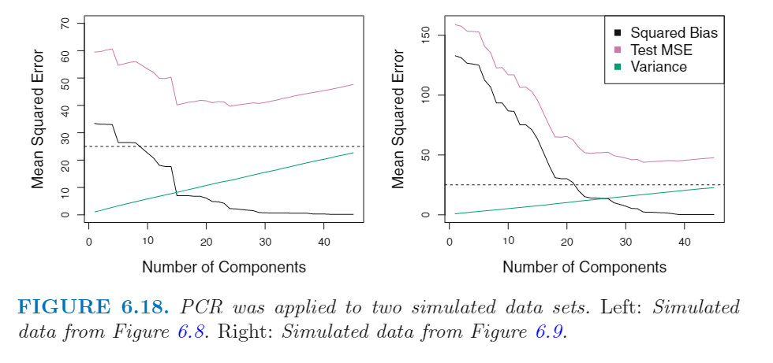
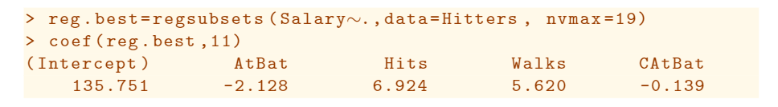

<!DOCTYPE html>


<html lang="zh-CN">


<head>
  <meta charset="utf-8" />
    
  <meta name="viewport" content="width=device-width, initial-scale=1, maximum-scale=1" />
  <title>
    线性模型选择与正则化 |  VincereZhou&#39;s blog
  </title>
  <meta name="generator" content="hexo-theme-ayer">
  
  <link rel="shortcut icon" href="/images/mojie.jpg" />
  
  
<link rel="stylesheet" href="/dist/main.css">

  <link rel="stylesheet" href="https://cdn.jsdelivr.net/gh/Shen-Yu/cdn/css/remixicon.min.css">
  
<link rel="stylesheet" href="/css/custom.css">

  
  <script src="https://cdn.jsdelivr.net/npm/pace-js@1.0.2/pace.min.js"></script>
  
  

  

<link rel="alternate" href="/atom.xml" title="VincereZhou's blog" type="application/atom+xml">
<link href="https://cdn.bootcss.com/KaTeX/0.11.1/katex.min.css" rel="stylesheet" /></head>

</html>

<body>
  <div id="app">
    
      
    <main class="content on">
      <section class="outer">
  <article
  id="post-线性模型选择与正则化"
  class="article article-type-post"
  itemscope
  itemprop="blogPost"
  data-scroll-reveal
>
  <div class="article-inner">
    
    <header class="article-header">
       
<h1 class="article-title sea-center" style="border-left:0" itemprop="name">
  线性模型选择与正则化
</h1>
 

    </header>
     
    <div class="article-meta">
      <a href="/posts/eb9174d6/" class="article-date">
  <time datetime="2021-06-04T03:32:42.000Z" itemprop="datePublished">2021-06-04</time>
</a> 
  <div class="article-category">
    <a class="article-category-link" href="/categories/%E7%90%86%E8%AE%BA%E5%AD%A6%E4%B9%A0/">理论学习</a> / <a class="article-category-link" href="/categories/%E7%90%86%E8%AE%BA%E5%AD%A6%E4%B9%A0/%E7%BA%BF%E6%80%A7%E6%A8%A1%E5%9E%8B/">线性模型</a>
  </div>
  
<div class="word_count">
    <span class="post-time">
        <span class="post-meta-item-icon">
            <i class="ri-quill-pen-line"></i>
            <span class="post-meta-item-text"> 字数统计:</span>
            <span class="post-count">12.8k</span>
        </span>
    </span>

    <span class="post-time">
        &nbsp; | &nbsp;
        <span class="post-meta-item-icon">
            <i class="ri-book-open-line"></i>
            <span class="post-meta-item-text"> 阅读时长≈</span>
            <span class="post-count">52 分钟</span>
        </span>
    </span>
</div>
 
    </div>
      
    <div class="tocbot"></div>


  
    <div class="article-entry" itemprop="articleBody">
       
  <p>ISL 真是好书！</p>
<span id="more"></span> 
<h1>资料</h1>
<p><a target="_blank" rel="noopener" href="https://www.statlearning.com/">An Introduction to Statistical Learning</a>，下文简称 <strong>ISL</strong></p>
<h1>概述</h1>
<p>标准的线性模型如下：</p>
<p class='katex-block'><span class="katex-display"><span class="katex"><span class="katex-mathml"><math xmlns="http://www.w3.org/1998/Math/MathML"><semantics><mrow><mi>Y</mi><mo>=</mo><msub><mi>β</mi><mn>0</mn></msub><mo>+</mo><msub><mi>β</mi><mn>1</mn></msub><msub><mi>X</mi><mn>1</mn></msub><mo>+</mo><mo>⋯</mo><mo>+</mo><msub><mi>β</mi><mi>p</mi></msub><msub><mi>X</mi><mi>p</mi></msub><mo>+</mo><mi>ϵ</mi></mrow><annotation encoding="application/x-tex">Y=\beta_{0}+\beta_{1} X_{1}+\cdots+\beta_{p} X_{p}+\epsilon
</annotation></semantics></math></span><span class="katex-html" aria-hidden="true"><span class="base"><span class="strut" style="height:0.68333em;vertical-align:0em;"></span><span class="mord mathdefault" style="margin-right:0.22222em;">Y</span><span class="mspace" style="margin-right:0.2777777777777778em;"></span><span class="mrel">=</span><span class="mspace" style="margin-right:0.2777777777777778em;"></span></span><span class="base"><span class="strut" style="height:0.8888799999999999em;vertical-align:-0.19444em;"></span><span class="mord"><span class="mord mathdefault" style="margin-right:0.05278em;">β</span><span class="msupsub"><span class="vlist-t vlist-t2"><span class="vlist-r"><span class="vlist" style="height:0.30110799999999993em;"><span style="top:-2.5500000000000003em;margin-left:-0.05278em;margin-right:0.05em;"><span class="pstrut" style="height:2.7em;"></span><span class="sizing reset-size6 size3 mtight"><span class="mord mtight"><span class="mord mtight">0</span></span></span></span></span><span class="vlist-s">​</span></span><span class="vlist-r"><span class="vlist" style="height:0.15em;"><span></span></span></span></span></span></span><span class="mspace" style="margin-right:0.2222222222222222em;"></span><span class="mbin">+</span><span class="mspace" style="margin-right:0.2222222222222222em;"></span></span><span class="base"><span class="strut" style="height:0.8888799999999999em;vertical-align:-0.19444em;"></span><span class="mord"><span class="mord mathdefault" style="margin-right:0.05278em;">β</span><span class="msupsub"><span class="vlist-t vlist-t2"><span class="vlist-r"><span class="vlist" style="height:0.30110799999999993em;"><span style="top:-2.5500000000000003em;margin-left:-0.05278em;margin-right:0.05em;"><span class="pstrut" style="height:2.7em;"></span><span class="sizing reset-size6 size3 mtight"><span class="mord mtight"><span class="mord mtight">1</span></span></span></span></span><span class="vlist-s">​</span></span><span class="vlist-r"><span class="vlist" style="height:0.15em;"><span></span></span></span></span></span></span><span class="mord"><span class="mord mathdefault" style="margin-right:0.07847em;">X</span><span class="msupsub"><span class="vlist-t vlist-t2"><span class="vlist-r"><span class="vlist" style="height:0.30110799999999993em;"><span style="top:-2.5500000000000003em;margin-left:-0.07847em;margin-right:0.05em;"><span class="pstrut" style="height:2.7em;"></span><span class="sizing reset-size6 size3 mtight"><span class="mord mtight"><span class="mord mtight">1</span></span></span></span></span><span class="vlist-s">​</span></span><span class="vlist-r"><span class="vlist" style="height:0.15em;"><span></span></span></span></span></span></span><span class="mspace" style="margin-right:0.2222222222222222em;"></span><span class="mbin">+</span><span class="mspace" style="margin-right:0.2222222222222222em;"></span></span><span class="base"><span class="strut" style="height:0.66666em;vertical-align:-0.08333em;"></span><span class="minner">⋯</span><span class="mspace" style="margin-right:0.2222222222222222em;"></span><span class="mbin">+</span><span class="mspace" style="margin-right:0.2222222222222222em;"></span></span><span class="base"><span class="strut" style="height:0.980548em;vertical-align:-0.286108em;"></span><span class="mord"><span class="mord mathdefault" style="margin-right:0.05278em;">β</span><span class="msupsub"><span class="vlist-t vlist-t2"><span class="vlist-r"><span class="vlist" style="height:0.15139200000000003em;"><span style="top:-2.5500000000000003em;margin-left:-0.05278em;margin-right:0.05em;"><span class="pstrut" style="height:2.7em;"></span><span class="sizing reset-size6 size3 mtight"><span class="mord mtight"><span class="mord mathdefault mtight">p</span></span></span></span></span><span class="vlist-s">​</span></span><span class="vlist-r"><span class="vlist" style="height:0.286108em;"><span></span></span></span></span></span></span><span class="mord"><span class="mord mathdefault" style="margin-right:0.07847em;">X</span><span class="msupsub"><span class="vlist-t vlist-t2"><span class="vlist-r"><span class="vlist" style="height:0.15139200000000003em;"><span style="top:-2.5500000000000003em;margin-left:-0.07847em;margin-right:0.05em;"><span class="pstrut" style="height:2.7em;"></span><span class="sizing reset-size6 size3 mtight"><span class="mord mtight"><span class="mord mathdefault mtight">p</span></span></span></span></span><span class="vlist-s">​</span></span><span class="vlist-r"><span class="vlist" style="height:0.286108em;"><span></span></span></span></span></span></span><span class="mspace" style="margin-right:0.2222222222222222em;"></span><span class="mbin">+</span><span class="mspace" style="margin-right:0.2222222222222222em;"></span></span><span class="base"><span class="strut" style="height:0.43056em;vertical-align:0em;"></span><span class="mord mathdefault">ϵ</span></span></span></span></span></p>
<p>线性模型在接近实际问题中依然富有竞争力，通过使用别的拟合过程替换最小二乘法，可以改善线性模型的效果（<em>prediction accuracy</em> 和 <em>model interpretability</em> ）。</p>
<ul>
<li><em>Prediction Accuracy</em> :  假设因变量与自变量之间的真实关系就是几乎线性的，那么使用最小二乘法得到的估计值的 bias 会很低。 如果 n &gt;&gt; p ，也就说观测值数目远大于自变量数目，那么最小二乘估计值的 variance 也会很低。因此，如果满足这两个条件，最小二乘方法表现会很好。然而，如果 n 不是远大于 p， 那么最小二乘拟合结果的 variance 很高，容易造成 overfitting，然后在预测新的样本时结果很差。如果 p &gt; n ，那么根本无法得到一个唯一的最小二乘参数估计值，最小二乘法根本无法使用。如果此时我们人为地降低因变量的个数，那么我们的代价就是在降低了 variance 的同时 提高了 bias。</li>
<li><em>Model Interpretability</em> :  很多情况下，多重回归的一些自变量其实压根和因变量没关系。将这些无关变量添加到模型中会使得模型增加不必要的复杂度。通过移除这些变量 （即将它们的系数估计值设为0），我们可以得到一个更容易解释的模型。但是，使用最小二乘法估计参数是不可能得到正好是0的参数的（可以接近0，但不是0）。</li>
</ul>
<p>ISL 这里提到了三类替代最小二乘的方法</p>
<ul>
<li><em>Subset Selection</em> : 这种方法包括确认我们认为与因变量有关的一组自变量（从总共 p 个自变量中挑子集），然后我们用减少了变量个数的这组自变量预测因变量。</li>
<li><em>Shrinkage</em> :  这个方法同时使用所有的 p 个变量来拟合模型。但是，所有的最小二乘预测值均向0收缩（称为 <em>regularization</em>）。这种方法可以减少 variance ，有一些系数可能会正好估计为0，从而降低了自变量个数，可以实现变量选择。</li>
<li><em>Dimension Reduction</em> : 这个方法包含了将 p 个自变量投射到 (<em>projecting</em>) 一个M维的子空间中，其中 M &lt; p 。</li>
</ul>
<h1>Subset Selection</h1>
<h2 id="best-subset-selection">Best Subset Selection</h2>
<p>为了找到 best subset， 我们需要使用 p 的自变量的所有组合来进行一个个单独的最小二乘拟合。因此我们需要进行p次包含一个变量的模型拟合，进行 p(p-1)/2 次包含两个变量的模型拟合，以此类推（总共 2<sup>p</sup> 次）。然后我们查看所有模型拟合的结果，找出我们认为是最好的模型。</p>
<p>这个过程的算法表述如下：这里我们挑出所有固定因子数目时的最佳组合，然后最后在比较不同因子数目中的最佳模型。</p>
<p></p>
<p><strong>但是，这里需要注意一点, RSS是会随着变量数目的增加而递减的，无论增加的自变量有没有用。</strong></p>
<p>**因此，如果你使用 RSS 或 R<sup>2</sup> 作为评价指标，最终最好的模型一定是包含了所有自变量的模型。**如下图所示</p>
<p></p>
<p>这里的问题在于，这里计算得到的 RSS 和 R<sup>2</sup> 实际衡量地是 <strong>training error</strong> ，但是我们要的模型应该是需要 <strong>test error</strong> 最低（training error 倾向于比 test error 更低，trainging error 很低无法保证 test error 很低）。因此在上图中的第三步，我们需要使用交叉验证的预测误差,  C<sub>p</sub>  ,  BIC , adjusted R<sup>2</sup> 来选择后 M<sub>0</sub> ,  M<sub>1</sub> ,  ……， M<sub>p</sub> 。</p>
<p>我们这里提到的思路虽然是用在最小二乘回归中，其他模型也是可以这么做的，比如逻辑回归。不过逻辑回归用的不是 RSS， 而是 <em><strong>deviance</strong></em> 。deviance 等于 -2 times <em>maximized log-likelihood</em> 。值越小，说明拟合程度越好。</p>
<p>虽然 <em>best subset seleciton</em> 方法很简单，逻辑也很清晰，但是它的问题就在于<strong>计算量</strong>太大。如果 p 大于40，这个算法就基本无法实现了。</p>
<h2 id="stepwise-selection">Stepwise Selection</h2>
<p>出于计算量的原因， 当 p 很大时，<em>best subset selection</em> 无法实现；除此之外，当 p 很大时这个方法还有其他问题。当 p 很大时，很大概率容易出现过拟合现象（模型仅适用于训练集，对于其他数据不适用，参见维度诅咒）</p>
<p>处于上面的原因，逐步回归是一个很好的备选方法。</p>
<h3 id="forward-stepwise-selection">Forward Stepwise Selection</h3>
<p>向前逐步回归指模型从没有自变量出发，然后每次新增一个自变量，至到所有的自变量都加入到模型中。在实际中，每一步拟合到模型中的变量是 <em>gives the greatest additional improvement</em> 的变量。这个算法具体过程如下：</p>
<p></p>
<p>这个算法比上面的 best subset 方法计算量小很多。虽然一般来说向前逐步回归效果很好，但是这种方法并不能保证一定能找到所有组合的最优组合。</p>
<p>例如，加入一个p=3的数据集，最好的一个变量的模型包含 X<sub>1</sub>，最好的两个变量的模型包含 X<sub>2</sub> 和 X<sub>3</sub> 。那么向前逐步回归在第二步找最优的二变量模型程序会失败，因为 M<sub>1</sub> 包含 X<sub>1</sub> ，因此 M<sub>2</sub> 必须包括 X<sub>1</sub> 。</p>
<p>这里举了个例子，比对 best subset 方法 和 forward stepwise 方法， 在四变量的时候，best subset 将 rating 替换为了 cards，而 forward stepwise 方法必须要包含 rating 。</p>
<p></p>
<h3 id="backward-stepwise-selection">Backward Stepwise Selection</h3>
<p>与向前迭代回归相反，向后迭代回归从包含所有的变量开始，然后每次剔除一个最没有用的变量。具体算法见下：</p>
<p></p>
<p>同样类似于向前迭代，向后迭代同样不保证能够挑出最好的模型。但是向后迭代要求 n &gt; p 。如果 p 很大，只能使用向前迭代。</p>
<h3 id="hybrid-approaches">Hybrid Approaches</h3>
<p>我们可以同时杂合使用向前迭代和向后迭代。我们先按照类似于向前迭代回归的方法来添加因子，但是当我们添加了一个新的变量后，这个方法会剔除不能使得这个模型拟合更好的变量（就是走一步，再退一步）。这种方法最接近于 best subset selection ，并且同时利用了向前迭代回归和向后迭代回归的优势。</p>
<p>其实意思就是说，基本用的方法是向前迭代，但是向前迭代是一种贪婪算法，之前的变量会一直保留。但是在不断新增变量的过程中，可能发生一种现象，那就是最开始加入的变量变得不重要了（变量之间的相关性），这个时候剔除不显著的初始变量更为合理。因此这种混合迭代的方法，每新增一个变量，就会看看旧的变量有没有无用变量，有的话就剔除。这种做法更加合理。</p>
<h2 id="choosing-the-optimal-model">Choosing the Optimal Model</h2>
<p><strong>上面的这些方法都会构建很多模型，我们需要一种方法来决定哪个模型是最优的</strong>。就像我们提到的，R<sup>2</sup> 和 RSS 会随着自变量数目的增加而降低，因此不能作为决定自变量数目不同的模型之间比较的指标。这里我们需要能估计 test error 的指标作为评判标准。这里有两种方法：</p>
<ol>
<li>我们可以i通过对 training error 做出调整，间接估计 test error</li>
<li>我们可以通过对 validation set 或使用交叉验证方法，直接估计 test error</li>
</ol>
<p>下面会详细介绍这两种方法</p>
<h3 id="c-sub-p-sub-aic-bic-and-adjusted-r-sup-2-sup">C<sub>p</sub>, AIC, BIC, and Adjusted R<sup>2</sup></h3>
<p>这些参数都是通过调整 training error 来估计  test error ，主要是避免了自变量数目会降低training error 的影响。这里主要考虑四种方法：<strong>C<sub>p</sub>, <abbr title="Akaike information criterion">AIC</abbr>, <abbr title="Bayesian information criterion">BIC</abbr>, and Adjusted R<sup>2</sup></strong> 。下图显示了 best subset selection 方法的四个参数的值的变化。</p>
<p></p>
<p>对于包含了 d 个因子的最小二乘模型， 使用 C<sub>p</sub> 估计 test MSE 的公式如下（下面是MSE的估计公式）：</p>
<p class='katex-block'><span class="katex-display"><span class="katex"><span class="katex-mathml"><math xmlns="http://www.w3.org/1998/Math/MathML"><semantics><mrow><msub><mi>C</mi><mi>p</mi></msub><mo>=</mo><mfrac><mn>1</mn><mi>n</mi></mfrac><mrow><mo fence="true">(</mo><mrow><mi mathvariant="normal">R</mi><mi mathvariant="normal">S</mi><mi mathvariant="normal">S</mi></mrow><mo>+</mo><mn>2</mn><mi>d</mi><msup><mover accent="true"><mi>σ</mi><mo>^</mo></mover><mn>2</mn></msup><mo fence="true">)</mo></mrow></mrow><annotation encoding="application/x-tex">C_{p}=\frac{1}{n}\left(\mathrm{RSS}+2 d \hat{\sigma}^{2}\right)
</annotation></semantics></math></span><span class="katex-html" aria-hidden="true"><span class="base"><span class="strut" style="height:0.969438em;vertical-align:-0.286108em;"></span><span class="mord"><span class="mord mathdefault" style="margin-right:0.07153em;">C</span><span class="msupsub"><span class="vlist-t vlist-t2"><span class="vlist-r"><span class="vlist" style="height:0.15139200000000003em;"><span style="top:-2.5500000000000003em;margin-left:-0.07153em;margin-right:0.05em;"><span class="pstrut" style="height:2.7em;"></span><span class="sizing reset-size6 size3 mtight"><span class="mord mtight"><span class="mord mathdefault mtight">p</span></span></span></span></span><span class="vlist-s">​</span></span><span class="vlist-r"><span class="vlist" style="height:0.286108em;"><span></span></span></span></span></span></span><span class="mspace" style="margin-right:0.2777777777777778em;"></span><span class="mrel">=</span><span class="mspace" style="margin-right:0.2777777777777778em;"></span></span><span class="base"><span class="strut" style="height:2.00744em;vertical-align:-0.686em;"></span><span class="mord"><span class="mopen nulldelimiter"></span><span class="mfrac"><span class="vlist-t vlist-t2"><span class="vlist-r"><span class="vlist" style="height:1.32144em;"><span style="top:-2.314em;"><span class="pstrut" style="height:3em;"></span><span class="mord"><span class="mord mathdefault">n</span></span></span><span style="top:-3.23em;"><span class="pstrut" style="height:3em;"></span><span class="frac-line" style="border-bottom-width:0.04em;"></span></span><span style="top:-3.677em;"><span class="pstrut" style="height:3em;"></span><span class="mord"><span class="mord">1</span></span></span></span><span class="vlist-s">​</span></span><span class="vlist-r"><span class="vlist" style="height:0.686em;"><span></span></span></span></span></span><span class="mclose nulldelimiter"></span></span><span class="mspace" style="margin-right:0.16666666666666666em;"></span><span class="minner"><span class="mopen delimcenter" style="top:0em;"><span class="delimsizing size1">(</span></span><span class="mord"><span class="mord mathrm">R</span><span class="mord mathrm">S</span><span class="mord mathrm">S</span></span><span class="mspace" style="margin-right:0.2222222222222222em;"></span><span class="mbin">+</span><span class="mspace" style="margin-right:0.2222222222222222em;"></span><span class="mord">2</span><span class="mord mathdefault">d</span><span class="mord"><span class="mord accent"><span class="vlist-t"><span class="vlist-r"><span class="vlist" style="height:0.69444em;"><span style="top:-3em;"><span class="pstrut" style="height:3em;"></span><span class="mord"><span class="mord mathdefault" style="margin-right:0.03588em;">σ</span></span></span><span style="top:-3em;"><span class="pstrut" style="height:3em;"></span><span class="accent-body" style="left:-0.25em;"><span class="mord">^</span></span></span></span></span></span></span><span class="msupsub"><span class="vlist-t"><span class="vlist-r"><span class="vlist" style="height:0.8641079999999999em;"><span style="top:-3.113em;margin-right:0.05em;"><span class="pstrut" style="height:2.7em;"></span><span class="sizing reset-size6 size3 mtight"><span class="mord mtight"><span class="mord mtight">2</span></span></span></span></span></span></span></span></span><span class="mclose delimcenter" style="top:0em;"><span class="delimsizing size1">)</span></span></span></span></span></span></span></p>
<p class='katex-block'><span class="katex-display"><span class="katex"><span class="katex-mathml"><math xmlns="http://www.w3.org/1998/Math/MathML"><semantics><mrow><mrow><mi>E</mi><mi>s</mi><mi>e</mi><mi>t</mi><mi>i</mi><mi>m</mi><mi>a</mi><mi>t</mi><mi>e</mi><mi>d</mi></mrow><mi mathvariant="normal">training</mi><mo>⁡</mo><mi mathvariant="normal">error</mi><mo>⁡</mo><mo>=</mo><mfrac><mn>1</mn><mi>n</mi></mfrac><mrow><mo fence="true">(</mo><mrow><mi mathvariant="normal">R</mi><mi mathvariant="normal">S</mi><mi mathvariant="normal">S</mi></mrow><mo fence="true">)</mo></mrow></mrow><annotation encoding="application/x-tex">{Esetimated} \operatorname { training } \operatorname {error}=\frac{1}{n}\left(\mathrm{RSS}\right)
</annotation></semantics></math></span><span class="katex-html" aria-hidden="true"><span class="base"><span class="strut" style="height:0.8888799999999999em;vertical-align:-0.19444em;"></span><span class="mord"><span class="mord mathdefault" style="margin-right:0.05764em;">E</span><span class="mord mathdefault">s</span><span class="mord mathdefault">e</span><span class="mord mathdefault">t</span><span class="mord mathdefault">i</span><span class="mord mathdefault">m</span><span class="mord mathdefault">a</span><span class="mord mathdefault">t</span><span class="mord mathdefault">e</span><span class="mord mathdefault">d</span></span><span class="mspace" style="margin-right:0.16666666666666666em;"></span><span class="mop"><span class="mord mathrm">t</span><span class="mord mathrm">r</span><span class="mord mathrm">a</span><span class="mord mathrm">i</span><span class="mord mathrm">n</span><span class="mord mathrm">i</span><span class="mord mathrm">n</span><span class="mord mathrm" style="margin-right:0.01389em;">g</span></span><span class="mspace" style="margin-right:0.16666666666666666em;"></span><span class="mop"><span class="mord mathrm">e</span><span class="mord mathrm">r</span><span class="mord mathrm">r</span><span class="mord mathrm">o</span><span class="mord mathrm">r</span></span><span class="mspace" style="margin-right:0.2777777777777778em;"></span><span class="mrel">=</span><span class="mspace" style="margin-right:0.2777777777777778em;"></span></span><span class="base"><span class="strut" style="height:2.00744em;vertical-align:-0.686em;"></span><span class="mord"><span class="mopen nulldelimiter"></span><span class="mfrac"><span class="vlist-t vlist-t2"><span class="vlist-r"><span class="vlist" style="height:1.32144em;"><span style="top:-2.314em;"><span class="pstrut" style="height:3em;"></span><span class="mord"><span class="mord mathdefault">n</span></span></span><span style="top:-3.23em;"><span class="pstrut" style="height:3em;"></span><span class="frac-line" style="border-bottom-width:0.04em;"></span></span><span style="top:-3.677em;"><span class="pstrut" style="height:3em;"></span><span class="mord"><span class="mord">1</span></span></span></span><span class="vlist-s">​</span></span><span class="vlist-r"><span class="vlist" style="height:0.686em;"><span></span></span></span></span></span><span class="mclose nulldelimiter"></span></span><span class="mspace" style="margin-right:0.16666666666666666em;"></span><span class="minner"><span class="mopen delimcenter" style="top:0em;">(</span><span class="mord"><span class="mord mathrm">R</span><span class="mord mathrm">S</span><span class="mord mathrm">S</span></span><span class="mclose delimcenter" style="top:0em;">)</span></span></span></span></span></span></p>
<p>这里 σ_hat<sup>2</sup>  是对因变量预测的残差方差的估计值。</p>
<p class='katex-block'><span class="katex-display"><span class="katex"><span class="katex-mathml"><math xmlns="http://www.w3.org/1998/Math/MathML"><semantics><mrow><mtext> training </mtext><mi mathvariant="normal">RSS</mi><mo>⁡</mo></mrow><annotation encoding="application/x-tex">\text { training } \operatorname{RSS}
</annotation></semantics></math></span><span class="katex-html" aria-hidden="true"><span class="base"><span class="strut" style="height:0.8777699999999999em;vertical-align:-0.19444em;"></span><span class="mord text"><span class="mord"> training </span></span><span class="mspace" style="margin-right:0.16666666666666666em;"></span><span class="mop"><span class="mord mathrm">R</span><span class="mord mathrm">S</span><span class="mord mathrm">S</span></span></span></span></span></span></p>
<p>我们可以 C<sub>p</sub> 添加了一个惩罚项，如下式，来调整 training error 容易低估 test error 的趋势。而且这个惩罚项会随着自变量数目的增加而增加（含有d），从而趋于弥补 training RSS 随着变量增加而降低的趋势。</p>
<p class='katex-block'><span class="katex-display"><span class="katex"><span class="katex-mathml"><math xmlns="http://www.w3.org/1998/Math/MathML"><semantics><mrow><mn>2</mn><mi>d</mi><msup><mover accent="true"><mi>σ</mi><mo>^</mo></mover><mn>2</mn></msup></mrow><annotation encoding="application/x-tex">2 d \hat{\sigma}^{2}
</annotation></semantics></math></span><span class="katex-html" aria-hidden="true"><span class="base"><span class="strut" style="height:0.8641079999999999em;vertical-align:0em;"></span><span class="mord">2</span><span class="mord mathdefault">d</span><span class="mord"><span class="mord accent"><span class="vlist-t"><span class="vlist-r"><span class="vlist" style="height:0.69444em;"><span style="top:-3em;"><span class="pstrut" style="height:3em;"></span><span class="mord"><span class="mord mathdefault" style="margin-right:0.03588em;">σ</span></span></span><span style="top:-3em;"><span class="pstrut" style="height:3em;"></span><span class="accent-body" style="left:-0.25em;"><span class="mord">^</span></span></span></span></span></span></span><span class="msupsub"><span class="vlist-t"><span class="vlist-r"><span class="vlist" style="height:0.8641079999999999em;"><span style="top:-3.113em;margin-right:0.05em;"><span class="pstrut" style="height:2.7em;"></span><span class="sizing reset-size6 size3 mtight"><span class="mord mtight"><span class="mord mtight">2</span></span></span></span></span></span></span></span></span></span></span></span></span></p>
<p>由于 σ_hat<sup>2</sup> 是 σ<sup>2</sup> 的无偏估计值，因此  C<sub>p</sub> 是 test MSE 的一个无偏估计值（?）。</p>
<p><strong>AIC</strong> 应用在使用最大似然法来拟合参数的模型中，但是在线性模型中，最大似然法和最小二乘是一回事。在这种情况下，AIC 计算公式如下</p>
<p class='katex-block'><span class="katex-display"><span class="katex"><span class="katex-mathml"><math xmlns="http://www.w3.org/1998/Math/MathML"><semantics><mrow><mrow><mi mathvariant="normal">A</mi><mi mathvariant="normal">I</mi><mi mathvariant="normal">C</mi></mrow><mo>=</mo><mfrac><mn>1</mn><mrow><mi>n</mi><msup><mover accent="true"><mi>σ</mi><mo>^</mo></mover><mn>2</mn></msup></mrow></mfrac><mrow><mo fence="true">(</mo><mrow><mi mathvariant="normal">R</mi><mi mathvariant="normal">S</mi><mi mathvariant="normal">S</mi></mrow><mo>+</mo><mn>2</mn><mi>d</mi><msup><mover accent="true"><mi>σ</mi><mo>^</mo></mover><mn>2</mn></msup><mo fence="true">)</mo></mrow></mrow><annotation encoding="application/x-tex">\mathrm{AIC}=\frac{1}{n \hat{\sigma}^{2}}\left(\mathrm{RSS}+2 d \hat{\sigma}^{2}\right)
</annotation></semantics></math></span><span class="katex-html" aria-hidden="true"><span class="base"><span class="strut" style="height:0.68333em;vertical-align:0em;"></span><span class="mord"><span class="mord mathrm">A</span><span class="mord mathrm">I</span><span class="mord mathrm">C</span></span><span class="mspace" style="margin-right:0.2777777777777778em;"></span><span class="mrel">=</span><span class="mspace" style="margin-right:0.2777777777777778em;"></span></span><span class="base"><span class="strut" style="height:2.00744em;vertical-align:-0.686em;"></span><span class="mord"><span class="mopen nulldelimiter"></span><span class="mfrac"><span class="vlist-t vlist-t2"><span class="vlist-r"><span class="vlist" style="height:1.32144em;"><span style="top:-2.314em;"><span class="pstrut" style="height:3em;"></span><span class="mord"><span class="mord mathdefault">n</span><span class="mord"><span class="mord accent"><span class="vlist-t"><span class="vlist-r"><span class="vlist" style="height:0.69444em;"><span style="top:-3em;"><span class="pstrut" style="height:3em;"></span><span class="mord"><span class="mord mathdefault" style="margin-right:0.03588em;">σ</span></span></span><span style="top:-3em;"><span class="pstrut" style="height:3em;"></span><span class="accent-body" style="left:-0.25em;"><span class="mord">^</span></span></span></span></span></span></span><span class="msupsub"><span class="vlist-t"><span class="vlist-r"><span class="vlist" style="height:0.740108em;"><span style="top:-2.9890000000000003em;margin-right:0.05em;"><span class="pstrut" style="height:2.7em;"></span><span class="sizing reset-size6 size3 mtight"><span class="mord mtight"><span class="mord mtight">2</span></span></span></span></span></span></span></span></span></span></span><span style="top:-3.23em;"><span class="pstrut" style="height:3em;"></span><span class="frac-line" style="border-bottom-width:0.04em;"></span></span><span style="top:-3.677em;"><span class="pstrut" style="height:3em;"></span><span class="mord"><span class="mord">1</span></span></span></span><span class="vlist-s">​</span></span><span class="vlist-r"><span class="vlist" style="height:0.686em;"><span></span></span></span></span></span><span class="mclose nulldelimiter"></span></span><span class="mspace" style="margin-right:0.16666666666666666em;"></span><span class="minner"><span class="mopen delimcenter" style="top:0em;"><span class="delimsizing size1">(</span></span><span class="mord"><span class="mord mathrm">R</span><span class="mord mathrm">S</span><span class="mord mathrm">S</span></span><span class="mspace" style="margin-right:0.2222222222222222em;"></span><span class="mbin">+</span><span class="mspace" style="margin-right:0.2222222222222222em;"></span><span class="mord">2</span><span class="mord mathdefault">d</span><span class="mord"><span class="mord accent"><span class="vlist-t"><span class="vlist-r"><span class="vlist" style="height:0.69444em;"><span style="top:-3em;"><span class="pstrut" style="height:3em;"></span><span class="mord"><span class="mord mathdefault" style="margin-right:0.03588em;">σ</span></span></span><span style="top:-3em;"><span class="pstrut" style="height:3em;"></span><span class="accent-body" style="left:-0.25em;"><span class="mord">^</span></span></span></span></span></span></span><span class="msupsub"><span class="vlist-t"><span class="vlist-r"><span class="vlist" style="height:0.8641079999999999em;"><span style="top:-3.113em;margin-right:0.05em;"><span class="pstrut" style="height:2.7em;"></span><span class="sizing reset-size6 size3 mtight"><span class="mord mtight"><span class="mord mtight">2</span></span></span></span></span></span></span></span></span><span class="mclose delimcenter" style="top:0em;"><span class="delimsizing size1">)</span></span></span></span></span></span></span></p>
<p>我们可以看到 AIC 和  C<sub>p</sub>  是一个比例关系，AIC 乘以  σ_hat<sup>2</sup> 就得到了  C<sub>p</sub> ，因此这两个是等价的，所以在上图中只显示了  C<sub>p</sub> 的结果。</p>
<p>BIC 来源于贝叶斯的观点，但是最终的公式和 AIC/ C<sub>p</sub> 差不多，对于最小二乘模型，公式如下，这里相比较 AIC ，就是把 2 改为了 log(n) （这里其实应该写成 ln(n) , 底为 e,  只要 n &gt; 7, ln(n) 就大于2 ），因此 <strong>BIC 对自变量数目很多的模型的惩罚效应更重</strong>。因此上面的图中 BIC 的最佳变量数目为 4，而 AIC/ C<sub>p</sub>是 6 ，其实在图中我们看到变量数目为4后面的曲线就很平了，变量数为4还是6没啥区别。</p>
<p class='katex-block'><span class="katex-display"><span class="katex"><span class="katex-mathml"><math xmlns="http://www.w3.org/1998/Math/MathML"><semantics><mrow><mrow><mi mathvariant="normal">B</mi><mi mathvariant="normal">I</mi><mi mathvariant="normal">C</mi></mrow><mo>=</mo><mfrac><mn>1</mn><mrow><mi>n</mi><msup><mover accent="true"><mi>σ</mi><mo>^</mo></mover><mn>2</mn></msup></mrow></mfrac><mrow><mo fence="true">(</mo><mrow><mi mathvariant="normal">R</mi><mi mathvariant="normal">S</mi><mi mathvariant="normal">S</mi></mrow><mo>+</mo><mi>log</mi><mo>⁡</mo><mo stretchy="false">(</mo><mi>n</mi><mo stretchy="false">)</mo><mi>d</mi><msup><mover accent="true"><mi>σ</mi><mo>^</mo></mover><mn>2</mn></msup><mo fence="true">)</mo></mrow></mrow><annotation encoding="application/x-tex">\mathrm{BIC}=\frac{1}{n \hat{\sigma}^{2}}\left(\mathrm{RSS}+\log (n) d \hat{\sigma}^{2}\right)
</annotation></semantics></math></span><span class="katex-html" aria-hidden="true"><span class="base"><span class="strut" style="height:0.68333em;vertical-align:0em;"></span><span class="mord"><span class="mord mathrm">B</span><span class="mord mathrm">I</span><span class="mord mathrm">C</span></span><span class="mspace" style="margin-right:0.2777777777777778em;"></span><span class="mrel">=</span><span class="mspace" style="margin-right:0.2777777777777778em;"></span></span><span class="base"><span class="strut" style="height:2.00744em;vertical-align:-0.686em;"></span><span class="mord"><span class="mopen nulldelimiter"></span><span class="mfrac"><span class="vlist-t vlist-t2"><span class="vlist-r"><span class="vlist" style="height:1.32144em;"><span style="top:-2.314em;"><span class="pstrut" style="height:3em;"></span><span class="mord"><span class="mord mathdefault">n</span><span class="mord"><span class="mord accent"><span class="vlist-t"><span class="vlist-r"><span class="vlist" style="height:0.69444em;"><span style="top:-3em;"><span class="pstrut" style="height:3em;"></span><span class="mord"><span class="mord mathdefault" style="margin-right:0.03588em;">σ</span></span></span><span style="top:-3em;"><span class="pstrut" style="height:3em;"></span><span class="accent-body" style="left:-0.25em;"><span class="mord">^</span></span></span></span></span></span></span><span class="msupsub"><span class="vlist-t"><span class="vlist-r"><span class="vlist" style="height:0.740108em;"><span style="top:-2.9890000000000003em;margin-right:0.05em;"><span class="pstrut" style="height:2.7em;"></span><span class="sizing reset-size6 size3 mtight"><span class="mord mtight"><span class="mord mtight">2</span></span></span></span></span></span></span></span></span></span></span><span style="top:-3.23em;"><span class="pstrut" style="height:3em;"></span><span class="frac-line" style="border-bottom-width:0.04em;"></span></span><span style="top:-3.677em;"><span class="pstrut" style="height:3em;"></span><span class="mord"><span class="mord">1</span></span></span></span><span class="vlist-s">​</span></span><span class="vlist-r"><span class="vlist" style="height:0.686em;"><span></span></span></span></span></span><span class="mclose nulldelimiter"></span></span><span class="mspace" style="margin-right:0.16666666666666666em;"></span><span class="minner"><span class="mopen delimcenter" style="top:0em;"><span class="delimsizing size1">(</span></span><span class="mord"><span class="mord mathrm">R</span><span class="mord mathrm">S</span><span class="mord mathrm">S</span></span><span class="mspace" style="margin-right:0.2222222222222222em;"></span><span class="mbin">+</span><span class="mspace" style="margin-right:0.2222222222222222em;"></span><span class="mop">lo<span style="margin-right:0.01389em;">g</span></span><span class="mopen">(</span><span class="mord mathdefault">n</span><span class="mclose">)</span><span class="mord mathdefault">d</span><span class="mord"><span class="mord accent"><span class="vlist-t"><span class="vlist-r"><span class="vlist" style="height:0.69444em;"><span style="top:-3em;"><span class="pstrut" style="height:3em;"></span><span class="mord"><span class="mord mathdefault" style="margin-right:0.03588em;">σ</span></span></span><span style="top:-3em;"><span class="pstrut" style="height:3em;"></span><span class="accent-body" style="left:-0.25em;"><span class="mord">^</span></span></span></span></span></span></span><span class="msupsub"><span class="vlist-t"><span class="vlist-r"><span class="vlist" style="height:0.8641079999999999em;"><span style="top:-3.113em;margin-right:0.05em;"><span class="pstrut" style="height:2.7em;"></span><span class="sizing reset-size6 size3 mtight"><span class="mord mtight"><span class="mord mtight">2</span></span></span></span></span></span></span></span></span><span class="mclose delimcenter" style="top:0em;"><span class="delimsizing size1">)</span></span></span></span></span></span></span></p>
<p>校正R2 公式如下，也是会对变量数目过多有惩罚效应</p>
<p class='katex-block'><span class="katex-display"><span class="katex"><span class="katex-mathml"><math xmlns="http://www.w3.org/1998/Math/MathML"><semantics><mrow><mtext> Adjusted </mtext><msup><mi>R</mi><mn>2</mn></msup><mo>=</mo><mn>1</mn><mo>−</mo><mfrac><mrow><mi mathvariant="normal">RSS</mi><mo>⁡</mo><mi mathvariant="normal">/</mi><mo stretchy="false">(</mo><mi>n</mi><mo>−</mo><mi>d</mi><mo>−</mo><mn>1</mn><mo stretchy="false">)</mo></mrow><mrow><mi mathvariant="normal">TSS</mi><mo>⁡</mo><mi mathvariant="normal">/</mi><mo stretchy="false">(</mo><mi>n</mi><mo>−</mo><mn>1</mn><mo stretchy="false">)</mo></mrow></mfrac></mrow><annotation encoding="application/x-tex">\text { Adjusted } R^{2}=1-\frac{\operatorname{RSS} /(n-d-1)}{\operatorname{TSS} /(n-1)}
</annotation></semantics></math></span><span class="katex-html" aria-hidden="true"><span class="base"><span class="strut" style="height:1.0585479999999998em;vertical-align:-0.19444em;"></span><span class="mord text"><span class="mord"> Adjusted </span></span><span class="mord"><span class="mord mathdefault" style="margin-right:0.00773em;">R</span><span class="msupsub"><span class="vlist-t"><span class="vlist-r"><span class="vlist" style="height:0.8641079999999999em;"><span style="top:-3.113em;margin-right:0.05em;"><span class="pstrut" style="height:2.7em;"></span><span class="sizing reset-size6 size3 mtight"><span class="mord mtight"><span class="mord mtight">2</span></span></span></span></span></span></span></span></span><span class="mspace" style="margin-right:0.2777777777777778em;"></span><span class="mrel">=</span><span class="mspace" style="margin-right:0.2777777777777778em;"></span></span><span class="base"><span class="strut" style="height:0.72777em;vertical-align:-0.08333em;"></span><span class="mord">1</span><span class="mspace" style="margin-right:0.2222222222222222em;"></span><span class="mbin">−</span><span class="mspace" style="margin-right:0.2222222222222222em;"></span></span><span class="base"><span class="strut" style="height:2.363em;vertical-align:-0.936em;"></span><span class="mord"><span class="mopen nulldelimiter"></span><span class="mfrac"><span class="vlist-t vlist-t2"><span class="vlist-r"><span class="vlist" style="height:1.427em;"><span style="top:-2.314em;"><span class="pstrut" style="height:3em;"></span><span class="mord"><span class="mop"><span class="mord mathrm">T</span><span class="mord mathrm">S</span><span class="mord mathrm">S</span></span><span class="mspace" style="margin-right:0.16666666666666666em;"></span><span class="mord">/</span><span class="mopen">(</span><span class="mord mathdefault">n</span><span class="mspace" style="margin-right:0.2222222222222222em;"></span><span class="mbin">−</span><span class="mspace" style="margin-right:0.2222222222222222em;"></span><span class="mord">1</span><span class="mclose">)</span></span></span><span style="top:-3.23em;"><span class="pstrut" style="height:3em;"></span><span class="frac-line" style="border-bottom-width:0.04em;"></span></span><span style="top:-3.677em;"><span class="pstrut" style="height:3em;"></span><span class="mord"><span class="mop"><span class="mord mathrm">R</span><span class="mord mathrm">S</span><span class="mord mathrm">S</span></span><span class="mspace" style="margin-right:0.16666666666666666em;"></span><span class="mord">/</span><span class="mopen">(</span><span class="mord mathdefault">n</span><span class="mspace" style="margin-right:0.2222222222222222em;"></span><span class="mbin">−</span><span class="mspace" style="margin-right:0.2222222222222222em;"></span><span class="mord mathdefault">d</span><span class="mspace" style="margin-right:0.2222222222222222em;"></span><span class="mbin">−</span><span class="mspace" style="margin-right:0.2222222222222222em;"></span><span class="mord">1</span><span class="mclose">)</span></span></span></span><span class="vlist-s">​</span></span><span class="vlist-r"><span class="vlist" style="height:0.936em;"><span></span></span></span></span></span><span class="mclose nulldelimiter"></span></span></span></span></span></span></p>
<p>这四种方法均有严谨的理论证明，但是ISL没讲，它们的证明均有一定的前提或<strong>假设</strong>（如 n 非常大）。<strong>虽然校正R<sup>2</sup> 很流行，但是从理论上校正R<sup>2</sup> 的效果不如另外三种方法</strong>。</p>
<h3 id="validation-and-cross-validation">Validation and Cross-Validation</h3>
<p>除了通过校正 training error 间接估计 test error ，我们也可以通过验证集或交叉验证直接估计 test error ，好处就是需要满足的假设更少，而且可以应用在非常广泛的模型选择任务中（不一定是线性模型）。</p>
<p>在过去，由于执行交叉验证需要很大的计算量无法实现，从而导致 AIC ，BIC 等方法更加流行。但是如今随着计算机算力的增加，交叉验证的计算量已经不再是问题了，因此交叉验证成为了模型选择更好的方法。</p>
<p>下图展示了 BIC， validation set errors , CV （k=10）三种方法的结果，我们可以看后面两种方法的最佳变量数目均是6，但是我们看到 变量数是4 还是 6 差不多。validation set errors 是通过随机挑选3/4的个体作为训练集，剩下的个体就作为验证集。</p>
<p></p>
<p>其实我们可以看到，变量数为 3到11之间的差距很多，如果计算 valiation set errors 时换一种区分参考集和验证集的方式，或者 CV 方法换一个 k 值，那么可能找到的最佳的变量数目会变化。其实，实际我们选模型的方式是 <em><strong>one-standard-error rule</strong></em> ：我们需要同时计算 test MSE 估计值的标准误，然后<strong>挑 test MSE 最低点 的 一倍标准误内的最简单的模型。</strong> 后面的逻辑就是：<strong>如果有很多模型效果差不多好，那么我们应该挑最简单的模型</strong>。 在上面的例子中，我们最终挑选的模型就是 3个变量的模型。</p>
<h1>Shrinkage Methods</h1>
<p>上面提到的那些方法是用来挑选变量的方法。作为另外一种备选方法，我们可以同时将 p 个预测因子均包含在模型中，然后 <em>constrain</em> 或者说是 <em>regularize</em> 系数估计值，或者说是，<em>shrinks</em> the coefficient estimates towards zero。</p>
<p>在这当中，最出名的两个方法就是 <em>ridge  regression</em> 和 <em>lasso</em> 。</p>
<h2 id="ridge-regression">Ridge Regression</h2>
<p>一般的线性模型估计参数的标准是，使得RSS最小，公式如下：</p>
<p class='katex-block'><span class="katex-display"><span class="katex"><span class="katex-mathml"><math xmlns="http://www.w3.org/1998/Math/MathML"><semantics><mrow><mrow><mi mathvariant="normal">R</mi><mi mathvariant="normal">S</mi><mi mathvariant="normal">S</mi></mrow><mo>=</mo><munderover><mo>∑</mo><mrow><mi>i</mi><mo>=</mo><mn>1</mn></mrow><mi>n</mi></munderover><msup><mrow><mo fence="true">(</mo><msub><mi>y</mi><mi>i</mi></msub><mo>−</mo><msub><mi>β</mi><mn>0</mn></msub><mo>−</mo><munderover><mo>∑</mo><mrow><mi>j</mi><mo>=</mo><mn>1</mn></mrow><mi>p</mi></munderover><msub><mi>β</mi><mi>j</mi></msub><msub><mi>x</mi><mrow><mi>i</mi><mi>j</mi></mrow></msub><mo fence="true">)</mo></mrow><mn>2</mn></msup></mrow><annotation encoding="application/x-tex">\mathrm{RSS}=\sum_{i=1}^{n}\left(y_{i}-\beta_{0}-\sum_{j=1}^{p} \beta_{j} x_{i j}\right)^{2}
</annotation></semantics></math></span><span class="katex-html" aria-hidden="true"><span class="base"><span class="strut" style="height:0.68333em;vertical-align:0em;"></span><span class="mord"><span class="mord mathrm">R</span><span class="mord mathrm">S</span><span class="mord mathrm">S</span></span><span class="mspace" style="margin-right:0.2777777777777778em;"></span><span class="mrel">=</span><span class="mspace" style="margin-right:0.2777777777777778em;"></span></span><span class="base"><span class="strut" style="height:3.3677849999999996em;vertical-align:-1.4137769999999998em;"></span><span class="mop op-limits"><span class="vlist-t vlist-t2"><span class="vlist-r"><span class="vlist" style="height:1.6513970000000002em;"><span style="top:-1.872331em;margin-left:0em;"><span class="pstrut" style="height:3.05em;"></span><span class="sizing reset-size6 size3 mtight"><span class="mord mtight"><span class="mord mathdefault mtight">i</span><span class="mrel mtight">=</span><span class="mord mtight">1</span></span></span></span><span style="top:-3.050005em;"><span class="pstrut" style="height:3.05em;"></span><span><span class="mop op-symbol large-op">∑</span></span></span><span style="top:-4.3000050000000005em;margin-left:0em;"><span class="pstrut" style="height:3.05em;"></span><span class="sizing reset-size6 size3 mtight"><span class="mord mtight"><span class="mord mathdefault mtight">n</span></span></span></span></span><span class="vlist-s">​</span></span><span class="vlist-r"><span class="vlist" style="height:1.277669em;"><span></span></span></span></span></span><span class="mspace" style="margin-right:0.16666666666666666em;"></span><span class="minner"><span class="minner"><span class="mopen delimcenter" style="top:0em;"><span class="delimsizing size4">(</span></span><span class="mord"><span class="mord mathdefault" style="margin-right:0.03588em;">y</span><span class="msupsub"><span class="vlist-t vlist-t2"><span class="vlist-r"><span class="vlist" style="height:0.31166399999999994em;"><span style="top:-2.5500000000000003em;margin-left:-0.03588em;margin-right:0.05em;"><span class="pstrut" style="height:2.7em;"></span><span class="sizing reset-size6 size3 mtight"><span class="mord mtight"><span class="mord mathdefault mtight">i</span></span></span></span></span><span class="vlist-s">​</span></span><span class="vlist-r"><span class="vlist" style="height:0.15em;"><span></span></span></span></span></span></span><span class="mspace" style="margin-right:0.2222222222222222em;"></span><span class="mbin">−</span><span class="mspace" style="margin-right:0.2222222222222222em;"></span><span class="mord"><span class="mord mathdefault" style="margin-right:0.05278em;">β</span><span class="msupsub"><span class="vlist-t vlist-t2"><span class="vlist-r"><span class="vlist" style="height:0.30110799999999993em;"><span style="top:-2.5500000000000003em;margin-left:-0.05278em;margin-right:0.05em;"><span class="pstrut" style="height:2.7em;"></span><span class="sizing reset-size6 size3 mtight"><span class="mord mtight"><span class="mord mtight">0</span></span></span></span></span><span class="vlist-s">​</span></span><span class="vlist-r"><span class="vlist" style="height:0.15em;"><span></span></span></span></span></span></span><span class="mspace" style="margin-right:0.2222222222222222em;"></span><span class="mbin">−</span><span class="mspace" style="margin-right:0.2222222222222222em;"></span><span class="mop op-limits"><span class="vlist-t vlist-t2"><span class="vlist-r"><span class="vlist" style="height:1.6985050000000006em;"><span style="top:-1.872331em;margin-left:0em;"><span class="pstrut" style="height:3.05em;"></span><span class="sizing reset-size6 size3 mtight"><span class="mord mtight"><span class="mord mathdefault mtight" style="margin-right:0.05724em;">j</span><span class="mrel mtight">=</span><span class="mord mtight">1</span></span></span></span><span style="top:-3.050005em;"><span class="pstrut" style="height:3.05em;"></span><span><span class="mop op-symbol large-op">∑</span></span></span><span style="top:-4.347113em;margin-left:0em;"><span class="pstrut" style="height:3.05em;"></span><span class="sizing reset-size6 size3 mtight"><span class="mord mtight"><span class="mord mathdefault mtight">p</span></span></span></span></span><span class="vlist-s">​</span></span><span class="vlist-r"><span class="vlist" style="height:1.4137769999999998em;"><span></span></span></span></span></span><span class="mspace" style="margin-right:0.16666666666666666em;"></span><span class="mord"><span class="mord mathdefault" style="margin-right:0.05278em;">β</span><span class="msupsub"><span class="vlist-t vlist-t2"><span class="vlist-r"><span class="vlist" style="height:0.311664em;"><span style="top:-2.5500000000000003em;margin-left:-0.05278em;margin-right:0.05em;"><span class="pstrut" style="height:2.7em;"></span><span class="sizing reset-size6 size3 mtight"><span class="mord mtight"><span class="mord mathdefault mtight" style="margin-right:0.05724em;">j</span></span></span></span></span><span class="vlist-s">​</span></span><span class="vlist-r"><span class="vlist" style="height:0.286108em;"><span></span></span></span></span></span></span><span class="mord"><span class="mord mathdefault">x</span><span class="msupsub"><span class="vlist-t vlist-t2"><span class="vlist-r"><span class="vlist" style="height:0.311664em;"><span style="top:-2.5500000000000003em;margin-left:0em;margin-right:0.05em;"><span class="pstrut" style="height:2.7em;"></span><span class="sizing reset-size6 size3 mtight"><span class="mord mtight"><span class="mord mathdefault mtight">i</span><span class="mord mathdefault mtight" style="margin-right:0.05724em;">j</span></span></span></span></span><span class="vlist-s">​</span></span><span class="vlist-r"><span class="vlist" style="height:0.286108em;"><span></span></span></span></span></span></span><span class="mclose delimcenter" style="top:0em;"><span class="delimsizing size4">)</span></span></span><span class="msupsub"><span class="vlist-t"><span class="vlist-r"><span class="vlist" style="height:1.954008em;"><span style="top:-4.2029000000000005em;margin-right:0.05em;"><span class="pstrut" style="height:2.7em;"></span><span class="sizing reset-size6 size3 mtight"><span class="mord mtight"><span class="mord mtight">2</span></span></span></span></span></span></span></span></span></span></span></span></span></p>
<p>岭回归（Ridge regression）类似于最小二乘，但是它拟合参数用的需要最小化的指标不同，公式如下，其中 λ ≥ 0 ， 称之为 <em>tuning parameter</em> 。每设置一个不同的 λ ，就能得到一套不同的模型参数。因此，<strong>选择一个合适的 λ 是至关重要的</strong>。</p>
<p class='katex-block'><span class="katex-display"><span class="katex"><span class="katex-mathml"><math xmlns="http://www.w3.org/1998/Math/MathML"><semantics><mrow><munderover><mo>∑</mo><mrow><mi>i</mi><mo>=</mo><mn>1</mn></mrow><mi>n</mi></munderover><msup><mrow><mo fence="true">(</mo><msub><mi>y</mi><mi>i</mi></msub><mo>−</mo><msub><mi>β</mi><mn>0</mn></msub><mo>−</mo><munderover><mo>∑</mo><mrow><mi>j</mi><mo>=</mo><mn>1</mn></mrow><mi>p</mi></munderover><msub><mi>β</mi><mi>j</mi></msub><msub><mi>x</mi><mrow><mi>i</mi><mi>j</mi></mrow></msub><mo fence="true">)</mo></mrow><mn>2</mn></msup><mo>+</mo><mi>λ</mi><munderover><mo>∑</mo><mrow><mi>j</mi><mo>=</mo><mn>1</mn></mrow><mi>p</mi></munderover><msubsup><mi>β</mi><mi>j</mi><mn>2</mn></msubsup><mo>=</mo><mrow><mi mathvariant="normal">R</mi><mi mathvariant="normal">S</mi><mi mathvariant="normal">S</mi></mrow><mo>+</mo><mi>λ</mi><munderover><mo>∑</mo><mrow><mi>j</mi><mo>=</mo><mn>1</mn></mrow><mi>p</mi></munderover><msubsup><mi>β</mi><mi>j</mi><mn>2</mn></msubsup></mrow><annotation encoding="application/x-tex">\sum_{i=1}^{n}\left(y_{i}-\beta_{0}-\sum_{j=1}^{p} \beta_{j} x_{i j}\right)^{2}+\lambda \sum_{j=1}^{p} \beta_{j}^{2}=\mathrm{RSS}+\lambda \sum_{j=1}^{p} \beta_{j}^{2}
</annotation></semantics></math></span><span class="katex-html" aria-hidden="true"><span class="base"><span class="strut" style="height:3.3677849999999996em;vertical-align:-1.4137769999999998em;"></span><span class="mop op-limits"><span class="vlist-t vlist-t2"><span class="vlist-r"><span class="vlist" style="height:1.6513970000000002em;"><span style="top:-1.872331em;margin-left:0em;"><span class="pstrut" style="height:3.05em;"></span><span class="sizing reset-size6 size3 mtight"><span class="mord mtight"><span class="mord mathdefault mtight">i</span><span class="mrel mtight">=</span><span class="mord mtight">1</span></span></span></span><span style="top:-3.050005em;"><span class="pstrut" style="height:3.05em;"></span><span><span class="mop op-symbol large-op">∑</span></span></span><span style="top:-4.3000050000000005em;margin-left:0em;"><span class="pstrut" style="height:3.05em;"></span><span class="sizing reset-size6 size3 mtight"><span class="mord mtight"><span class="mord mathdefault mtight">n</span></span></span></span></span><span class="vlist-s">​</span></span><span class="vlist-r"><span class="vlist" style="height:1.277669em;"><span></span></span></span></span></span><span class="mspace" style="margin-right:0.16666666666666666em;"></span><span class="minner"><span class="minner"><span class="mopen delimcenter" style="top:0em;"><span class="delimsizing size4">(</span></span><span class="mord"><span class="mord mathdefault" style="margin-right:0.03588em;">y</span><span class="msupsub"><span class="vlist-t vlist-t2"><span class="vlist-r"><span class="vlist" style="height:0.31166399999999994em;"><span style="top:-2.5500000000000003em;margin-left:-0.03588em;margin-right:0.05em;"><span class="pstrut" style="height:2.7em;"></span><span class="sizing reset-size6 size3 mtight"><span class="mord mtight"><span class="mord mathdefault mtight">i</span></span></span></span></span><span class="vlist-s">​</span></span><span class="vlist-r"><span class="vlist" style="height:0.15em;"><span></span></span></span></span></span></span><span class="mspace" style="margin-right:0.2222222222222222em;"></span><span class="mbin">−</span><span class="mspace" style="margin-right:0.2222222222222222em;"></span><span class="mord"><span class="mord mathdefault" style="margin-right:0.05278em;">β</span><span class="msupsub"><span class="vlist-t vlist-t2"><span class="vlist-r"><span class="vlist" style="height:0.30110799999999993em;"><span style="top:-2.5500000000000003em;margin-left:-0.05278em;margin-right:0.05em;"><span class="pstrut" style="height:2.7em;"></span><span class="sizing reset-size6 size3 mtight"><span class="mord mtight"><span class="mord mtight">0</span></span></span></span></span><span class="vlist-s">​</span></span><span class="vlist-r"><span class="vlist" style="height:0.15em;"><span></span></span></span></span></span></span><span class="mspace" style="margin-right:0.2222222222222222em;"></span><span class="mbin">−</span><span class="mspace" style="margin-right:0.2222222222222222em;"></span><span class="mop op-limits"><span class="vlist-t vlist-t2"><span class="vlist-r"><span class="vlist" style="height:1.6985050000000006em;"><span style="top:-1.872331em;margin-left:0em;"><span class="pstrut" style="height:3.05em;"></span><span class="sizing reset-size6 size3 mtight"><span class="mord mtight"><span class="mord mathdefault mtight" style="margin-right:0.05724em;">j</span><span class="mrel mtight">=</span><span class="mord mtight">1</span></span></span></span><span style="top:-3.050005em;"><span class="pstrut" style="height:3.05em;"></span><span><span class="mop op-symbol large-op">∑</span></span></span><span style="top:-4.347113em;margin-left:0em;"><span class="pstrut" style="height:3.05em;"></span><span class="sizing reset-size6 size3 mtight"><span class="mord mtight"><span class="mord mathdefault mtight">p</span></span></span></span></span><span class="vlist-s">​</span></span><span class="vlist-r"><span class="vlist" style="height:1.4137769999999998em;"><span></span></span></span></span></span><span class="mspace" style="margin-right:0.16666666666666666em;"></span><span class="mord"><span class="mord mathdefault" style="margin-right:0.05278em;">β</span><span class="msupsub"><span class="vlist-t vlist-t2"><span class="vlist-r"><span class="vlist" style="height:0.311664em;"><span style="top:-2.5500000000000003em;margin-left:-0.05278em;margin-right:0.05em;"><span class="pstrut" style="height:2.7em;"></span><span class="sizing reset-size6 size3 mtight"><span class="mord mtight"><span class="mord mathdefault mtight" style="margin-right:0.05724em;">j</span></span></span></span></span><span class="vlist-s">​</span></span><span class="vlist-r"><span class="vlist" style="height:0.286108em;"><span></span></span></span></span></span></span><span class="mord"><span class="mord mathdefault">x</span><span class="msupsub"><span class="vlist-t vlist-t2"><span class="vlist-r"><span class="vlist" style="height:0.311664em;"><span style="top:-2.5500000000000003em;margin-left:0em;margin-right:0.05em;"><span class="pstrut" style="height:2.7em;"></span><span class="sizing reset-size6 size3 mtight"><span class="mord mtight"><span class="mord mathdefault mtight">i</span><span class="mord mathdefault mtight" style="margin-right:0.05724em;">j</span></span></span></span></span><span class="vlist-s">​</span></span><span class="vlist-r"><span class="vlist" style="height:0.286108em;"><span></span></span></span></span></span></span><span class="mclose delimcenter" style="top:0em;"><span class="delimsizing size4">)</span></span></span><span class="msupsub"><span class="vlist-t"><span class="vlist-r"><span class="vlist" style="height:1.954008em;"><span style="top:-4.2029000000000005em;margin-right:0.05em;"><span class="pstrut" style="height:2.7em;"></span><span class="sizing reset-size6 size3 mtight"><span class="mord mtight"><span class="mord mtight">2</span></span></span></span></span></span></span></span></span><span class="mspace" style="margin-right:0.2222222222222222em;"></span><span class="mbin">+</span><span class="mspace" style="margin-right:0.2222222222222222em;"></span></span><span class="base"><span class="strut" style="height:3.1122820000000004em;vertical-align:-1.4137769999999998em;"></span><span class="mord mathdefault">λ</span><span class="mspace" style="margin-right:0.16666666666666666em;"></span><span class="mop op-limits"><span class="vlist-t vlist-t2"><span class="vlist-r"><span class="vlist" style="height:1.6985050000000006em;"><span style="top:-1.872331em;margin-left:0em;"><span class="pstrut" style="height:3.05em;"></span><span class="sizing reset-size6 size3 mtight"><span class="mord mtight"><span class="mord mathdefault mtight" style="margin-right:0.05724em;">j</span><span class="mrel mtight">=</span><span class="mord mtight">1</span></span></span></span><span style="top:-3.050005em;"><span class="pstrut" style="height:3.05em;"></span><span><span class="mop op-symbol large-op">∑</span></span></span><span style="top:-4.347113em;margin-left:0em;"><span class="pstrut" style="height:3.05em;"></span><span class="sizing reset-size6 size3 mtight"><span class="mord mtight"><span class="mord mathdefault mtight">p</span></span></span></span></span><span class="vlist-s">​</span></span><span class="vlist-r"><span class="vlist" style="height:1.4137769999999998em;"><span></span></span></span></span></span><span class="mspace" style="margin-right:0.16666666666666666em;"></span><span class="mord"><span class="mord mathdefault" style="margin-right:0.05278em;">β</span><span class="msupsub"><span class="vlist-t vlist-t2"><span class="vlist-r"><span class="vlist" style="height:0.864108em;"><span style="top:-2.4530000000000003em;margin-left:-0.05278em;margin-right:0.05em;"><span class="pstrut" style="height:2.7em;"></span><span class="sizing reset-size6 size3 mtight"><span class="mord mtight"><span class="mord mathdefault mtight" style="margin-right:0.05724em;">j</span></span></span></span><span style="top:-3.1130000000000004em;margin-right:0.05em;"><span class="pstrut" style="height:2.7em;"></span><span class="sizing reset-size6 size3 mtight"><span class="mord mtight"><span class="mord mtight">2</span></span></span></span></span><span class="vlist-s">​</span></span><span class="vlist-r"><span class="vlist" style="height:0.383108em;"><span></span></span></span></span></span></span><span class="mspace" style="margin-right:0.2777777777777778em;"></span><span class="mrel">=</span><span class="mspace" style="margin-right:0.2777777777777778em;"></span></span><span class="base"><span class="strut" style="height:0.76666em;vertical-align:-0.08333em;"></span><span class="mord"><span class="mord mathrm">R</span><span class="mord mathrm">S</span><span class="mord mathrm">S</span></span><span class="mspace" style="margin-right:0.2222222222222222em;"></span><span class="mbin">+</span><span class="mspace" style="margin-right:0.2222222222222222em;"></span></span><span class="base"><span class="strut" style="height:3.1122820000000004em;vertical-align:-1.4137769999999998em;"></span><span class="mord mathdefault">λ</span><span class="mspace" style="margin-right:0.16666666666666666em;"></span><span class="mop op-limits"><span class="vlist-t vlist-t2"><span class="vlist-r"><span class="vlist" style="height:1.6985050000000006em;"><span style="top:-1.872331em;margin-left:0em;"><span class="pstrut" style="height:3.05em;"></span><span class="sizing reset-size6 size3 mtight"><span class="mord mtight"><span class="mord mathdefault mtight" style="margin-right:0.05724em;">j</span><span class="mrel mtight">=</span><span class="mord mtight">1</span></span></span></span><span style="top:-3.050005em;"><span class="pstrut" style="height:3.05em;"></span><span><span class="mop op-symbol large-op">∑</span></span></span><span style="top:-4.347113em;margin-left:0em;"><span class="pstrut" style="height:3.05em;"></span><span class="sizing reset-size6 size3 mtight"><span class="mord mtight"><span class="mord mathdefault mtight">p</span></span></span></span></span><span class="vlist-s">​</span></span><span class="vlist-r"><span class="vlist" style="height:1.4137769999999998em;"><span></span></span></span></span></span><span class="mspace" style="margin-right:0.16666666666666666em;"></span><span class="mord"><span class="mord mathdefault" style="margin-right:0.05278em;">β</span><span class="msupsub"><span class="vlist-t vlist-t2"><span class="vlist-r"><span class="vlist" style="height:0.864108em;"><span style="top:-2.4530000000000003em;margin-left:-0.05278em;margin-right:0.05em;"><span class="pstrut" style="height:2.7em;"></span><span class="sizing reset-size6 size3 mtight"><span class="mord mtight"><span class="mord mathdefault mtight" style="margin-right:0.05724em;">j</span></span></span></span><span style="top:-3.1130000000000004em;margin-right:0.05em;"><span class="pstrut" style="height:2.7em;"></span><span class="sizing reset-size6 size3 mtight"><span class="mord mtight"><span class="mord mtight">2</span></span></span></span></span><span class="vlist-s">​</span></span><span class="vlist-r"><span class="vlist" style="height:0.383108em;"><span></span></span></span></span></span></span></span></span></span></span></p>
<p>其实就是新增了一部分，称为 <em>shrinkage penalty</em> ， 作用是将所有的参数尽量往0压缩。</p>
<p class='katex-block'><span class="katex-display"><span class="katex"><span class="katex-mathml"><math xmlns="http://www.w3.org/1998/Math/MathML"><semantics><mrow><mi>λ</mi><munderover><mo>∑</mo><mrow><mi>j</mi><mo>=</mo><mn>1</mn></mrow><mi>p</mi></munderover><msubsup><mi>β</mi><mi>j</mi><mn>2</mn></msubsup></mrow><annotation encoding="application/x-tex">\lambda \sum_{j=1}^{p} \beta_{j}^{2}
</annotation></semantics></math></span><span class="katex-html" aria-hidden="true"><span class="base"><span class="strut" style="height:3.1122820000000004em;vertical-align:-1.4137769999999998em;"></span><span class="mord mathdefault">λ</span><span class="mspace" style="margin-right:0.16666666666666666em;"></span><span class="mop op-limits"><span class="vlist-t vlist-t2"><span class="vlist-r"><span class="vlist" style="height:1.6985050000000006em;"><span style="top:-1.872331em;margin-left:0em;"><span class="pstrut" style="height:3.05em;"></span><span class="sizing reset-size6 size3 mtight"><span class="mord mtight"><span class="mord mathdefault mtight" style="margin-right:0.05724em;">j</span><span class="mrel mtight">=</span><span class="mord mtight">1</span></span></span></span><span style="top:-3.050005em;"><span class="pstrut" style="height:3.05em;"></span><span><span class="mop op-symbol large-op">∑</span></span></span><span style="top:-4.347113em;margin-left:0em;"><span class="pstrut" style="height:3.05em;"></span><span class="sizing reset-size6 size3 mtight"><span class="mord mtight"><span class="mord mathdefault mtight">p</span></span></span></span></span><span class="vlist-s">​</span></span><span class="vlist-r"><span class="vlist" style="height:1.4137769999999998em;"><span></span></span></span></span></span><span class="mspace" style="margin-right:0.16666666666666666em;"></span><span class="mord"><span class="mord mathdefault" style="margin-right:0.05278em;">β</span><span class="msupsub"><span class="vlist-t vlist-t2"><span class="vlist-r"><span class="vlist" style="height:0.864108em;"><span style="top:-2.4530000000000003em;margin-left:-0.05278em;margin-right:0.05em;"><span class="pstrut" style="height:2.7em;"></span><span class="sizing reset-size6 size3 mtight"><span class="mord mtight"><span class="mord mathdefault mtight" style="margin-right:0.05724em;">j</span></span></span></span><span style="top:-3.1130000000000004em;margin-right:0.05em;"><span class="pstrut" style="height:2.7em;"></span><span class="sizing reset-size6 size3 mtight"><span class="mord mtight"><span class="mord mtight">2</span></span></span></span></span><span class="vlist-s">​</span></span><span class="vlist-r"><span class="vlist" style="height:0.383108em;"><span></span></span></span></span></span></span></span></span></span></span></p>
<p>注意到， <em>shrinkage penalty</em>  仅仅针对 β<sub>1</sub>, …… ， β<sub>p</sub> ， 但是不会针对截距 β<sub>0</sub> ，理由显而易见。</p>
<p>岭回归的效果如下图，左边是估计系数随着 λ 的变化的趋势，可以看到随着 λ 的增加，所有因变量的系数均趋向于 0。</p>
<p></p>
<p>右图的横坐标改了，分子/分母的计算方式如下：</p>
<p class='katex-block'><span class="katex-display"><span class="katex"><span class="katex-mathml"><math xmlns="http://www.w3.org/1998/Math/MathML"><semantics><mrow><mi mathvariant="normal">∥</mi><mi>β</mi><msub><mi mathvariant="normal">∥</mi><mn>2</mn></msub><mo>=</mo><msqrt><mrow><munderover><mo>∑</mo><mrow><mi>j</mi><mo>=</mo><mn>1</mn></mrow><mi>p</mi></munderover><msub><mi>β</mi><mi>j</mi></msub><msup><mrow></mrow><mn>2</mn></msup></mrow></msqrt></mrow><annotation encoding="application/x-tex">\|\beta\|_{2}=\sqrt{\sum_{j=1}^{p} \beta_{j}{ }^{2}}
</annotation></semantics></math></span><span class="katex-html" aria-hidden="true"><span class="base"><span class="strut" style="height:1em;vertical-align:-0.25em;"></span><span class="mord">∥</span><span class="mord mathdefault" style="margin-right:0.05278em;">β</span><span class="mord"><span class="mord">∥</span><span class="msupsub"><span class="vlist-t vlist-t2"><span class="vlist-r"><span class="vlist" style="height:0.30110799999999993em;"><span style="top:-2.5500000000000003em;margin-left:0em;margin-right:0.05em;"><span class="pstrut" style="height:2.7em;"></span><span class="sizing reset-size6 size3 mtight"><span class="mord mtight"><span class="mord mtight">2</span></span></span></span></span><span class="vlist-s">​</span></span><span class="vlist-r"><span class="vlist" style="height:0.15em;"><span></span></span></span></span></span></span><span class="mspace" style="margin-right:0.2777777777777778em;"></span><span class="mrel">=</span><span class="mspace" style="margin-right:0.2777777777777778em;"></span></span><span class="base"><span class="strut" style="height:3.3400320000000003em;vertical-align:-1.4137769999999998em;"></span><span class="mord sqrt"><span class="vlist-t vlist-t2"><span class="vlist-r"><span class="vlist" style="height:1.9262550000000005em;"><span class="svg-align" style="top:-5.300032em;"><span class="pstrut" style="height:5.300032em;"></span><span class="mord" style="padding-left:1.056em;"><span class="mop op-limits"><span class="vlist-t vlist-t2"><span class="vlist-r"><span class="vlist" style="height:1.6985050000000006em;"><span style="top:-1.872331em;margin-left:0em;"><span class="pstrut" style="height:3.05em;"></span><span class="sizing reset-size6 size3 mtight"><span class="mord mtight"><span class="mord mathdefault mtight" style="margin-right:0.05724em;">j</span><span class="mrel mtight">=</span><span class="mord mtight">1</span></span></span></span><span style="top:-3.050005em;"><span class="pstrut" style="height:3.05em;"></span><span><span class="mop op-symbol large-op">∑</span></span></span><span style="top:-4.347113em;margin-left:0em;"><span class="pstrut" style="height:3.05em;"></span><span class="sizing reset-size6 size3 mtight"><span class="mord mtight"><span class="mord mathdefault mtight">p</span></span></span></span></span><span class="vlist-s">​</span></span><span class="vlist-r"><span class="vlist" style="height:1.4137769999999998em;"><span></span></span></span></span></span><span class="mspace" style="margin-right:0.16666666666666666em;"></span><span class="mord"><span class="mord mathdefault" style="margin-right:0.05278em;">β</span><span class="msupsub"><span class="vlist-t vlist-t2"><span class="vlist-r"><span class="vlist" style="height:0.311664em;"><span style="top:-2.5500000000000003em;margin-left:-0.05278em;margin-right:0.05em;"><span class="pstrut" style="height:2.7em;"></span><span class="sizing reset-size6 size3 mtight"><span class="mord mtight"><span class="mord mathdefault mtight" style="margin-right:0.05724em;">j</span></span></span></span></span><span class="vlist-s">​</span></span><span class="vlist-r"><span class="vlist" style="height:0.286108em;"><span></span></span></span></span></span></span><span class="mord"><span class="mord"></span><span class="msupsub"><span class="vlist-t"><span class="vlist-r"><span class="vlist" style="height:0.740108em;"><span style="top:-2.9890000000000003em;margin-right:0.05em;"><span class="pstrut" style="height:2.7em;"></span><span class="sizing reset-size6 size3 mtight"><span class="mord mtight"><span class="mord mtight">2</span></span></span></span></span></span></span></span></span></span></span><span style="top:-3.8862550000000002em;"><span class="pstrut" style="height:5.300032em;"></span><span class="hide-tail" style="min-width:0.742em;height:3.3800320000000004em;"><svg width='400em' height='3.3800320000000004em' viewBox='0 0 400000 3380' preserveAspectRatio='xMinYMin slice'><path d='M702 80H40000040
H742v3246l-4 4-4 4c-.667.7 -2 1.5-4 2.5s-4.167 1.833-6.5 2.5-5.5 1-9.5 1
h-12l-28-84c-16.667-52-96.667 -294.333-240-727l-212 -643 -85 170
c-4-3.333-8.333-7.667-13 -13l-13-13l77-155 77-156c66 199.333 139 419.667
219 661 l218 661zM702 80H400000v40H742z'/></svg></span></span></span><span class="vlist-s">​</span></span><span class="vlist-r"><span class="vlist" style="height:1.4137769999999998em;"><span></span></span></span></span></span></span></span></span></span></p>
<p>因此当 λ = 0，岭回就是普通的线性回归，右图横坐标为1；当 λ 趋于 ∞ 时， 右图横坐标趋于0。</p>
<p>标准的线性回归的系数估计值是 <em>scale equivariant</em> ：如果将自变量 X<sub>j</sub> 乘以一个常数 c ，那么这个自变量的系数的估计值就会乘以常数 1/c 。用另外一句话说，无论自变量的值如何缩放，下面这个式子的值永远不变。</p>
<p class='katex-block'><span class="katex-display"><span class="katex"><span class="katex-mathml"><math xmlns="http://www.w3.org/1998/Math/MathML"><semantics><mrow><msub><mi>X</mi><mi>j</mi></msub><msub><mover accent="true"><mi>β</mi><mo>^</mo></mover><mi>j</mi></msub></mrow><annotation encoding="application/x-tex">X_{j} \hat{\beta}_{j}
</annotation></semantics></math></span><span class="katex-html" aria-hidden="true"><span class="base"><span class="strut" style="height:1.2439879999999999em;vertical-align:-0.286108em;"></span><span class="mord"><span class="mord mathdefault" style="margin-right:0.07847em;">X</span><span class="msupsub"><span class="vlist-t vlist-t2"><span class="vlist-r"><span class="vlist" style="height:0.311664em;"><span style="top:-2.5500000000000003em;margin-left:-0.07847em;margin-right:0.05em;"><span class="pstrut" style="height:2.7em;"></span><span class="sizing reset-size6 size3 mtight"><span class="mord mtight"><span class="mord mathdefault mtight" style="margin-right:0.05724em;">j</span></span></span></span></span><span class="vlist-s">​</span></span><span class="vlist-r"><span class="vlist" style="height:0.286108em;"><span></span></span></span></span></span></span><span class="mord"><span class="mord accent"><span class="vlist-t vlist-t2"><span class="vlist-r"><span class="vlist" style="height:0.9578799999999998em;"><span style="top:-3em;"><span class="pstrut" style="height:3em;"></span><span class="mord"><span class="mord mathdefault" style="margin-right:0.05278em;">β</span></span></span><span style="top:-3.26344em;"><span class="pstrut" style="height:3em;"></span><span class="accent-body" style="left:-0.16666em;"><span class="mord">^</span></span></span></span><span class="vlist-s">​</span></span><span class="vlist-r"><span class="vlist" style="height:0.19444em;"><span></span></span></span></span></span><span class="msupsub"><span class="vlist-t vlist-t2"><span class="vlist-r"><span class="vlist" style="height:0.311664em;"><span style="top:-2.5500000000000003em;margin-right:0.05em;"><span class="pstrut" style="height:2.7em;"></span><span class="sizing reset-size6 size3 mtight"><span class="mord mtight"><span class="mord mathdefault mtight" style="margin-right:0.05724em;">j</span></span></span></span></span><span class="vlist-s">​</span></span><span class="vlist-r"><span class="vlist" style="height:0.286108em;"><span></span></span></span></span></span></span></span></span></span></span></p>
<p>但是，与之相反，<strong>岭回归</strong>的系数估计值会随着<strong>自变量系数乘以一个常数</strong>发生<strong>实质性变化</strong>。例如工资这个变量，单位是美元，如果单位换成千美元，那么标准的线性回归的系数估计就会缩小1000倍。这个时候由于岭回归的代价函数中含有系数估计值的平方项，岭回归系数就不会是正好缩小1000倍。换句话说，下式不仅仅取决于 λ 的大小，而且也取决于自变量的缩放比例，甚至还会受到其他自变量缩放比例的影响。</p>
<p class='katex-block'><span class="katex-display"><span class="katex"><span class="katex-mathml"><math xmlns="http://www.w3.org/1998/Math/MathML"><semantics><mrow><msub><mi>X</mi><mi>j</mi></msub><msubsup><mover accent="true"><mi>β</mi><mo>^</mo></mover><mrow><mi>j</mi><mo separator="true">,</mo><mi>λ</mi></mrow><mi>R</mi></msubsup></mrow><annotation encoding="application/x-tex">X_{j} \hat{\beta}_{j, \lambda}^{R}
</annotation></semantics></math></span><span class="katex-html" aria-hidden="true"><span class="base"><span class="strut" style="height:1.3409879999999998em;vertical-align:-0.383108em;"></span><span class="mord"><span class="mord mathdefault" style="margin-right:0.07847em;">X</span><span class="msupsub"><span class="vlist-t vlist-t2"><span class="vlist-r"><span class="vlist" style="height:0.311664em;"><span style="top:-2.5500000000000003em;margin-left:-0.07847em;margin-right:0.05em;"><span class="pstrut" style="height:2.7em;"></span><span class="sizing reset-size6 size3 mtight"><span class="mord mtight"><span class="mord mathdefault mtight" style="margin-right:0.05724em;">j</span></span></span></span></span><span class="vlist-s">​</span></span><span class="vlist-r"><span class="vlist" style="height:0.286108em;"><span></span></span></span></span></span></span><span class="mord"><span class="mord accent"><span class="vlist-t vlist-t2"><span class="vlist-r"><span class="vlist" style="height:0.9578799999999998em;"><span style="top:-3em;"><span class="pstrut" style="height:3em;"></span><span class="mord"><span class="mord mathdefault" style="margin-right:0.05278em;">β</span></span></span><span style="top:-3.26344em;"><span class="pstrut" style="height:3em;"></span><span class="accent-body" style="left:-0.16666em;"><span class="mord">^</span></span></span></span><span class="vlist-s">​</span></span><span class="vlist-r"><span class="vlist" style="height:0.19444em;"><span></span></span></span></span></span><span class="msupsub"><span class="vlist-t vlist-t2"><span class="vlist-r"><span class="vlist" style="height:0.891331em;"><span style="top:-2.4530000000000003em;margin-right:0.05em;"><span class="pstrut" style="height:2.7em;"></span><span class="sizing reset-size6 size3 mtight"><span class="mord mtight"><span class="mord mathdefault mtight" style="margin-right:0.05724em;">j</span><span class="mpunct mtight">,</span><span class="mord mathdefault mtight">λ</span></span></span></span><span style="top:-3.1130000000000004em;margin-right:0.05em;"><span class="pstrut" style="height:2.7em;"></span><span class="sizing reset-size6 size3 mtight"><span class="mord mtight"><span class="mord mathdefault mtight" style="margin-right:0.00773em;">R</span></span></span></span></span><span class="vlist-s">​</span></span><span class="vlist-r"><span class="vlist" style="height:0.383108em;"><span></span></span></span></span></span></span></span></span></span></span></p>
<p>因此，<strong>在进行岭回归前，需要对自变量进行标准化</strong>。公式如下，分母为估计的标准差。这样所有的自变量有相同 的 <em>scale</em>（不知道啥叫 scale） 。经过下面这个公式，所有自变量均拥有值为1的标准差。</p>
<p class='katex-block'><span class="katex-display"><span class="katex"><span class="katex-mathml"><math xmlns="http://www.w3.org/1998/Math/MathML"><semantics><mrow><msub><mover accent="true"><mi>x</mi><mo>~</mo></mover><mrow><mi>i</mi><mi>j</mi></mrow></msub><mo>=</mo><mfrac><msub><mi>x</mi><mrow><mi>i</mi><mi>j</mi></mrow></msub><msqrt><mrow><mfrac><mn>1</mn><mi>n</mi></mfrac><munderover><mo>∑</mo><mrow><mi>i</mi><mo>=</mo><mn>1</mn></mrow><mi>n</mi></munderover><msup><mrow><mo fence="true">(</mo><msub><mi>x</mi><mrow><mi>i</mi><mi>j</mi></mrow></msub><mo>−</mo><msub><mover accent="true"><mi>x</mi><mo>ˉ</mo></mover><mi>j</mi></msub><mo fence="true">)</mo></mrow><mn>2</mn></msup></mrow></msqrt></mfrac></mrow><annotation encoding="application/x-tex">\tilde{x}_{i j}=\frac{x_{i j}}{\sqrt{\frac{1}{n} \sum_{i=1}^{n}\left(x_{i j}-\bar{x}_{j}\right)^{2}}}
</annotation></semantics></math></span><span class="katex-html" aria-hidden="true"><span class="base"><span class="strut" style="height:0.9539679999999999em;vertical-align:-0.286108em;"></span><span class="mord"><span class="mord accent"><span class="vlist-t"><span class="vlist-r"><span class="vlist" style="height:0.6678599999999999em;"><span style="top:-3em;"><span class="pstrut" style="height:3em;"></span><span class="mord"><span class="mord mathdefault">x</span></span></span><span style="top:-3.35em;"><span class="pstrut" style="height:3em;"></span><span class="accent-body" style="left:-0.22222em;"><span class="mord">~</span></span></span></span></span></span></span><span class="msupsub"><span class="vlist-t vlist-t2"><span class="vlist-r"><span class="vlist" style="height:0.311664em;"><span style="top:-2.5500000000000003em;margin-right:0.05em;"><span class="pstrut" style="height:2.7em;"></span><span class="sizing reset-size6 size3 mtight"><span class="mord mtight"><span class="mord mathdefault mtight">i</span><span class="mord mathdefault mtight" style="margin-right:0.05724em;">j</span></span></span></span></span><span class="vlist-s">​</span></span><span class="vlist-r"><span class="vlist" style="height:0.286108em;"><span></span></span></span></span></span></span><span class="mspace" style="margin-right:0.2777777777777778em;"></span><span class="mrel">=</span><span class="mspace" style="margin-right:0.2777777777777778em;"></span></span><span class="base"><span class="strut" style="height:2.83756em;vertical-align:-1.73em;"></span><span class="mord"><span class="mopen nulldelimiter"></span><span class="mfrac"><span class="vlist-t vlist-t2"><span class="vlist-r"><span class="vlist" style="height:1.1075599999999999em;"><span style="top:-2.11em;"><span class="pstrut" style="height:3.289504em;"></span><span class="mord"><span class="mord sqrt"><span class="vlist-t vlist-t2"><span class="vlist-r"><span class="vlist" style="height:1.2895040000000002em;"><span class="svg-align" style="top:-3.8em;"><span class="pstrut" style="height:3.8em;"></span><span class="mord" style="padding-left:1em;"><span class="mord"><span class="mopen nulldelimiter"></span><span class="mfrac"><span class="vlist-t vlist-t2"><span class="vlist-r"><span class="vlist" style="height:0.845108em;"><span style="top:-2.6550000000000002em;"><span class="pstrut" style="height:3em;"></span><span class="sizing reset-size6 size3 mtight"><span class="mord mtight"><span class="mord mathdefault mtight">n</span></span></span></span><span style="top:-3.23em;"><span class="pstrut" style="height:3em;"></span><span class="frac-line" style="border-bottom-width:0.04em;"></span></span><span style="top:-3.394em;"><span class="pstrut" style="height:3em;"></span><span class="sizing reset-size6 size3 mtight"><span class="mord mtight"><span class="mord mtight">1</span></span></span></span></span><span class="vlist-s">​</span></span><span class="vlist-r"><span class="vlist" style="height:0.345em;"><span></span></span></span></span></span><span class="mclose nulldelimiter"></span></span><span class="mspace" style="margin-right:0.16666666666666666em;"></span><span class="mop"><span class="mop op-symbol small-op" style="position:relative;top:-0.0000050000000000050004em;">∑</span><span class="msupsub"><span class="vlist-t vlist-t2"><span class="vlist-r"><span class="vlist" style="height:0.804292em;"><span style="top:-2.40029em;margin-left:0em;margin-right:0.05em;"><span class="pstrut" style="height:2.7em;"></span><span class="sizing reset-size6 size3 mtight"><span class="mord mtight"><span class="mord mathdefault mtight">i</span><span class="mrel mtight">=</span><span class="mord mtight">1</span></span></span></span><span style="top:-3.2029em;margin-right:0.05em;"><span class="pstrut" style="height:2.7em;"></span><span class="sizing reset-size6 size3 mtight"><span class="mord mtight"><span class="mord mathdefault mtight">n</span></span></span></span></span><span class="vlist-s">​</span></span><span class="vlist-r"><span class="vlist" style="height:0.29971000000000003em;"><span></span></span></span></span></span></span><span class="mspace" style="margin-right:0.16666666666666666em;"></span><span class="minner"><span class="minner"><span class="mopen delimcenter" style="top:0em;">(</span><span class="mord"><span class="mord mathdefault">x</span><span class="msupsub"><span class="vlist-t vlist-t2"><span class="vlist-r"><span class="vlist" style="height:0.311664em;"><span style="top:-2.5500000000000003em;margin-left:0em;margin-right:0.05em;"><span class="pstrut" style="height:2.7em;"></span><span class="sizing reset-size6 size3 mtight"><span class="mord mtight"><span class="mord mathdefault mtight">i</span><span class="mord mathdefault mtight" style="margin-right:0.05724em;">j</span></span></span></span></span><span class="vlist-s">​</span></span><span class="vlist-r"><span class="vlist" style="height:0.286108em;"><span></span></span></span></span></span></span><span class="mspace" style="margin-right:0.2222222222222222em;"></span><span class="mbin">−</span><span class="mspace" style="margin-right:0.2222222222222222em;"></span><span class="mord"><span class="mord accent"><span class="vlist-t"><span class="vlist-r"><span class="vlist" style="height:0.56778em;"><span style="top:-3em;"><span class="pstrut" style="height:3em;"></span><span class="mord"><span class="mord mathdefault">x</span></span></span><span style="top:-3em;"><span class="pstrut" style="height:3em;"></span><span class="accent-body" style="left:-0.22222em;"><span class="mord">ˉ</span></span></span></span></span></span></span><span class="msupsub"><span class="vlist-t vlist-t2"><span class="vlist-r"><span class="vlist" style="height:0.311664em;"><span style="top:-2.5500000000000003em;margin-right:0.05em;"><span class="pstrut" style="height:2.7em;"></span><span class="sizing reset-size6 size3 mtight"><span class="mord mtight"><span class="mord mathdefault mtight" style="margin-right:0.05724em;">j</span></span></span></span></span><span class="vlist-s">​</span></span><span class="vlist-r"><span class="vlist" style="height:0.286108em;"><span></span></span></span></span></span></span><span class="mclose delimcenter" style="top:0em;">)</span></span><span class="msupsub"><span class="vlist-t"><span class="vlist-r"><span class="vlist" style="height:0.954008em;"><span style="top:-3.2029em;margin-right:0.05em;"><span class="pstrut" style="height:2.7em;"></span><span class="sizing reset-size6 size3 mtight"><span class="mord mtight"><span class="mord mtight">2</span></span></span></span></span></span></span></span></span></span></span><span style="top:-3.249504em;"><span class="pstrut" style="height:3.8em;"></span><span class="hide-tail" style="min-width:1.02em;height:1.8800000000000001em;"><svg width='400em' height='1.8800000000000001em' viewBox='0 0 400000 1944' preserveAspectRatio='xMinYMin slice'><path d='M983 90
l0 -0
c4,-6.7,10,-10,18,-10 H400000v40
H1013.1s-83.4,268,-264.1,840c-180.7,572,-277,876.3,-289,913c-4.7,4.7,-12.7,7,-24,7
s-12,0,-12,0c-1.3,-3.3,-3.7,-11.7,-7,-25c-35.3,-125.3,-106.7,-373.3,-214,-744
c-10,12,-21,25,-33,39s-32,39,-32,39c-6,-5.3,-15,-14,-27,-26s25,-30,25,-30
c26.7,-32.7,52,-63,76,-91s52,-60,52,-60s208,722,208,722
c56,-175.3,126.3,-397.3,211,-666c84.7,-268.7,153.8,-488.2,207.5,-658.5
c53.7,-170.3,84.5,-266.8,92.5,-289.5z
M1001 80h400000v40h-400000z'/></svg></span></span></span><span class="vlist-s">​</span></span><span class="vlist-r"><span class="vlist" style="height:0.5504959999999999em;"><span></span></span></span></span></span></span></span><span style="top:-3.519504em;"><span class="pstrut" style="height:3.289504em;"></span><span class="frac-line" style="border-bottom-width:0.04em;"></span></span><span style="top:-3.966504em;"><span class="pstrut" style="height:3.289504em;"></span><span class="mord"><span class="mord"><span class="mord mathdefault">x</span><span class="msupsub"><span class="vlist-t vlist-t2"><span class="vlist-r"><span class="vlist" style="height:0.311664em;"><span style="top:-2.5500000000000003em;margin-left:0em;margin-right:0.05em;"><span class="pstrut" style="height:2.7em;"></span><span class="sizing reset-size6 size3 mtight"><span class="mord mtight"><span class="mord mathdefault mtight">i</span><span class="mord mathdefault mtight" style="margin-right:0.05724em;">j</span></span></span></span></span><span class="vlist-s">​</span></span><span class="vlist-r"><span class="vlist" style="height:0.286108em;"><span></span></span></span></span></span></span></span></span></span><span class="vlist-s">​</span></span><span class="vlist-r"><span class="vlist" style="height:1.73em;"><span></span></span></span></span></span><span class="mclose nulldelimiter"></span></span></span></span></span></span></p>
<p>所以上图6.4 的横坐标是  <strong>standardized ridge regression coefficient estimates</strong>, 也就是说自变量已经经过标准化了。</p>
<h3 id="为什么岭回归比最小二乘更好">为什么岭回归比最小二乘更好</h3>
<p>这还是来自于 <em>bias-variance trade-off</em> 。随着 λ 增加，岭回归的 <em>flexibility</em> 会降低，导致 variance 降低，但是 bias 增加。如下图所示，当 λ = 0 时， variance 很高，但是没有bias；最佳的 λ 值接近于30 。</p>
<p></p>
<p>一般来说，当因变量与 p个自变量之间的真实关系接近线性关系，那么最小二乘估计值拥有很低的 bias ，但是 variance 很高。这意味着只要 training data 发生一个很小的变化，参数估计值就会发生很大的变化。在实际情况中，如果 p 非常大，接近于 n，那么最小二乘估计的参数会是 <em>extremely variable</em> 。 <strong>如果当 p &gt; n， 最小二乘甚至无法给出一个唯一解</strong>。这个时候岭回归依然可以发挥作用，仅仅会增加一点 bias，但是会极大地降低 variance 。因此，<strong>岭回归适用于 p 很大的情况（最小二乘的 variance 很高）</strong>。</p>
<h2 id="the-lasso">The Lasso</h2>
<p><strong>岭回归的一个明显的缺点是，它最终的模型中会包含所有p个自变量</strong>。虽然它会将所有的系数向0压缩，但是它不会真的把某些系数设置为0，仅仅是接近0。这对于预测没有影响，但是对于模型解释很有影响。</p>
<p>lasso 方法是岭回归的一个替代方法，它克服了上面的这个劣势。lasso 的 代价函数如下：</p>
<p class='katex-block'><span class="katex-display"><span class="katex"><span class="katex-mathml"><math xmlns="http://www.w3.org/1998/Math/MathML"><semantics><mrow><munderover><mo>∑</mo><mrow><mi>i</mi><mo>=</mo><mn>1</mn></mrow><mi>n</mi></munderover><msup><mrow><mo fence="true">(</mo><msub><mi>y</mi><mi>i</mi></msub><mo>−</mo><msub><mi>β</mi><mn>0</mn></msub><mo>−</mo><munderover><mo>∑</mo><mrow><mi>j</mi><mo>=</mo><mn>1</mn></mrow><mi>p</mi></munderover><msub><mi>β</mi><mi>j</mi></msub><msub><mi>x</mi><mrow><mi>i</mi><mi>j</mi></mrow></msub><mo fence="true">)</mo></mrow><mn>2</mn></msup><mo>+</mo><mi>λ</mi><munderover><mo>∑</mo><mrow><mi>j</mi><mo>=</mo><mn>1</mn></mrow><mi>p</mi></munderover><mrow><mo fence="true">∣</mo><msub><mi>β</mi><mi>j</mi></msub><mo fence="true">∣</mo></mrow><mo>=</mo><mrow><mi mathvariant="normal">R</mi><mi mathvariant="normal">S</mi><mi mathvariant="normal">S</mi></mrow><mo>+</mo><mi>λ</mi><munderover><mo>∑</mo><mrow><mi>j</mi><mo>=</mo><mn>1</mn></mrow><mi>p</mi></munderover><mrow><mo fence="true">∣</mo><msub><mi>β</mi><mi>j</mi></msub><mo fence="true">∣</mo></mrow></mrow><annotation encoding="application/x-tex">\sum_{i=1}^{n}\left(y_{i}-\beta_{0}-\sum_{j=1}^{p} \beta_{j} x_{i j}\right)^{2}+\lambda \sum_{j=1}^{p}\left|\beta_{j}\right|=\mathrm{RSS}+\lambda \sum_{j=1}^{p}\left|\beta_{j}\right|
</annotation></semantics></math></span><span class="katex-html" aria-hidden="true"><span class="base"><span class="strut" style="height:3.3677849999999996em;vertical-align:-1.4137769999999998em;"></span><span class="mop op-limits"><span class="vlist-t vlist-t2"><span class="vlist-r"><span class="vlist" style="height:1.6513970000000002em;"><span style="top:-1.872331em;margin-left:0em;"><span class="pstrut" style="height:3.05em;"></span><span class="sizing reset-size6 size3 mtight"><span class="mord mtight"><span class="mord mathdefault mtight">i</span><span class="mrel mtight">=</span><span class="mord mtight">1</span></span></span></span><span style="top:-3.050005em;"><span class="pstrut" style="height:3.05em;"></span><span><span class="mop op-symbol large-op">∑</span></span></span><span style="top:-4.3000050000000005em;margin-left:0em;"><span class="pstrut" style="height:3.05em;"></span><span class="sizing reset-size6 size3 mtight"><span class="mord mtight"><span class="mord mathdefault mtight">n</span></span></span></span></span><span class="vlist-s">​</span></span><span class="vlist-r"><span class="vlist" style="height:1.277669em;"><span></span></span></span></span></span><span class="mspace" style="margin-right:0.16666666666666666em;"></span><span class="minner"><span class="minner"><span class="mopen delimcenter" style="top:0em;"><span class="delimsizing size4">(</span></span><span class="mord"><span class="mord mathdefault" style="margin-right:0.03588em;">y</span><span class="msupsub"><span class="vlist-t vlist-t2"><span class="vlist-r"><span class="vlist" style="height:0.31166399999999994em;"><span style="top:-2.5500000000000003em;margin-left:-0.03588em;margin-right:0.05em;"><span class="pstrut" style="height:2.7em;"></span><span class="sizing reset-size6 size3 mtight"><span class="mord mtight"><span class="mord mathdefault mtight">i</span></span></span></span></span><span class="vlist-s">​</span></span><span class="vlist-r"><span class="vlist" style="height:0.15em;"><span></span></span></span></span></span></span><span class="mspace" style="margin-right:0.2222222222222222em;"></span><span class="mbin">−</span><span class="mspace" style="margin-right:0.2222222222222222em;"></span><span class="mord"><span class="mord mathdefault" style="margin-right:0.05278em;">β</span><span class="msupsub"><span class="vlist-t vlist-t2"><span class="vlist-r"><span class="vlist" style="height:0.30110799999999993em;"><span style="top:-2.5500000000000003em;margin-left:-0.05278em;margin-right:0.05em;"><span class="pstrut" style="height:2.7em;"></span><span class="sizing reset-size6 size3 mtight"><span class="mord mtight"><span class="mord mtight">0</span></span></span></span></span><span class="vlist-s">​</span></span><span class="vlist-r"><span class="vlist" style="height:0.15em;"><span></span></span></span></span></span></span><span class="mspace" style="margin-right:0.2222222222222222em;"></span><span class="mbin">−</span><span class="mspace" style="margin-right:0.2222222222222222em;"></span><span class="mop op-limits"><span class="vlist-t vlist-t2"><span class="vlist-r"><span class="vlist" style="height:1.6985050000000006em;"><span style="top:-1.872331em;margin-left:0em;"><span class="pstrut" style="height:3.05em;"></span><span class="sizing reset-size6 size3 mtight"><span class="mord mtight"><span class="mord mathdefault mtight" style="margin-right:0.05724em;">j</span><span class="mrel mtight">=</span><span class="mord mtight">1</span></span></span></span><span style="top:-3.050005em;"><span class="pstrut" style="height:3.05em;"></span><span><span class="mop op-symbol large-op">∑</span></span></span><span style="top:-4.347113em;margin-left:0em;"><span class="pstrut" style="height:3.05em;"></span><span class="sizing reset-size6 size3 mtight"><span class="mord mtight"><span class="mord mathdefault mtight">p</span></span></span></span></span><span class="vlist-s">​</span></span><span class="vlist-r"><span class="vlist" style="height:1.4137769999999998em;"><span></span></span></span></span></span><span class="mspace" style="margin-right:0.16666666666666666em;"></span><span class="mord"><span class="mord mathdefault" style="margin-right:0.05278em;">β</span><span class="msupsub"><span class="vlist-t vlist-t2"><span class="vlist-r"><span class="vlist" style="height:0.311664em;"><span style="top:-2.5500000000000003em;margin-left:-0.05278em;margin-right:0.05em;"><span class="pstrut" style="height:2.7em;"></span><span class="sizing reset-size6 size3 mtight"><span class="mord mtight"><span class="mord mathdefault mtight" style="margin-right:0.05724em;">j</span></span></span></span></span><span class="vlist-s">​</span></span><span class="vlist-r"><span class="vlist" style="height:0.286108em;"><span></span></span></span></span></span></span><span class="mord"><span class="mord mathdefault">x</span><span class="msupsub"><span class="vlist-t vlist-t2"><span class="vlist-r"><span class="vlist" style="height:0.311664em;"><span style="top:-2.5500000000000003em;margin-left:0em;margin-right:0.05em;"><span class="pstrut" style="height:2.7em;"></span><span class="sizing reset-size6 size3 mtight"><span class="mord mtight"><span class="mord mathdefault mtight">i</span><span class="mord mathdefault mtight" style="margin-right:0.05724em;">j</span></span></span></span></span><span class="vlist-s">​</span></span><span class="vlist-r"><span class="vlist" style="height:0.286108em;"><span></span></span></span></span></span></span><span class="mclose delimcenter" style="top:0em;"><span class="delimsizing size4">)</span></span></span><span class="msupsub"><span class="vlist-t"><span class="vlist-r"><span class="vlist" style="height:1.954008em;"><span style="top:-4.2029000000000005em;margin-right:0.05em;"><span class="pstrut" style="height:2.7em;"></span><span class="sizing reset-size6 size3 mtight"><span class="mord mtight"><span class="mord mtight">2</span></span></span></span></span></span></span></span></span><span class="mspace" style="margin-right:0.2222222222222222em;"></span><span class="mbin">+</span><span class="mspace" style="margin-right:0.2222222222222222em;"></span></span><span class="base"><span class="strut" style="height:3.1122820000000004em;vertical-align:-1.4137769999999998em;"></span><span class="mord mathdefault">λ</span><span class="mspace" style="margin-right:0.16666666666666666em;"></span><span class="mop op-limits"><span class="vlist-t vlist-t2"><span class="vlist-r"><span class="vlist" style="height:1.6985050000000006em;"><span style="top:-1.872331em;margin-left:0em;"><span class="pstrut" style="height:3.05em;"></span><span class="sizing reset-size6 size3 mtight"><span class="mord mtight"><span class="mord mathdefault mtight" style="margin-right:0.05724em;">j</span><span class="mrel mtight">=</span><span class="mord mtight">1</span></span></span></span><span style="top:-3.050005em;"><span class="pstrut" style="height:3.05em;"></span><span><span class="mop op-symbol large-op">∑</span></span></span><span style="top:-4.347113em;margin-left:0em;"><span class="pstrut" style="height:3.05em;"></span><span class="sizing reset-size6 size3 mtight"><span class="mord mtight"><span class="mord mathdefault mtight">p</span></span></span></span></span><span class="vlist-s">​</span></span><span class="vlist-r"><span class="vlist" style="height:1.4137769999999998em;"><span></span></span></span></span></span><span class="mspace" style="margin-right:0.16666666666666666em;"></span><span class="minner"><span class="mopen delimcenter" style="top:0em;">∣</span><span class="mord"><span class="mord mathdefault" style="margin-right:0.05278em;">β</span><span class="msupsub"><span class="vlist-t vlist-t2"><span class="vlist-r"><span class="vlist" style="height:0.311664em;"><span style="top:-2.5500000000000003em;margin-left:-0.05278em;margin-right:0.05em;"><span class="pstrut" style="height:2.7em;"></span><span class="sizing reset-size6 size3 mtight"><span class="mord mtight"><span class="mord mathdefault mtight" style="margin-right:0.05724em;">j</span></span></span></span></span><span class="vlist-s">​</span></span><span class="vlist-r"><span class="vlist" style="height:0.286108em;"><span></span></span></span></span></span></span><span class="mclose delimcenter" style="top:0em;">∣</span></span><span class="mspace" style="margin-right:0.2777777777777778em;"></span><span class="mrel">=</span><span class="mspace" style="margin-right:0.2777777777777778em;"></span></span><span class="base"><span class="strut" style="height:0.76666em;vertical-align:-0.08333em;"></span><span class="mord"><span class="mord mathrm">R</span><span class="mord mathrm">S</span><span class="mord mathrm">S</span></span><span class="mspace" style="margin-right:0.2222222222222222em;"></span><span class="mbin">+</span><span class="mspace" style="margin-right:0.2222222222222222em;"></span></span><span class="base"><span class="strut" style="height:3.1122820000000004em;vertical-align:-1.4137769999999998em;"></span><span class="mord mathdefault">λ</span><span class="mspace" style="margin-right:0.16666666666666666em;"></span><span class="mop op-limits"><span class="vlist-t vlist-t2"><span class="vlist-r"><span class="vlist" style="height:1.6985050000000006em;"><span style="top:-1.872331em;margin-left:0em;"><span class="pstrut" style="height:3.05em;"></span><span class="sizing reset-size6 size3 mtight"><span class="mord mtight"><span class="mord mathdefault mtight" style="margin-right:0.05724em;">j</span><span class="mrel mtight">=</span><span class="mord mtight">1</span></span></span></span><span style="top:-3.050005em;"><span class="pstrut" style="height:3.05em;"></span><span><span class="mop op-symbol large-op">∑</span></span></span><span style="top:-4.347113em;margin-left:0em;"><span class="pstrut" style="height:3.05em;"></span><span class="sizing reset-size6 size3 mtight"><span class="mord mtight"><span class="mord mathdefault mtight">p</span></span></span></span></span><span class="vlist-s">​</span></span><span class="vlist-r"><span class="vlist" style="height:1.4137769999999998em;"><span></span></span></span></span></span><span class="mspace" style="margin-right:0.16666666666666666em;"></span><span class="minner"><span class="mopen delimcenter" style="top:0em;">∣</span><span class="mord"><span class="mord mathdefault" style="margin-right:0.05278em;">β</span><span class="msupsub"><span class="vlist-t vlist-t2"><span class="vlist-r"><span class="vlist" style="height:0.311664em;"><span style="top:-2.5500000000000003em;margin-left:-0.05278em;margin-right:0.05em;"><span class="pstrut" style="height:2.7em;"></span><span class="sizing reset-size6 size3 mtight"><span class="mord mtight"><span class="mord mathdefault mtight" style="margin-right:0.05724em;">j</span></span></span></span></span><span class="vlist-s">​</span></span><span class="vlist-r"><span class="vlist" style="height:0.286108em;"><span></span></span></span></span></span></span><span class="mclose delimcenter" style="top:0em;">∣</span></span></span></span></span></span></p>
<p>我们可以看到， lasso 和 岭回归公式相似，仅仅是把系数估计值平方改为绝对值。同样，类似于岭回归，lasso 也同样将系数估计值 <em>shrinks towards zero</em> 。但是，<strong>lasso 可以使得某些系数估计值正好是0</strong>。因此，类似于 best subset selection 方法， lasso 方法同时可以实现变量选择的目的。我们一般说，<em>the lasso yields <strong>sparse</strong> models</em> ，也就是说模型仅包含部分向量。同样地，选择一个合适的 λ 值对 lasso 方法也很重要。</p>
<p>下图为 lasso 方法的效果，我们可以只要选择不同的λ值，就可以得到不同的因子数目的模型。</p>
<p></p>
<h3 id="岭回归和-lasso-方法的另一种理解">岭回归和 lasso 方法的另一种理解</h3>
<p>我们认为 lasso 和 岭回归的系数估计过程，可以视为接近下面这两个问题</p>
<p class='katex-block'><span class="katex-display"><span class="katex"><span class="katex-mathml"><math xmlns="http://www.w3.org/1998/Math/MathML"><semantics><mrow><mi><munder><mo><mi mathvariant="normal">minimize</mi><mo>⁡</mo></mo><mi>β</mi></munder></mi><mrow><mo fence="true">{</mo><munderover><mo>∑</mo><mrow><mi>i</mi><mo>=</mo><mn>1</mn></mrow><mi>n</mi></munderover><msup><mrow><mo fence="true">(</mo><msub><mi>y</mi><mi>i</mi></msub><mo>−</mo><msub><mi>β</mi><mn>0</mn></msub><mo>−</mo><munderover><mo>∑</mo><mrow><mi>j</mi><mo>=</mo><mn>1</mn></mrow><mi>p</mi></munderover><msub><mi>β</mi><mi>j</mi></msub><msub><mi>x</mi><mrow><mi>i</mi><mi>j</mi></mrow></msub><mo fence="true">)</mo></mrow><mn>2</mn></msup><mo fence="true">}</mo></mrow><mspace width="1em"/><mi>s</mi><mi>u</mi><mi>b</mi><mi>j</mi><mi>e</mi><mi>c</mi><mi>t</mi><mspace width="1em"/><mi>t</mi><mi>o</mi><mspace width="1em"/><munderover><mo>∑</mo><mrow><mi>j</mi><mo>=</mo><mn>1</mn></mrow><mi>p</mi></munderover><mrow><mo fence="true">∣</mo><msub><mi>β</mi><mi>j</mi></msub><mo fence="true">∣</mo></mrow><mo>≤</mo><mi>s</mi></mrow><annotation encoding="application/x-tex">\underset{\beta}{\operatorname{minimize}}\left\{\sum_{i=1}^{n}\left(y_{i}-\beta_{0}-\sum_{j=1}^{p} \beta_{j} x_{i j}\right)^{2}\right\} \quad subject \quad to \quad \sum_{j=1}^{p}\left|\beta_{j}\right| \leq s
</annotation></semantics></math></span><span class="katex-html" aria-hidden="true"><span class="base"><span class="strut" style="height:3.60004em;vertical-align:-1.55002em;"></span><span class="mord"><span class="mop op-limits"><span class="vlist-t vlist-t2"><span class="vlist-r"><span class="vlist" style="height:0.66786em;"><span style="top:-2.3478920000000003em;margin-left:0em;"><span class="pstrut" style="height:3em;"></span><span class="sizing reset-size6 size3 mtight"><span class="mord mtight"><span class="mord mathdefault mtight" style="margin-right:0.05278em;">β</span></span></span></span><span style="top:-3em;"><span class="pstrut" style="height:3em;"></span><span><span class="mop"><span class="mop"><span class="mord mathrm">m</span><span class="mord mathrm">i</span><span class="mord mathrm">n</span><span class="mord mathrm">i</span><span class="mord mathrm">m</span><span class="mord mathrm">i</span><span class="mord mathrm">z</span><span class="mord mathrm">e</span></span></span></span></span></span><span class="vlist-s">​</span></span><span class="vlist-r"><span class="vlist" style="height:0.8882159999999999em;"><span></span></span></span></span></span></span><span class="mspace" style="margin-right:0.16666666666666666em;"></span><span class="minner"><span class="mopen"><span class="delimsizing mult"><span class="vlist-t vlist-t2"><span class="vlist-r"><span class="vlist" style="height:2.05002em;"><span style="top:-2.49999em;"><span class="pstrut" style="height:3.15em;"></span><span class="delimsizinginner delim-size4"><span>⎩</span></span></span><span style="top:-2.20499em;"><span class="pstrut" style="height:3.15em;"></span><span class="delimsizinginner delim-size4"><span>⎪</span></span></span><span style="top:-3.15001em;"><span class="pstrut" style="height:3.15em;"></span><span class="delimsizinginner delim-size4"><span>⎨</span></span></span><span style="top:-4.00501em;"><span class="pstrut" style="height:3.15em;"></span><span class="delimsizinginner delim-size4"><span>⎪</span></span></span><span style="top:-4.30002em;"><span class="pstrut" style="height:3.15em;"></span><span class="delimsizinginner delim-size4"><span>⎧</span></span></span></span><span class="vlist-s">​</span></span><span class="vlist-r"><span class="vlist" style="height:1.55002em;"><span></span></span></span></span></span></span><span class="mop op-limits"><span class="vlist-t vlist-t2"><span class="vlist-r"><span class="vlist" style="height:1.6513970000000002em;"><span style="top:-1.872331em;margin-left:0em;"><span class="pstrut" style="height:3.05em;"></span><span class="sizing reset-size6 size3 mtight"><span class="mord mtight"><span class="mord mathdefault mtight">i</span><span class="mrel mtight">=</span><span class="mord mtight">1</span></span></span></span><span style="top:-3.050005em;"><span class="pstrut" style="height:3.05em;"></span><span><span class="mop op-symbol large-op">∑</span></span></span><span style="top:-4.3000050000000005em;margin-left:0em;"><span class="pstrut" style="height:3.05em;"></span><span class="sizing reset-size6 size3 mtight"><span class="mord mtight"><span class="mord mathdefault mtight">n</span></span></span></span></span><span class="vlist-s">​</span></span><span class="vlist-r"><span class="vlist" style="height:1.277669em;"><span></span></span></span></span></span><span class="mspace" style="margin-right:0.16666666666666666em;"></span><span class="minner"><span class="minner"><span class="mopen delimcenter" style="top:0em;"><span class="delimsizing size4">(</span></span><span class="mord"><span class="mord mathdefault" style="margin-right:0.03588em;">y</span><span class="msupsub"><span class="vlist-t vlist-t2"><span class="vlist-r"><span class="vlist" style="height:0.31166399999999994em;"><span style="top:-2.5500000000000003em;margin-left:-0.03588em;margin-right:0.05em;"><span class="pstrut" style="height:2.7em;"></span><span class="sizing reset-size6 size3 mtight"><span class="mord mtight"><span class="mord mathdefault mtight">i</span></span></span></span></span><span class="vlist-s">​</span></span><span class="vlist-r"><span class="vlist" style="height:0.15em;"><span></span></span></span></span></span></span><span class="mspace" style="margin-right:0.2222222222222222em;"></span><span class="mbin">−</span><span class="mspace" style="margin-right:0.2222222222222222em;"></span><span class="mord"><span class="mord mathdefault" style="margin-right:0.05278em;">β</span><span class="msupsub"><span class="vlist-t vlist-t2"><span class="vlist-r"><span class="vlist" style="height:0.30110799999999993em;"><span style="top:-2.5500000000000003em;margin-left:-0.05278em;margin-right:0.05em;"><span class="pstrut" style="height:2.7em;"></span><span class="sizing reset-size6 size3 mtight"><span class="mord mtight"><span class="mord mtight">0</span></span></span></span></span><span class="vlist-s">​</span></span><span class="vlist-r"><span class="vlist" style="height:0.15em;"><span></span></span></span></span></span></span><span class="mspace" style="margin-right:0.2222222222222222em;"></span><span class="mbin">−</span><span class="mspace" style="margin-right:0.2222222222222222em;"></span><span class="mop op-limits"><span class="vlist-t vlist-t2"><span class="vlist-r"><span class="vlist" style="height:1.6985050000000006em;"><span style="top:-1.872331em;margin-left:0em;"><span class="pstrut" style="height:3.05em;"></span><span class="sizing reset-size6 size3 mtight"><span class="mord mtight"><span class="mord mathdefault mtight" style="margin-right:0.05724em;">j</span><span class="mrel mtight">=</span><span class="mord mtight">1</span></span></span></span><span style="top:-3.050005em;"><span class="pstrut" style="height:3.05em;"></span><span><span class="mop op-symbol large-op">∑</span></span></span><span style="top:-4.347113em;margin-left:0em;"><span class="pstrut" style="height:3.05em;"></span><span class="sizing reset-size6 size3 mtight"><span class="mord mtight"><span class="mord mathdefault mtight">p</span></span></span></span></span><span class="vlist-s">​</span></span><span class="vlist-r"><span class="vlist" style="height:1.4137769999999998em;"><span></span></span></span></span></span><span class="mspace" style="margin-right:0.16666666666666666em;"></span><span class="mord"><span class="mord mathdefault" style="margin-right:0.05278em;">β</span><span class="msupsub"><span class="vlist-t vlist-t2"><span class="vlist-r"><span class="vlist" style="height:0.311664em;"><span style="top:-2.5500000000000003em;margin-left:-0.05278em;margin-right:0.05em;"><span class="pstrut" style="height:2.7em;"></span><span class="sizing reset-size6 size3 mtight"><span class="mord mtight"><span class="mord mathdefault mtight" style="margin-right:0.05724em;">j</span></span></span></span></span><span class="vlist-s">​</span></span><span class="vlist-r"><span class="vlist" style="height:0.286108em;"><span></span></span></span></span></span></span><span class="mord"><span class="mord mathdefault">x</span><span class="msupsub"><span class="vlist-t vlist-t2"><span class="vlist-r"><span class="vlist" style="height:0.311664em;"><span style="top:-2.5500000000000003em;margin-left:0em;margin-right:0.05em;"><span class="pstrut" style="height:2.7em;"></span><span class="sizing reset-size6 size3 mtight"><span class="mord mtight"><span class="mord mathdefault mtight">i</span><span class="mord mathdefault mtight" style="margin-right:0.05724em;">j</span></span></span></span></span><span class="vlist-s">​</span></span><span class="vlist-r"><span class="vlist" style="height:0.286108em;"><span></span></span></span></span></span></span><span class="mclose delimcenter" style="top:0em;"><span class="delimsizing size4">)</span></span></span><span class="msupsub"><span class="vlist-t"><span class="vlist-r"><span class="vlist" style="height:1.954008em;"><span style="top:-4.2029000000000005em;margin-right:0.05em;"><span class="pstrut" style="height:2.7em;"></span><span class="sizing reset-size6 size3 mtight"><span class="mord mtight"><span class="mord mtight">2</span></span></span></span></span></span></span></span></span><span class="mclose"><span class="delimsizing mult"><span class="vlist-t vlist-t2"><span class="vlist-r"><span class="vlist" style="height:2.05002em;"><span style="top:-2.49999em;"><span class="pstrut" style="height:3.15em;"></span><span class="delimsizinginner delim-size4"><span>⎭</span></span></span><span style="top:-2.20499em;"><span class="pstrut" style="height:3.15em;"></span><span class="delimsizinginner delim-size4"><span>⎪</span></span></span><span style="top:-3.15001em;"><span class="pstrut" style="height:3.15em;"></span><span class="delimsizinginner delim-size4"><span>⎬</span></span></span><span style="top:-4.00501em;"><span class="pstrut" style="height:3.15em;"></span><span class="delimsizinginner delim-size4"><span>⎪</span></span></span><span style="top:-4.30002em;"><span class="pstrut" style="height:3.15em;"></span><span class="delimsizinginner delim-size4"><span>⎫</span></span></span></span><span class="vlist-s">​</span></span><span class="vlist-r"><span class="vlist" style="height:1.55002em;"><span></span></span></span></span></span></span></span><span class="mspace" style="margin-right:0.16666666666666666em;"></span><span class="mspace" style="margin-right:1em;"></span><span class="mord mathdefault">s</span><span class="mord mathdefault">u</span><span class="mord mathdefault">b</span><span class="mord mathdefault" style="margin-right:0.05724em;">j</span><span class="mord mathdefault">e</span><span class="mord mathdefault">c</span><span class="mord mathdefault">t</span><span class="mspace" style="margin-right:1em;"></span><span class="mord mathdefault">t</span><span class="mord mathdefault">o</span><span class="mspace" style="margin-right:0.16666666666666666em;"></span><span class="mspace" style="margin-right:1em;"></span><span class="mop op-limits"><span class="vlist-t vlist-t2"><span class="vlist-r"><span class="vlist" style="height:1.6985050000000006em;"><span style="top:-1.872331em;margin-left:0em;"><span class="pstrut" style="height:3.05em;"></span><span class="sizing reset-size6 size3 mtight"><span class="mord mtight"><span class="mord mathdefault mtight" style="margin-right:0.05724em;">j</span><span class="mrel mtight">=</span><span class="mord mtight">1</span></span></span></span><span style="top:-3.050005em;"><span class="pstrut" style="height:3.05em;"></span><span><span class="mop op-symbol large-op">∑</span></span></span><span style="top:-4.347113em;margin-left:0em;"><span class="pstrut" style="height:3.05em;"></span><span class="sizing reset-size6 size3 mtight"><span class="mord mtight"><span class="mord mathdefault mtight">p</span></span></span></span></span><span class="vlist-s">​</span></span><span class="vlist-r"><span class="vlist" style="height:1.4137769999999998em;"><span></span></span></span></span></span><span class="mspace" style="margin-right:0.16666666666666666em;"></span><span class="minner"><span class="mopen delimcenter" style="top:0em;">∣</span><span class="mord"><span class="mord mathdefault" style="margin-right:0.05278em;">β</span><span class="msupsub"><span class="vlist-t vlist-t2"><span class="vlist-r"><span class="vlist" style="height:0.311664em;"><span style="top:-2.5500000000000003em;margin-left:-0.05278em;margin-right:0.05em;"><span class="pstrut" style="height:2.7em;"></span><span class="sizing reset-size6 size3 mtight"><span class="mord mtight"><span class="mord mathdefault mtight" style="margin-right:0.05724em;">j</span></span></span></span></span><span class="vlist-s">​</span></span><span class="vlist-r"><span class="vlist" style="height:0.286108em;"><span></span></span></span></span></span></span><span class="mclose delimcenter" style="top:0em;">∣</span></span><span class="mspace" style="margin-right:0.2777777777777778em;"></span><span class="mrel">≤</span><span class="mspace" style="margin-right:0.2777777777777778em;"></span></span><span class="base"><span class="strut" style="height:0.43056em;vertical-align:0em;"></span><span class="mord mathdefault">s</span></span></span></span></span></p>
<p class='katex-block'><span class="katex-display"><span class="katex"><span class="katex-mathml"><math xmlns="http://www.w3.org/1998/Math/MathML"><semantics><mrow><mi><munder><mo><mi mathvariant="normal">minimize</mi><mo>⁡</mo></mo><mi>β</mi></munder></mi><mrow><mo fence="true">{</mo><munderover><mo>∑</mo><mrow><mi>i</mi><mo>=</mo><mn>1</mn></mrow><mi>n</mi></munderover><msup><mrow><mo fence="true">(</mo><msub><mi>y</mi><mi>i</mi></msub><mo>−</mo><msub><mi>β</mi><mn>0</mn></msub><mo>−</mo><munderover><mo>∑</mo><mrow><mi>j</mi><mo>=</mo><mn>1</mn></mrow><mi>p</mi></munderover><msub><mi>β</mi><mi>j</mi></msub><msub><mi>x</mi><mrow><mi>i</mi><mi>j</mi></mrow></msub><mo fence="true">)</mo></mrow><mn>2</mn></msup><mo fence="true">}</mo></mrow><mspace width="1em"/><mi>s</mi><mi>u</mi><mi>b</mi><mi>j</mi><mi>e</mi><mi>c</mi><mi>t</mi><mspace width="1em"/><mi>t</mi><mi>o</mi><mspace width="1em"/><munderover><mo>∑</mo><mrow><mi>j</mi><mo>=</mo><mn>1</mn></mrow><mi>p</mi></munderover><msubsup><mi>β</mi><mi>j</mi><mn>2</mn></msubsup><mo>≤</mo><mi>s</mi></mrow><annotation encoding="application/x-tex">\underset{\beta}{\operatorname{minimize}}\left\{\sum_{i=1}^{n}\left(y_{i}-\beta_{0}-\sum_{j=1}^{p} \beta_{j} x_{i j}\right)^{2}\right\} \quad subject \quad to \quad \sum_{j=1}^{p} \beta_{j}^{2} \leq s
</annotation></semantics></math></span><span class="katex-html" aria-hidden="true"><span class="base"><span class="strut" style="height:3.60004em;vertical-align:-1.55002em;"></span><span class="mord"><span class="mop op-limits"><span class="vlist-t vlist-t2"><span class="vlist-r"><span class="vlist" style="height:0.66786em;"><span style="top:-2.3478920000000003em;margin-left:0em;"><span class="pstrut" style="height:3em;"></span><span class="sizing reset-size6 size3 mtight"><span class="mord mtight"><span class="mord mathdefault mtight" style="margin-right:0.05278em;">β</span></span></span></span><span style="top:-3em;"><span class="pstrut" style="height:3em;"></span><span><span class="mop"><span class="mop"><span class="mord mathrm">m</span><span class="mord mathrm">i</span><span class="mord mathrm">n</span><span class="mord mathrm">i</span><span class="mord mathrm">m</span><span class="mord mathrm">i</span><span class="mord mathrm">z</span><span class="mord mathrm">e</span></span></span></span></span></span><span class="vlist-s">​</span></span><span class="vlist-r"><span class="vlist" style="height:0.8882159999999999em;"><span></span></span></span></span></span></span><span class="mspace" style="margin-right:0.16666666666666666em;"></span><span class="minner"><span class="mopen"><span class="delimsizing mult"><span class="vlist-t vlist-t2"><span class="vlist-r"><span class="vlist" style="height:2.05002em;"><span style="top:-2.49999em;"><span class="pstrut" style="height:3.15em;"></span><span class="delimsizinginner delim-size4"><span>⎩</span></span></span><span style="top:-2.20499em;"><span class="pstrut" style="height:3.15em;"></span><span class="delimsizinginner delim-size4"><span>⎪</span></span></span><span style="top:-3.15001em;"><span class="pstrut" style="height:3.15em;"></span><span class="delimsizinginner delim-size4"><span>⎨</span></span></span><span style="top:-4.00501em;"><span class="pstrut" style="height:3.15em;"></span><span class="delimsizinginner delim-size4"><span>⎪</span></span></span><span style="top:-4.30002em;"><span class="pstrut" style="height:3.15em;"></span><span class="delimsizinginner delim-size4"><span>⎧</span></span></span></span><span class="vlist-s">​</span></span><span class="vlist-r"><span class="vlist" style="height:1.55002em;"><span></span></span></span></span></span></span><span class="mop op-limits"><span class="vlist-t vlist-t2"><span class="vlist-r"><span class="vlist" style="height:1.6513970000000002em;"><span style="top:-1.872331em;margin-left:0em;"><span class="pstrut" style="height:3.05em;"></span><span class="sizing reset-size6 size3 mtight"><span class="mord mtight"><span class="mord mathdefault mtight">i</span><span class="mrel mtight">=</span><span class="mord mtight">1</span></span></span></span><span style="top:-3.050005em;"><span class="pstrut" style="height:3.05em;"></span><span><span class="mop op-symbol large-op">∑</span></span></span><span style="top:-4.3000050000000005em;margin-left:0em;"><span class="pstrut" style="height:3.05em;"></span><span class="sizing reset-size6 size3 mtight"><span class="mord mtight"><span class="mord mathdefault mtight">n</span></span></span></span></span><span class="vlist-s">​</span></span><span class="vlist-r"><span class="vlist" style="height:1.277669em;"><span></span></span></span></span></span><span class="mspace" style="margin-right:0.16666666666666666em;"></span><span class="minner"><span class="minner"><span class="mopen delimcenter" style="top:0em;"><span class="delimsizing size4">(</span></span><span class="mord"><span class="mord mathdefault" style="margin-right:0.03588em;">y</span><span class="msupsub"><span class="vlist-t vlist-t2"><span class="vlist-r"><span class="vlist" style="height:0.31166399999999994em;"><span style="top:-2.5500000000000003em;margin-left:-0.03588em;margin-right:0.05em;"><span class="pstrut" style="height:2.7em;"></span><span class="sizing reset-size6 size3 mtight"><span class="mord mtight"><span class="mord mathdefault mtight">i</span></span></span></span></span><span class="vlist-s">​</span></span><span class="vlist-r"><span class="vlist" style="height:0.15em;"><span></span></span></span></span></span></span><span class="mspace" style="margin-right:0.2222222222222222em;"></span><span class="mbin">−</span><span class="mspace" style="margin-right:0.2222222222222222em;"></span><span class="mord"><span class="mord mathdefault" style="margin-right:0.05278em;">β</span><span class="msupsub"><span class="vlist-t vlist-t2"><span class="vlist-r"><span class="vlist" style="height:0.30110799999999993em;"><span style="top:-2.5500000000000003em;margin-left:-0.05278em;margin-right:0.05em;"><span class="pstrut" style="height:2.7em;"></span><span class="sizing reset-size6 size3 mtight"><span class="mord mtight"><span class="mord mtight">0</span></span></span></span></span><span class="vlist-s">​</span></span><span class="vlist-r"><span class="vlist" style="height:0.15em;"><span></span></span></span></span></span></span><span class="mspace" style="margin-right:0.2222222222222222em;"></span><span class="mbin">−</span><span class="mspace" style="margin-right:0.2222222222222222em;"></span><span class="mop op-limits"><span class="vlist-t vlist-t2"><span class="vlist-r"><span class="vlist" style="height:1.6985050000000006em;"><span style="top:-1.872331em;margin-left:0em;"><span class="pstrut" style="height:3.05em;"></span><span class="sizing reset-size6 size3 mtight"><span class="mord mtight"><span class="mord mathdefault mtight" style="margin-right:0.05724em;">j</span><span class="mrel mtight">=</span><span class="mord mtight">1</span></span></span></span><span style="top:-3.050005em;"><span class="pstrut" style="height:3.05em;"></span><span><span class="mop op-symbol large-op">∑</span></span></span><span style="top:-4.347113em;margin-left:0em;"><span class="pstrut" style="height:3.05em;"></span><span class="sizing reset-size6 size3 mtight"><span class="mord mtight"><span class="mord mathdefault mtight">p</span></span></span></span></span><span class="vlist-s">​</span></span><span class="vlist-r"><span class="vlist" style="height:1.4137769999999998em;"><span></span></span></span></span></span><span class="mspace" style="margin-right:0.16666666666666666em;"></span><span class="mord"><span class="mord mathdefault" style="margin-right:0.05278em;">β</span><span class="msupsub"><span class="vlist-t vlist-t2"><span class="vlist-r"><span class="vlist" style="height:0.311664em;"><span style="top:-2.5500000000000003em;margin-left:-0.05278em;margin-right:0.05em;"><span class="pstrut" style="height:2.7em;"></span><span class="sizing reset-size6 size3 mtight"><span class="mord mtight"><span class="mord mathdefault mtight" style="margin-right:0.05724em;">j</span></span></span></span></span><span class="vlist-s">​</span></span><span class="vlist-r"><span class="vlist" style="height:0.286108em;"><span></span></span></span></span></span></span><span class="mord"><span class="mord mathdefault">x</span><span class="msupsub"><span class="vlist-t vlist-t2"><span class="vlist-r"><span class="vlist" style="height:0.311664em;"><span style="top:-2.5500000000000003em;margin-left:0em;margin-right:0.05em;"><span class="pstrut" style="height:2.7em;"></span><span class="sizing reset-size6 size3 mtight"><span class="mord mtight"><span class="mord mathdefault mtight">i</span><span class="mord mathdefault mtight" style="margin-right:0.05724em;">j</span></span></span></span></span><span class="vlist-s">​</span></span><span class="vlist-r"><span class="vlist" style="height:0.286108em;"><span></span></span></span></span></span></span><span class="mclose delimcenter" style="top:0em;"><span class="delimsizing size4">)</span></span></span><span class="msupsub"><span class="vlist-t"><span class="vlist-r"><span class="vlist" style="height:1.954008em;"><span style="top:-4.2029000000000005em;margin-right:0.05em;"><span class="pstrut" style="height:2.7em;"></span><span class="sizing reset-size6 size3 mtight"><span class="mord mtight"><span class="mord mtight">2</span></span></span></span></span></span></span></span></span><span class="mclose"><span class="delimsizing mult"><span class="vlist-t vlist-t2"><span class="vlist-r"><span class="vlist" style="height:2.05002em;"><span style="top:-2.49999em;"><span class="pstrut" style="height:3.15em;"></span><span class="delimsizinginner delim-size4"><span>⎭</span></span></span><span style="top:-2.20499em;"><span class="pstrut" style="height:3.15em;"></span><span class="delimsizinginner delim-size4"><span>⎪</span></span></span><span style="top:-3.15001em;"><span class="pstrut" style="height:3.15em;"></span><span class="delimsizinginner delim-size4"><span>⎬</span></span></span><span style="top:-4.00501em;"><span class="pstrut" style="height:3.15em;"></span><span class="delimsizinginner delim-size4"><span>⎪</span></span></span><span style="top:-4.30002em;"><span class="pstrut" style="height:3.15em;"></span><span class="delimsizinginner delim-size4"><span>⎫</span></span></span></span><span class="vlist-s">​</span></span><span class="vlist-r"><span class="vlist" style="height:1.55002em;"><span></span></span></span></span></span></span></span><span class="mspace" style="margin-right:0.16666666666666666em;"></span><span class="mspace" style="margin-right:1em;"></span><span class="mord mathdefault">s</span><span class="mord mathdefault">u</span><span class="mord mathdefault">b</span><span class="mord mathdefault" style="margin-right:0.05724em;">j</span><span class="mord mathdefault">e</span><span class="mord mathdefault">c</span><span class="mord mathdefault">t</span><span class="mspace" style="margin-right:1em;"></span><span class="mord mathdefault">t</span><span class="mord mathdefault">o</span><span class="mspace" style="margin-right:0.16666666666666666em;"></span><span class="mspace" style="margin-right:1em;"></span><span class="mop op-limits"><span class="vlist-t vlist-t2"><span class="vlist-r"><span class="vlist" style="height:1.6985050000000006em;"><span style="top:-1.872331em;margin-left:0em;"><span class="pstrut" style="height:3.05em;"></span><span class="sizing reset-size6 size3 mtight"><span class="mord mtight"><span class="mord mathdefault mtight" style="margin-right:0.05724em;">j</span><span class="mrel mtight">=</span><span class="mord mtight">1</span></span></span></span><span style="top:-3.050005em;"><span class="pstrut" style="height:3.05em;"></span><span><span class="mop op-symbol large-op">∑</span></span></span><span style="top:-4.347113em;margin-left:0em;"><span class="pstrut" style="height:3.05em;"></span><span class="sizing reset-size6 size3 mtight"><span class="mord mtight"><span class="mord mathdefault mtight">p</span></span></span></span></span><span class="vlist-s">​</span></span><span class="vlist-r"><span class="vlist" style="height:1.4137769999999998em;"><span></span></span></span></span></span><span class="mspace" style="margin-right:0.16666666666666666em;"></span><span class="mord"><span class="mord mathdefault" style="margin-right:0.05278em;">β</span><span class="msupsub"><span class="vlist-t vlist-t2"><span class="vlist-r"><span class="vlist" style="height:0.864108em;"><span style="top:-2.4530000000000003em;margin-left:-0.05278em;margin-right:0.05em;"><span class="pstrut" style="height:2.7em;"></span><span class="sizing reset-size6 size3 mtight"><span class="mord mtight"><span class="mord mathdefault mtight" style="margin-right:0.05724em;">j</span></span></span></span><span style="top:-3.1130000000000004em;margin-right:0.05em;"><span class="pstrut" style="height:2.7em;"></span><span class="sizing reset-size6 size3 mtight"><span class="mord mtight"><span class="mord mtight">2</span></span></span></span></span><span class="vlist-s">​</span></span><span class="vlist-r"><span class="vlist" style="height:0.383108em;"><span></span></span></span></span></span></span><span class="mspace" style="margin-right:0.2777777777777778em;"></span><span class="mrel">≤</span><span class="mspace" style="margin-right:0.2777777777777778em;"></span></span><span class="base"><span class="strut" style="height:0.43056em;vertical-align:0em;"></span><span class="mord mathdefault">s</span></span></span></span></span></p>
<p>也就是说，对于任意一个 λ 值，都会有有一个 s 值作为系数估计值绝对值/平方和的最大值，在满足小于 s 的前提下，RSS 最小的系数就是估计的系数。</p>
<p>best subset selection 可以理解为下式，也就是说条件是系数数目要低于 s 。</p>
<p class='katex-block'><span class="katex-display"><span class="katex"><span class="katex-mathml"><math xmlns="http://www.w3.org/1998/Math/MathML"><semantics><mrow><mi><munder><mo><mi mathvariant="normal">minimize</mi><mo>⁡</mo></mo><mi>β</mi></munder></mi><mrow><mo fence="true">{</mo><munderover><mo>∑</mo><mrow><mi>i</mi><mo>=</mo><mn>1</mn></mrow><mi>n</mi></munderover><msup><mrow><mo fence="true">(</mo><msub><mi>y</mi><mi>i</mi></msub><mo>−</mo><msub><mi>β</mi><mn>0</mn></msub><mo>−</mo><munderover><mo>∑</mo><mrow><mi>j</mi><mo>=</mo><mn>1</mn></mrow><mi>p</mi></munderover><msub><mi>β</mi><mi>j</mi></msub><msub><mi>x</mi><mrow><mi>i</mi><mi>j</mi></mrow></msub><mo fence="true">)</mo></mrow><mn>2</mn></msup><mo fence="true">}</mo></mrow><mspace width="1em"/><mi>s</mi><mi>u</mi><mi>b</mi><mi>j</mi><mi>e</mi><mi>c</mi><mi>t</mi><mspace width="1em"/><mi>t</mi><mi>o</mi><mspace width="1em"/><munderover><mo>∑</mo><mrow><mi>j</mi><mo>=</mo><mn>1</mn></mrow><mi>p</mi></munderover><mi>I</mi><mrow><mo fence="true">(</mo><msub><mi>β</mi><mi>j</mi></msub><mo mathvariant="normal">≠</mo><mn>0</mn><mo fence="true">)</mo></mrow><mo>≤</mo><mi>s</mi></mrow><annotation encoding="application/x-tex">\underset{\beta}{\operatorname{minimize}}\left\{\sum_{i=1}^{n}\left(y_{i}-\beta_{0}-\sum_{j=1}^{p} \beta_{j} x_{i j}\right)^{2}\right\} \quad subject \quad to \quad \sum_{j=1}^{p} I\left(\beta_{j} \neq 0\right) \leq s
</annotation></semantics></math></span><span class="katex-html" aria-hidden="true"><span class="base"><span class="strut" style="height:3.60004em;vertical-align:-1.55002em;"></span><span class="mord"><span class="mop op-limits"><span class="vlist-t vlist-t2"><span class="vlist-r"><span class="vlist" style="height:0.66786em;"><span style="top:-2.3478920000000003em;margin-left:0em;"><span class="pstrut" style="height:3em;"></span><span class="sizing reset-size6 size3 mtight"><span class="mord mtight"><span class="mord mathdefault mtight" style="margin-right:0.05278em;">β</span></span></span></span><span style="top:-3em;"><span class="pstrut" style="height:3em;"></span><span><span class="mop"><span class="mop"><span class="mord mathrm">m</span><span class="mord mathrm">i</span><span class="mord mathrm">n</span><span class="mord mathrm">i</span><span class="mord mathrm">m</span><span class="mord mathrm">i</span><span class="mord mathrm">z</span><span class="mord mathrm">e</span></span></span></span></span></span><span class="vlist-s">​</span></span><span class="vlist-r"><span class="vlist" style="height:0.8882159999999999em;"><span></span></span></span></span></span></span><span class="mspace" style="margin-right:0.16666666666666666em;"></span><span class="minner"><span class="mopen"><span class="delimsizing mult"><span class="vlist-t vlist-t2"><span class="vlist-r"><span class="vlist" style="height:2.05002em;"><span style="top:-2.49999em;"><span class="pstrut" style="height:3.15em;"></span><span class="delimsizinginner delim-size4"><span>⎩</span></span></span><span style="top:-2.20499em;"><span class="pstrut" style="height:3.15em;"></span><span class="delimsizinginner delim-size4"><span>⎪</span></span></span><span style="top:-3.15001em;"><span class="pstrut" style="height:3.15em;"></span><span class="delimsizinginner delim-size4"><span>⎨</span></span></span><span style="top:-4.00501em;"><span class="pstrut" style="height:3.15em;"></span><span class="delimsizinginner delim-size4"><span>⎪</span></span></span><span style="top:-4.30002em;"><span class="pstrut" style="height:3.15em;"></span><span class="delimsizinginner delim-size4"><span>⎧</span></span></span></span><span class="vlist-s">​</span></span><span class="vlist-r"><span class="vlist" style="height:1.55002em;"><span></span></span></span></span></span></span><span class="mop op-limits"><span class="vlist-t vlist-t2"><span class="vlist-r"><span class="vlist" style="height:1.6513970000000002em;"><span style="top:-1.872331em;margin-left:0em;"><span class="pstrut" style="height:3.05em;"></span><span class="sizing reset-size6 size3 mtight"><span class="mord mtight"><span class="mord mathdefault mtight">i</span><span class="mrel mtight">=</span><span class="mord mtight">1</span></span></span></span><span style="top:-3.050005em;"><span class="pstrut" style="height:3.05em;"></span><span><span class="mop op-symbol large-op">∑</span></span></span><span style="top:-4.3000050000000005em;margin-left:0em;"><span class="pstrut" style="height:3.05em;"></span><span class="sizing reset-size6 size3 mtight"><span class="mord mtight"><span class="mord mathdefault mtight">n</span></span></span></span></span><span class="vlist-s">​</span></span><span class="vlist-r"><span class="vlist" style="height:1.277669em;"><span></span></span></span></span></span><span class="mspace" style="margin-right:0.16666666666666666em;"></span><span class="minner"><span class="minner"><span class="mopen delimcenter" style="top:0em;"><span class="delimsizing size4">(</span></span><span class="mord"><span class="mord mathdefault" style="margin-right:0.03588em;">y</span><span class="msupsub"><span class="vlist-t vlist-t2"><span class="vlist-r"><span class="vlist" style="height:0.31166399999999994em;"><span style="top:-2.5500000000000003em;margin-left:-0.03588em;margin-right:0.05em;"><span class="pstrut" style="height:2.7em;"></span><span class="sizing reset-size6 size3 mtight"><span class="mord mtight"><span class="mord mathdefault mtight">i</span></span></span></span></span><span class="vlist-s">​</span></span><span class="vlist-r"><span class="vlist" style="height:0.15em;"><span></span></span></span></span></span></span><span class="mspace" style="margin-right:0.2222222222222222em;"></span><span class="mbin">−</span><span class="mspace" style="margin-right:0.2222222222222222em;"></span><span class="mord"><span class="mord mathdefault" style="margin-right:0.05278em;">β</span><span class="msupsub"><span class="vlist-t vlist-t2"><span class="vlist-r"><span class="vlist" style="height:0.30110799999999993em;"><span style="top:-2.5500000000000003em;margin-left:-0.05278em;margin-right:0.05em;"><span class="pstrut" style="height:2.7em;"></span><span class="sizing reset-size6 size3 mtight"><span class="mord mtight"><span class="mord mtight">0</span></span></span></span></span><span class="vlist-s">​</span></span><span class="vlist-r"><span class="vlist" style="height:0.15em;"><span></span></span></span></span></span></span><span class="mspace" style="margin-right:0.2222222222222222em;"></span><span class="mbin">−</span><span class="mspace" style="margin-right:0.2222222222222222em;"></span><span class="mop op-limits"><span class="vlist-t vlist-t2"><span class="vlist-r"><span class="vlist" style="height:1.6985050000000006em;"><span style="top:-1.872331em;margin-left:0em;"><span class="pstrut" style="height:3.05em;"></span><span class="sizing reset-size6 size3 mtight"><span class="mord mtight"><span class="mord mathdefault mtight" style="margin-right:0.05724em;">j</span><span class="mrel mtight">=</span><span class="mord mtight">1</span></span></span></span><span style="top:-3.050005em;"><span class="pstrut" style="height:3.05em;"></span><span><span class="mop op-symbol large-op">∑</span></span></span><span style="top:-4.347113em;margin-left:0em;"><span class="pstrut" style="height:3.05em;"></span><span class="sizing reset-size6 size3 mtight"><span class="mord mtight"><span class="mord mathdefault mtight">p</span></span></span></span></span><span class="vlist-s">​</span></span><span class="vlist-r"><span class="vlist" style="height:1.4137769999999998em;"><span></span></span></span></span></span><span class="mspace" style="margin-right:0.16666666666666666em;"></span><span class="mord"><span class="mord mathdefault" style="margin-right:0.05278em;">β</span><span class="msupsub"><span class="vlist-t vlist-t2"><span class="vlist-r"><span class="vlist" style="height:0.311664em;"><span style="top:-2.5500000000000003em;margin-left:-0.05278em;margin-right:0.05em;"><span class="pstrut" style="height:2.7em;"></span><span class="sizing reset-size6 size3 mtight"><span class="mord mtight"><span class="mord mathdefault mtight" style="margin-right:0.05724em;">j</span></span></span></span></span><span class="vlist-s">​</span></span><span class="vlist-r"><span class="vlist" style="height:0.286108em;"><span></span></span></span></span></span></span><span class="mord"><span class="mord mathdefault">x</span><span class="msupsub"><span class="vlist-t vlist-t2"><span class="vlist-r"><span class="vlist" style="height:0.311664em;"><span style="top:-2.5500000000000003em;margin-left:0em;margin-right:0.05em;"><span class="pstrut" style="height:2.7em;"></span><span class="sizing reset-size6 size3 mtight"><span class="mord mtight"><span class="mord mathdefault mtight">i</span><span class="mord mathdefault mtight" style="margin-right:0.05724em;">j</span></span></span></span></span><span class="vlist-s">​</span></span><span class="vlist-r"><span class="vlist" style="height:0.286108em;"><span></span></span></span></span></span></span><span class="mclose delimcenter" style="top:0em;"><span class="delimsizing size4">)</span></span></span><span class="msupsub"><span class="vlist-t"><span class="vlist-r"><span class="vlist" style="height:1.954008em;"><span style="top:-4.2029000000000005em;margin-right:0.05em;"><span class="pstrut" style="height:2.7em;"></span><span class="sizing reset-size6 size3 mtight"><span class="mord mtight"><span class="mord mtight">2</span></span></span></span></span></span></span></span></span><span class="mclose"><span class="delimsizing mult"><span class="vlist-t vlist-t2"><span class="vlist-r"><span class="vlist" style="height:2.05002em;"><span style="top:-2.49999em;"><span class="pstrut" style="height:3.15em;"></span><span class="delimsizinginner delim-size4"><span>⎭</span></span></span><span style="top:-2.20499em;"><span class="pstrut" style="height:3.15em;"></span><span class="delimsizinginner delim-size4"><span>⎪</span></span></span><span style="top:-3.15001em;"><span class="pstrut" style="height:3.15em;"></span><span class="delimsizinginner delim-size4"><span>⎬</span></span></span><span style="top:-4.00501em;"><span class="pstrut" style="height:3.15em;"></span><span class="delimsizinginner delim-size4"><span>⎪</span></span></span><span style="top:-4.30002em;"><span class="pstrut" style="height:3.15em;"></span><span class="delimsizinginner delim-size4"><span>⎫</span></span></span></span><span class="vlist-s">​</span></span><span class="vlist-r"><span class="vlist" style="height:1.55002em;"><span></span></span></span></span></span></span></span><span class="mspace" style="margin-right:0.16666666666666666em;"></span><span class="mspace" style="margin-right:1em;"></span><span class="mord mathdefault">s</span><span class="mord mathdefault">u</span><span class="mord mathdefault">b</span><span class="mord mathdefault" style="margin-right:0.05724em;">j</span><span class="mord mathdefault">e</span><span class="mord mathdefault">c</span><span class="mord mathdefault">t</span><span class="mspace" style="margin-right:1em;"></span><span class="mord mathdefault">t</span><span class="mord mathdefault">o</span><span class="mspace" style="margin-right:0.16666666666666666em;"></span><span class="mspace" style="margin-right:1em;"></span><span class="mop op-limits"><span class="vlist-t vlist-t2"><span class="vlist-r"><span class="vlist" style="height:1.6985050000000006em;"><span style="top:-1.872331em;margin-left:0em;"><span class="pstrut" style="height:3.05em;"></span><span class="sizing reset-size6 size3 mtight"><span class="mord mtight"><span class="mord mathdefault mtight" style="margin-right:0.05724em;">j</span><span class="mrel mtight">=</span><span class="mord mtight">1</span></span></span></span><span style="top:-3.050005em;"><span class="pstrut" style="height:3.05em;"></span><span><span class="mop op-symbol large-op">∑</span></span></span><span style="top:-4.347113em;margin-left:0em;"><span class="pstrut" style="height:3.05em;"></span><span class="sizing reset-size6 size3 mtight"><span class="mord mtight"><span class="mord mathdefault mtight">p</span></span></span></span></span><span class="vlist-s">​</span></span><span class="vlist-r"><span class="vlist" style="height:1.4137769999999998em;"><span></span></span></span></span></span><span class="mspace" style="margin-right:0.16666666666666666em;"></span><span class="mord mathdefault" style="margin-right:0.07847em;">I</span><span class="mspace" style="margin-right:0.16666666666666666em;"></span><span class="minner"><span class="mopen delimcenter" style="top:0em;">(</span><span class="mord"><span class="mord mathdefault" style="margin-right:0.05278em;">β</span><span class="msupsub"><span class="vlist-t vlist-t2"><span class="vlist-r"><span class="vlist" style="height:0.311664em;"><span style="top:-2.5500000000000003em;margin-left:-0.05278em;margin-right:0.05em;"><span class="pstrut" style="height:2.7em;"></span><span class="sizing reset-size6 size3 mtight"><span class="mord mtight"><span class="mord mathdefault mtight" style="margin-right:0.05724em;">j</span></span></span></span></span><span class="vlist-s">​</span></span><span class="vlist-r"><span class="vlist" style="height:0.286108em;"><span></span></span></span></span></span></span><span class="mspace" style="margin-right:0.2777777777777778em;"></span><span class="mrel"><span class="mrel"><span class="mord"><span class="vlist-t vlist-t2"><span class="vlist-r"><span class="vlist" style="height:0.69444em;"><span style="top:-3em;"><span class="pstrut" style="height:3em;"></span><span class="rlap"><span class="strut" style="height:0.8888799999999999em;vertical-align:-0.19444em;"></span><span class="inner"><span class="mrel"></span></span><span class="fix"></span></span></span></span><span class="vlist-s">​</span></span><span class="vlist-r"><span class="vlist" style="height:0.19444em;"><span></span></span></span></span></span></span><span class="mrel">=</span></span><span class="mspace" style="margin-right:0.2777777777777778em;"></span><span class="mord">0</span><span class="mclose delimcenter" style="top:0em;">)</span></span><span class="mspace" style="margin-right:0.2777777777777778em;"></span><span class="mrel">≤</span><span class="mspace" style="margin-right:0.2777777777777778em;"></span></span><span class="base"><span class="strut" style="height:0.43056em;vertical-align:0em;"></span><span class="mord mathdefault">s</span></span></span></span></span></p>
<p><strong>当 p 很大时，best subset selection 方法不可用，这时候必须用岭回归或者 lasso 方法。</strong></p>
<h3 id="为什么lasso可以实现变量选择？">为什么lasso可以实现变量选择？</h3>
<p>下图为p=2时一个解释说明， 红色的圈为RSS等高线，中间的黑点为最小二乘估计值；蓝色图形为 lasso/ 岭回归限制条件的区域，lasso 是一个菱形，岭回归是一个圆形。如果 s 很大，那么lasso/岭回归的限制条件区域就可能包含最小二乘估计值，那么此时解就等于最小二乘估计值。但是我们图中的限制条件区域并不大，左图为 lasso 结果，估计值为RSS等高线与菱形限制区域外边缘刚刚好接触的那个交点，岭回归同理。由于岭回归的限制区域是一个圆形，没有突出点，因此这个交点很难正好在某个轴上；而 lasso 的四个突出点均在轴上，因此交点很有可能就是轴上的突出点，如图中所示。</p>
<p>在更高的维度上，可能就会有很多的系数估计值都是0。</p>
<p></p>
<h3 id="比较-lasso-和-岭回归">比较 lasso 和 岭回归</h3>
<p>我们很容易看到 lasso 方法相比于岭回归有很大的优势，产生的模型更容易解释，但是哪种方法的预测准确性更好呢？下图中右图为比较岭回归和lasso的结果，横坐标均为 training data 的 R<sup>2</sup> ，这是一种很好的比较不同的正则方法的方式。我们可以岭回归和 lasso 的 bias 差不多，但是岭回归的 variance 更低。这个图是由于所有的45个自变量都和因变量有关系，所以岭回归效果更好。</p>
<p></p>
<p>如果我们用的模拟数据，因变量只和45个变量中的2个变量有关系，这时我们可以从下图看到，lasso 预测效果更好。</p>
<p></p>
<p>这说明**这两种方法之间在预测准确性上没有绝对的优劣之分。**如果因变量实际与大量的预测因子均有关系，那么岭回归效果更好。但是，<strong>与因变量有关的因子数目在实际项目中是一个未知数</strong>，但是我们可以通过交叉验证来决定哪种方法更好。</p>
<h3 id="一个说明岭回归和lasso的简单例子">一个说明岭回归和lasso的简单例子</h3>
<p>为了更好地理解岭回归和 lasso 的特性，我们考虑一个特殊的例子，其中 n = p， 然后 X 是一个单位矩阵。为了进一步简化问题，假设我们正在执行没有截距的回归。根据上面这些假设，最小二乘问题简化为寻找使得下式最小的一组系数</p>
<p class='katex-block'><span class="katex-display"><span class="katex"><span class="katex-mathml"><math xmlns="http://www.w3.org/1998/Math/MathML"><semantics><mrow><munderover><mo>∑</mo><mrow><mi>j</mi><mo>=</mo><mn>1</mn></mrow><mi>p</mi></munderover><msup><mrow><mo fence="true">(</mo><msub><mi>y</mi><mi>j</mi></msub><mo>−</mo><msub><mi>β</mi><mi>j</mi></msub><mo fence="true">)</mo></mrow><mn>2</mn></msup></mrow><annotation encoding="application/x-tex">\sum_{j=1}^{p}\left(y_{j}-\beta_{j}\right)^{2}
</annotation></semantics></math></span><span class="katex-html" aria-hidden="true"><span class="base"><span class="strut" style="height:3.1122820000000004em;vertical-align:-1.4137769999999998em;"></span><span class="mop op-limits"><span class="vlist-t vlist-t2"><span class="vlist-r"><span class="vlist" style="height:1.6985050000000006em;"><span style="top:-1.872331em;margin-left:0em;"><span class="pstrut" style="height:3.05em;"></span><span class="sizing reset-size6 size3 mtight"><span class="mord mtight"><span class="mord mathdefault mtight" style="margin-right:0.05724em;">j</span><span class="mrel mtight">=</span><span class="mord mtight">1</span></span></span></span><span style="top:-3.050005em;"><span class="pstrut" style="height:3.05em;"></span><span><span class="mop op-symbol large-op">∑</span></span></span><span style="top:-4.347113em;margin-left:0em;"><span class="pstrut" style="height:3.05em;"></span><span class="sizing reset-size6 size3 mtight"><span class="mord mtight"><span class="mord mathdefault mtight">p</span></span></span></span></span><span class="vlist-s">​</span></span><span class="vlist-r"><span class="vlist" style="height:1.4137769999999998em;"><span></span></span></span></span></span><span class="mspace" style="margin-right:0.16666666666666666em;"></span><span class="minner"><span class="minner"><span class="mopen delimcenter" style="top:0em;">(</span><span class="mord"><span class="mord mathdefault" style="margin-right:0.03588em;">y</span><span class="msupsub"><span class="vlist-t vlist-t2"><span class="vlist-r"><span class="vlist" style="height:0.311664em;"><span style="top:-2.5500000000000003em;margin-left:-0.03588em;margin-right:0.05em;"><span class="pstrut" style="height:2.7em;"></span><span class="sizing reset-size6 size3 mtight"><span class="mord mtight"><span class="mord mathdefault mtight" style="margin-right:0.05724em;">j</span></span></span></span></span><span class="vlist-s">​</span></span><span class="vlist-r"><span class="vlist" style="height:0.286108em;"><span></span></span></span></span></span></span><span class="mspace" style="margin-right:0.2222222222222222em;"></span><span class="mbin">−</span><span class="mspace" style="margin-right:0.2222222222222222em;"></span><span class="mord"><span class="mord mathdefault" style="margin-right:0.05278em;">β</span><span class="msupsub"><span class="vlist-t vlist-t2"><span class="vlist-r"><span class="vlist" style="height:0.311664em;"><span style="top:-2.5500000000000003em;margin-left:-0.05278em;margin-right:0.05em;"><span class="pstrut" style="height:2.7em;"></span><span class="sizing reset-size6 size3 mtight"><span class="mord mtight"><span class="mord mathdefault mtight" style="margin-right:0.05724em;">j</span></span></span></span></span><span class="vlist-s">​</span></span><span class="vlist-r"><span class="vlist" style="height:0.286108em;"><span></span></span></span></span></span></span><span class="mclose delimcenter" style="top:0em;">)</span></span><span class="msupsub"><span class="vlist-t"><span class="vlist-r"><span class="vlist" style="height:0.954008em;"><span style="top:-3.2029em;margin-right:0.05em;"><span class="pstrut" style="height:2.7em;"></span><span class="sizing reset-size6 size3 mtight"><span class="mord mtight"><span class="mord mtight">2</span></span></span></span></span></span></span></span></span></span></span></span></span></p>
<p>在这个例子中，最小二乘解为</p>
<p class='katex-block'><span class="katex-display"><span class="katex"><span class="katex-mathml"><math xmlns="http://www.w3.org/1998/Math/MathML"><semantics><mrow><msub><mover accent="true"><mi>β</mi><mo>^</mo></mover><mi>j</mi></msub><mo>=</mo><msub><mi>y</mi><mi>j</mi></msub></mrow><annotation encoding="application/x-tex">\hat{\beta}_{j}=y_{j}
</annotation></semantics></math></span><span class="katex-html" aria-hidden="true"><span class="base"><span class="strut" style="height:1.2439879999999999em;vertical-align:-0.286108em;"></span><span class="mord"><span class="mord accent"><span class="vlist-t vlist-t2"><span class="vlist-r"><span class="vlist" style="height:0.9578799999999998em;"><span style="top:-3em;"><span class="pstrut" style="height:3em;"></span><span class="mord"><span class="mord mathdefault" style="margin-right:0.05278em;">β</span></span></span><span style="top:-3.26344em;"><span class="pstrut" style="height:3em;"></span><span class="accent-body" style="left:-0.16666em;"><span class="mord">^</span></span></span></span><span class="vlist-s">​</span></span><span class="vlist-r"><span class="vlist" style="height:0.19444em;"><span></span></span></span></span></span><span class="msupsub"><span class="vlist-t vlist-t2"><span class="vlist-r"><span class="vlist" style="height:0.311664em;"><span style="top:-2.5500000000000003em;margin-right:0.05em;"><span class="pstrut" style="height:2.7em;"></span><span class="sizing reset-size6 size3 mtight"><span class="mord mtight"><span class="mord mathdefault mtight" style="margin-right:0.05724em;">j</span></span></span></span></span><span class="vlist-s">​</span></span><span class="vlist-r"><span class="vlist" style="height:0.286108em;"><span></span></span></span></span></span></span><span class="mspace" style="margin-right:0.2777777777777778em;"></span><span class="mrel">=</span><span class="mspace" style="margin-right:0.2777777777777778em;"></span></span><span class="base"><span class="strut" style="height:0.716668em;vertical-align:-0.286108em;"></span><span class="mord"><span class="mord mathdefault" style="margin-right:0.03588em;">y</span><span class="msupsub"><span class="vlist-t vlist-t2"><span class="vlist-r"><span class="vlist" style="height:0.311664em;"><span style="top:-2.5500000000000003em;margin-left:-0.03588em;margin-right:0.05em;"><span class="pstrut" style="height:2.7em;"></span><span class="sizing reset-size6 size3 mtight"><span class="mord mtight"><span class="mord mathdefault mtight" style="margin-right:0.05724em;">j</span></span></span></span></span><span class="vlist-s">​</span></span><span class="vlist-r"><span class="vlist" style="height:0.286108em;"><span></span></span></span></span></span></span></span></span></span></span></p>
<p>在这种情况下，岭回归的解为下式最小的一组系数估计值</p>
<p class='katex-block'><span class="katex-display"><span class="katex"><span class="katex-mathml"><math xmlns="http://www.w3.org/1998/Math/MathML"><semantics><mrow><munderover><mo>∑</mo><mrow><mi>j</mi><mo>=</mo><mn>1</mn></mrow><mi>p</mi></munderover><msup><mrow><mo fence="true">(</mo><msub><mi>y</mi><mi>j</mi></msub><mo>−</mo><msub><mi>β</mi><mi>j</mi></msub><mo fence="true">)</mo></mrow><mn>2</mn></msup><mo>+</mo><mi>λ</mi><munderover><mo>∑</mo><mrow><mi>j</mi><mo>=</mo><mn>1</mn></mrow><mi>p</mi></munderover><msubsup><mi>β</mi><mi>j</mi><mn>2</mn></msubsup></mrow><annotation encoding="application/x-tex">\sum_{j=1}^{p}\left(y_{j}-\beta_{j}\right)^{2}+\lambda \sum_{j=1}^{p} \beta_{j}^{2}
</annotation></semantics></math></span><span class="katex-html" aria-hidden="true"><span class="base"><span class="strut" style="height:3.1122820000000004em;vertical-align:-1.4137769999999998em;"></span><span class="mop op-limits"><span class="vlist-t vlist-t2"><span class="vlist-r"><span class="vlist" style="height:1.6985050000000006em;"><span style="top:-1.872331em;margin-left:0em;"><span class="pstrut" style="height:3.05em;"></span><span class="sizing reset-size6 size3 mtight"><span class="mord mtight"><span class="mord mathdefault mtight" style="margin-right:0.05724em;">j</span><span class="mrel mtight">=</span><span class="mord mtight">1</span></span></span></span><span style="top:-3.050005em;"><span class="pstrut" style="height:3.05em;"></span><span><span class="mop op-symbol large-op">∑</span></span></span><span style="top:-4.347113em;margin-left:0em;"><span class="pstrut" style="height:3.05em;"></span><span class="sizing reset-size6 size3 mtight"><span class="mord mtight"><span class="mord mathdefault mtight">p</span></span></span></span></span><span class="vlist-s">​</span></span><span class="vlist-r"><span class="vlist" style="height:1.4137769999999998em;"><span></span></span></span></span></span><span class="mspace" style="margin-right:0.16666666666666666em;"></span><span class="minner"><span class="minner"><span class="mopen delimcenter" style="top:0em;">(</span><span class="mord"><span class="mord mathdefault" style="margin-right:0.03588em;">y</span><span class="msupsub"><span class="vlist-t vlist-t2"><span class="vlist-r"><span class="vlist" style="height:0.311664em;"><span style="top:-2.5500000000000003em;margin-left:-0.03588em;margin-right:0.05em;"><span class="pstrut" style="height:2.7em;"></span><span class="sizing reset-size6 size3 mtight"><span class="mord mtight"><span class="mord mathdefault mtight" style="margin-right:0.05724em;">j</span></span></span></span></span><span class="vlist-s">​</span></span><span class="vlist-r"><span class="vlist" style="height:0.286108em;"><span></span></span></span></span></span></span><span class="mspace" style="margin-right:0.2222222222222222em;"></span><span class="mbin">−</span><span class="mspace" style="margin-right:0.2222222222222222em;"></span><span class="mord"><span class="mord mathdefault" style="margin-right:0.05278em;">β</span><span class="msupsub"><span class="vlist-t vlist-t2"><span class="vlist-r"><span class="vlist" style="height:0.311664em;"><span style="top:-2.5500000000000003em;margin-left:-0.05278em;margin-right:0.05em;"><span class="pstrut" style="height:2.7em;"></span><span class="sizing reset-size6 size3 mtight"><span class="mord mtight"><span class="mord mathdefault mtight" style="margin-right:0.05724em;">j</span></span></span></span></span><span class="vlist-s">​</span></span><span class="vlist-r"><span class="vlist" style="height:0.286108em;"><span></span></span></span></span></span></span><span class="mclose delimcenter" style="top:0em;">)</span></span><span class="msupsub"><span class="vlist-t"><span class="vlist-r"><span class="vlist" style="height:0.954008em;"><span style="top:-3.2029em;margin-right:0.05em;"><span class="pstrut" style="height:2.7em;"></span><span class="sizing reset-size6 size3 mtight"><span class="mord mtight"><span class="mord mtight">2</span></span></span></span></span></span></span></span></span><span class="mspace" style="margin-right:0.2222222222222222em;"></span><span class="mbin">+</span><span class="mspace" style="margin-right:0.2222222222222222em;"></span></span><span class="base"><span class="strut" style="height:3.1122820000000004em;vertical-align:-1.4137769999999998em;"></span><span class="mord mathdefault">λ</span><span class="mspace" style="margin-right:0.16666666666666666em;"></span><span class="mop op-limits"><span class="vlist-t vlist-t2"><span class="vlist-r"><span class="vlist" style="height:1.6985050000000006em;"><span style="top:-1.872331em;margin-left:0em;"><span class="pstrut" style="height:3.05em;"></span><span class="sizing reset-size6 size3 mtight"><span class="mord mtight"><span class="mord mathdefault mtight" style="margin-right:0.05724em;">j</span><span class="mrel mtight">=</span><span class="mord mtight">1</span></span></span></span><span style="top:-3.050005em;"><span class="pstrut" style="height:3.05em;"></span><span><span class="mop op-symbol large-op">∑</span></span></span><span style="top:-4.347113em;margin-left:0em;"><span class="pstrut" style="height:3.05em;"></span><span class="sizing reset-size6 size3 mtight"><span class="mord mtight"><span class="mord mathdefault mtight">p</span></span></span></span></span><span class="vlist-s">​</span></span><span class="vlist-r"><span class="vlist" style="height:1.4137769999999998em;"><span></span></span></span></span></span><span class="mspace" style="margin-right:0.16666666666666666em;"></span><span class="mord"><span class="mord mathdefault" style="margin-right:0.05278em;">β</span><span class="msupsub"><span class="vlist-t vlist-t2"><span class="vlist-r"><span class="vlist" style="height:0.864108em;"><span style="top:-2.4530000000000003em;margin-left:-0.05278em;margin-right:0.05em;"><span class="pstrut" style="height:2.7em;"></span><span class="sizing reset-size6 size3 mtight"><span class="mord mtight"><span class="mord mathdefault mtight" style="margin-right:0.05724em;">j</span></span></span></span><span style="top:-3.1130000000000004em;margin-right:0.05em;"><span class="pstrut" style="height:2.7em;"></span><span class="sizing reset-size6 size3 mtight"><span class="mord mtight"><span class="mord mtight">2</span></span></span></span></span><span class="vlist-s">​</span></span><span class="vlist-r"><span class="vlist" style="height:0.383108em;"><span></span></span></span></span></span></span></span></span></span></span></p>
<p>lasso 的公式如下</p>
<p class='katex-block'><span class="katex-display"><span class="katex"><span class="katex-mathml"><math xmlns="http://www.w3.org/1998/Math/MathML"><semantics><mrow><munderover><mo>∑</mo><mrow><mi>j</mi><mo>=</mo><mn>1</mn></mrow><mi>p</mi></munderover><msup><mrow><mo fence="true">(</mo><msub><mi>y</mi><mi>j</mi></msub><mo>−</mo><msub><mi>β</mi><mi>j</mi></msub><mo fence="true">)</mo></mrow><mn>2</mn></msup><mo>+</mo><mi>λ</mi><munderover><mo>∑</mo><mrow><mi>j</mi><mo>=</mo><mn>1</mn></mrow><mi>p</mi></munderover><mrow><mo fence="true">∣</mo><msub><mi>β</mi><mi>j</mi></msub><mo fence="true">∣</mo></mrow></mrow><annotation encoding="application/x-tex">\sum_{j=1}^{p}\left(y_{j}-\beta_{j}\right)^{2}+\lambda \sum_{j=1}^{p}\left|\beta_{j}\right|
</annotation></semantics></math></span><span class="katex-html" aria-hidden="true"><span class="base"><span class="strut" style="height:3.1122820000000004em;vertical-align:-1.4137769999999998em;"></span><span class="mop op-limits"><span class="vlist-t vlist-t2"><span class="vlist-r"><span class="vlist" style="height:1.6985050000000006em;"><span style="top:-1.872331em;margin-left:0em;"><span class="pstrut" style="height:3.05em;"></span><span class="sizing reset-size6 size3 mtight"><span class="mord mtight"><span class="mord mathdefault mtight" style="margin-right:0.05724em;">j</span><span class="mrel mtight">=</span><span class="mord mtight">1</span></span></span></span><span style="top:-3.050005em;"><span class="pstrut" style="height:3.05em;"></span><span><span class="mop op-symbol large-op">∑</span></span></span><span style="top:-4.347113em;margin-left:0em;"><span class="pstrut" style="height:3.05em;"></span><span class="sizing reset-size6 size3 mtight"><span class="mord mtight"><span class="mord mathdefault mtight">p</span></span></span></span></span><span class="vlist-s">​</span></span><span class="vlist-r"><span class="vlist" style="height:1.4137769999999998em;"><span></span></span></span></span></span><span class="mspace" style="margin-right:0.16666666666666666em;"></span><span class="minner"><span class="minner"><span class="mopen delimcenter" style="top:0em;">(</span><span class="mord"><span class="mord mathdefault" style="margin-right:0.03588em;">y</span><span class="msupsub"><span class="vlist-t vlist-t2"><span class="vlist-r"><span class="vlist" style="height:0.311664em;"><span style="top:-2.5500000000000003em;margin-left:-0.03588em;margin-right:0.05em;"><span class="pstrut" style="height:2.7em;"></span><span class="sizing reset-size6 size3 mtight"><span class="mord mtight"><span class="mord mathdefault mtight" style="margin-right:0.05724em;">j</span></span></span></span></span><span class="vlist-s">​</span></span><span class="vlist-r"><span class="vlist" style="height:0.286108em;"><span></span></span></span></span></span></span><span class="mspace" style="margin-right:0.2222222222222222em;"></span><span class="mbin">−</span><span class="mspace" style="margin-right:0.2222222222222222em;"></span><span class="mord"><span class="mord mathdefault" style="margin-right:0.05278em;">β</span><span class="msupsub"><span class="vlist-t vlist-t2"><span class="vlist-r"><span class="vlist" style="height:0.311664em;"><span style="top:-2.5500000000000003em;margin-left:-0.05278em;margin-right:0.05em;"><span class="pstrut" style="height:2.7em;"></span><span class="sizing reset-size6 size3 mtight"><span class="mord mtight"><span class="mord mathdefault mtight" style="margin-right:0.05724em;">j</span></span></span></span></span><span class="vlist-s">​</span></span><span class="vlist-r"><span class="vlist" style="height:0.286108em;"><span></span></span></span></span></span></span><span class="mclose delimcenter" style="top:0em;">)</span></span><span class="msupsub"><span class="vlist-t"><span class="vlist-r"><span class="vlist" style="height:0.954008em;"><span style="top:-3.2029em;margin-right:0.05em;"><span class="pstrut" style="height:2.7em;"></span><span class="sizing reset-size6 size3 mtight"><span class="mord mtight"><span class="mord mtight">2</span></span></span></span></span></span></span></span></span><span class="mspace" style="margin-right:0.2222222222222222em;"></span><span class="mbin">+</span><span class="mspace" style="margin-right:0.2222222222222222em;"></span></span><span class="base"><span class="strut" style="height:3.1122820000000004em;vertical-align:-1.4137769999999998em;"></span><span class="mord mathdefault">λ</span><span class="mspace" style="margin-right:0.16666666666666666em;"></span><span class="mop op-limits"><span class="vlist-t vlist-t2"><span class="vlist-r"><span class="vlist" style="height:1.6985050000000006em;"><span style="top:-1.872331em;margin-left:0em;"><span class="pstrut" style="height:3.05em;"></span><span class="sizing reset-size6 size3 mtight"><span class="mord mtight"><span class="mord mathdefault mtight" style="margin-right:0.05724em;">j</span><span class="mrel mtight">=</span><span class="mord mtight">1</span></span></span></span><span style="top:-3.050005em;"><span class="pstrut" style="height:3.05em;"></span><span><span class="mop op-symbol large-op">∑</span></span></span><span style="top:-4.347113em;margin-left:0em;"><span class="pstrut" style="height:3.05em;"></span><span class="sizing reset-size6 size3 mtight"><span class="mord mtight"><span class="mord mathdefault mtight">p</span></span></span></span></span><span class="vlist-s">​</span></span><span class="vlist-r"><span class="vlist" style="height:1.4137769999999998em;"><span></span></span></span></span></span><span class="mspace" style="margin-right:0.16666666666666666em;"></span><span class="minner"><span class="mopen delimcenter" style="top:0em;">∣</span><span class="mord"><span class="mord mathdefault" style="margin-right:0.05278em;">β</span><span class="msupsub"><span class="vlist-t vlist-t2"><span class="vlist-r"><span class="vlist" style="height:0.311664em;"><span style="top:-2.5500000000000003em;margin-left:-0.05278em;margin-right:0.05em;"><span class="pstrut" style="height:2.7em;"></span><span class="sizing reset-size6 size3 mtight"><span class="mord mtight"><span class="mord mathdefault mtight" style="margin-right:0.05724em;">j</span></span></span></span></span><span class="vlist-s">​</span></span><span class="vlist-r"><span class="vlist" style="height:0.286108em;"><span></span></span></span></span></span></span><span class="mclose delimcenter" style="top:0em;">∣</span></span></span></span></span></span></p>
<p>岭回归的解为</p>
<p class='katex-block'><span class="katex-display"><span class="katex"><span class="katex-mathml"><math xmlns="http://www.w3.org/1998/Math/MathML"><semantics><mrow><msubsup><mover accent="true"><mi>β</mi><mo>^</mo></mover><mi>j</mi><mi>R</mi></msubsup><mo>=</mo><msub><mi>y</mi><mi>j</mi></msub><mi mathvariant="normal">/</mi><mo stretchy="false">(</mo><mn>1</mn><mo>+</mo><mi>λ</mi><mo stretchy="false">)</mo></mrow><annotation encoding="application/x-tex">\hat{\beta}_{j}^{R}=y_{j} /(1+\lambda)
</annotation></semantics></math></span><span class="katex-html" aria-hidden="true"><span class="base"><span class="strut" style="height:1.3409879999999998em;vertical-align:-0.383108em;"></span><span class="mord"><span class="mord accent"><span class="vlist-t vlist-t2"><span class="vlist-r"><span class="vlist" style="height:0.9578799999999998em;"><span style="top:-3em;"><span class="pstrut" style="height:3em;"></span><span class="mord"><span class="mord mathdefault" style="margin-right:0.05278em;">β</span></span></span><span style="top:-3.26344em;"><span class="pstrut" style="height:3em;"></span><span class="accent-body" style="left:-0.16666em;"><span class="mord">^</span></span></span></span><span class="vlist-s">​</span></span><span class="vlist-r"><span class="vlist" style="height:0.19444em;"><span></span></span></span></span></span><span class="msupsub"><span class="vlist-t vlist-t2"><span class="vlist-r"><span class="vlist" style="height:0.891331em;"><span style="top:-2.4530000000000003em;margin-right:0.05em;"><span class="pstrut" style="height:2.7em;"></span><span class="sizing reset-size6 size3 mtight"><span class="mord mtight"><span class="mord mathdefault mtight" style="margin-right:0.05724em;">j</span></span></span></span><span style="top:-3.1130000000000004em;margin-right:0.05em;"><span class="pstrut" style="height:2.7em;"></span><span class="sizing reset-size6 size3 mtight"><span class="mord mtight"><span class="mord mathdefault mtight" style="margin-right:0.00773em;">R</span></span></span></span></span><span class="vlist-s">​</span></span><span class="vlist-r"><span class="vlist" style="height:0.383108em;"><span></span></span></span></span></span></span><span class="mspace" style="margin-right:0.2777777777777778em;"></span><span class="mrel">=</span><span class="mspace" style="margin-right:0.2777777777777778em;"></span></span><span class="base"><span class="strut" style="height:1.036108em;vertical-align:-0.286108em;"></span><span class="mord"><span class="mord mathdefault" style="margin-right:0.03588em;">y</span><span class="msupsub"><span class="vlist-t vlist-t2"><span class="vlist-r"><span class="vlist" style="height:0.311664em;"><span style="top:-2.5500000000000003em;margin-left:-0.03588em;margin-right:0.05em;"><span class="pstrut" style="height:2.7em;"></span><span class="sizing reset-size6 size3 mtight"><span class="mord mtight"><span class="mord mathdefault mtight" style="margin-right:0.05724em;">j</span></span></span></span></span><span class="vlist-s">​</span></span><span class="vlist-r"><span class="vlist" style="height:0.286108em;"><span></span></span></span></span></span></span><span class="mord">/</span><span class="mopen">(</span><span class="mord">1</span><span class="mspace" style="margin-right:0.2222222222222222em;"></span><span class="mbin">+</span><span class="mspace" style="margin-right:0.2222222222222222em;"></span></span><span class="base"><span class="strut" style="height:1em;vertical-align:-0.25em;"></span><span class="mord mathdefault">λ</span><span class="mclose">)</span></span></span></span></span></p>
<p>lasso 的解为</p>
<p class='katex-block'><span class="katex-display"><span class="katex"><span class="katex-mathml"><math xmlns="http://www.w3.org/1998/Math/MathML"><semantics><mrow><msubsup><mover accent="true"><mi>β</mi><mo>^</mo></mover><mi>j</mi><mi>L</mi></msubsup><mo>=</mo><mrow><mo fence="true">{</mo><mtable rowspacing="0.15999999999999992em" columnalign="left left" columnspacing="1em"><mtr><mtd><mstyle scriptlevel="0" displaystyle="false"><mrow><msub><mi>y</mi><mi>j</mi></msub><mo>−</mo><mi>λ</mi><mi mathvariant="normal">/</mi><mn>2</mn></mrow></mstyle></mtd><mtd><mstyle scriptlevel="0" displaystyle="false"><mrow><mtext> if </mtext><msub><mi>y</mi><mi>j</mi></msub><mo>&gt;</mo><mi>λ</mi><mi mathvariant="normal">/</mi><mn>2</mn></mrow></mstyle></mtd></mtr><mtr><mtd><mstyle scriptlevel="0" displaystyle="false"><mrow><msub><mi>y</mi><mi>j</mi></msub><mo>+</mo><mi>λ</mi><mi mathvariant="normal">/</mi><mn>2</mn></mrow></mstyle></mtd><mtd><mstyle scriptlevel="0" displaystyle="false"><mrow><mtext> if </mtext><msub><mi>y</mi><mi>j</mi></msub><mo>&lt;</mo><mo>−</mo><mi>λ</mi><mi mathvariant="normal">/</mi><mn>2</mn></mrow></mstyle></mtd></mtr><mtr><mtd><mstyle scriptlevel="0" displaystyle="false"><mn>0</mn></mstyle></mtd><mtd><mstyle scriptlevel="0" displaystyle="false"><mrow><mtext> if </mtext><mrow><mo fence="true">∣</mo><msub><mi>y</mi><mi>j</mi></msub><mo fence="true">∣</mo></mrow><mo>≤</mo><mi>λ</mi><mi mathvariant="normal">/</mi><mn>2</mn></mrow></mstyle></mtd></mtr></mtable></mrow></mrow><annotation encoding="application/x-tex">\hat{\beta}_{j}^{L}=\left\{\begin{array}{ll}y_{j}-\lambda / 2 &amp; \text { if } y_{j}&gt;\lambda / 2 \\ y_{j}+\lambda / 2 &amp; \text { if } y_{j}&lt;-\lambda / 2 \\ 0 &amp; \text { if }\left|y_{j}\right| \leq \lambda / 2\end{array}\right.
</annotation></semantics></math></span><span class="katex-html" aria-hidden="true"><span class="base"><span class="strut" style="height:1.3409879999999998em;vertical-align:-0.383108em;"></span><span class="mord"><span class="mord accent"><span class="vlist-t vlist-t2"><span class="vlist-r"><span class="vlist" style="height:0.9578799999999998em;"><span style="top:-3em;"><span class="pstrut" style="height:3em;"></span><span class="mord"><span class="mord mathdefault" style="margin-right:0.05278em;">β</span></span></span><span style="top:-3.26344em;"><span class="pstrut" style="height:3em;"></span><span class="accent-body" style="left:-0.16666em;"><span class="mord">^</span></span></span></span><span class="vlist-s">​</span></span><span class="vlist-r"><span class="vlist" style="height:0.19444em;"><span></span></span></span></span></span><span class="msupsub"><span class="vlist-t vlist-t2"><span class="vlist-r"><span class="vlist" style="height:0.891331em;"><span style="top:-2.4530000000000003em;margin-right:0.05em;"><span class="pstrut" style="height:2.7em;"></span><span class="sizing reset-size6 size3 mtight"><span class="mord mtight"><span class="mord mathdefault mtight" style="margin-right:0.05724em;">j</span></span></span></span><span style="top:-3.1130000000000004em;margin-right:0.05em;"><span class="pstrut" style="height:2.7em;"></span><span class="sizing reset-size6 size3 mtight"><span class="mord mtight"><span class="mord mathdefault mtight">L</span></span></span></span></span><span class="vlist-s">​</span></span><span class="vlist-r"><span class="vlist" style="height:0.383108em;"><span></span></span></span></span></span></span><span class="mspace" style="margin-right:0.2777777777777778em;"></span><span class="mrel">=</span><span class="mspace" style="margin-right:0.2777777777777778em;"></span></span><span class="base"><span class="strut" style="height:3.60004em;vertical-align:-1.55002em;"></span><span class="minner"><span class="mopen"><span class="delimsizing mult"><span class="vlist-t vlist-t2"><span class="vlist-r"><span class="vlist" style="height:2.05002em;"><span style="top:-2.49999em;"><span class="pstrut" style="height:3.15em;"></span><span class="delimsizinginner delim-size4"><span>⎩</span></span></span><span style="top:-2.20499em;"><span class="pstrut" style="height:3.15em;"></span><span class="delimsizinginner delim-size4"><span>⎪</span></span></span><span style="top:-3.15001em;"><span class="pstrut" style="height:3.15em;"></span><span class="delimsizinginner delim-size4"><span>⎨</span></span></span><span style="top:-4.00501em;"><span class="pstrut" style="height:3.15em;"></span><span class="delimsizinginner delim-size4"><span>⎪</span></span></span><span style="top:-4.30002em;"><span class="pstrut" style="height:3.15em;"></span><span class="delimsizinginner delim-size4"><span>⎧</span></span></span></span><span class="vlist-s">​</span></span><span class="vlist-r"><span class="vlist" style="height:1.55002em;"><span></span></span></span></span></span></span><span class="mord"><span class="mtable"><span class="arraycolsep" style="width:0.5em;"></span><span class="col-align-l"><span class="vlist-t vlist-t2"><span class="vlist-r"><span class="vlist" style="height:2.05em;"><span style="top:-4.21em;"><span class="pstrut" style="height:3em;"></span><span class="mord"><span class="mord"><span class="mord mathdefault" style="margin-right:0.03588em;">y</span><span class="msupsub"><span class="vlist-t vlist-t2"><span class="vlist-r"><span class="vlist" style="height:0.311664em;"><span style="top:-2.5500000000000003em;margin-left:-0.03588em;margin-right:0.05em;"><span class="pstrut" style="height:2.7em;"></span><span class="sizing reset-size6 size3 mtight"><span class="mord mtight"><span class="mord mathdefault mtight" style="margin-right:0.05724em;">j</span></span></span></span></span><span class="vlist-s">​</span></span><span class="vlist-r"><span class="vlist" style="height:0.286108em;"><span></span></span></span></span></span></span><span class="mspace" style="margin-right:0.2222222222222222em;"></span><span class="mbin">−</span><span class="mspace" style="margin-right:0.2222222222222222em;"></span><span class="mord mathdefault">λ</span><span class="mord">/</span><span class="mord">2</span></span></span><span style="top:-3.0099999999999993em;"><span class="pstrut" style="height:3em;"></span><span class="mord"><span class="mord"><span class="mord mathdefault" style="margin-right:0.03588em;">y</span><span class="msupsub"><span class="vlist-t vlist-t2"><span class="vlist-r"><span class="vlist" style="height:0.311664em;"><span style="top:-2.5500000000000003em;margin-left:-0.03588em;margin-right:0.05em;"><span class="pstrut" style="height:2.7em;"></span><span class="sizing reset-size6 size3 mtight"><span class="mord mtight"><span class="mord mathdefault mtight" style="margin-right:0.05724em;">j</span></span></span></span></span><span class="vlist-s">​</span></span><span class="vlist-r"><span class="vlist" style="height:0.286108em;"><span></span></span></span></span></span></span><span class="mspace" style="margin-right:0.2222222222222222em;"></span><span class="mbin">+</span><span class="mspace" style="margin-right:0.2222222222222222em;"></span><span class="mord mathdefault">λ</span><span class="mord">/</span><span class="mord">2</span></span></span><span style="top:-1.8099999999999994em;"><span class="pstrut" style="height:3em;"></span><span class="mord"><span class="mord">0</span></span></span></span><span class="vlist-s">​</span></span><span class="vlist-r"><span class="vlist" style="height:1.5500000000000007em;"><span></span></span></span></span></span><span class="arraycolsep" style="width:0.5em;"></span><span class="arraycolsep" style="width:0.5em;"></span><span class="col-align-l"><span class="vlist-t vlist-t2"><span class="vlist-r"><span class="vlist" style="height:2.05em;"><span style="top:-4.21em;"><span class="pstrut" style="height:3em;"></span><span class="mord"><span class="mord text"><span class="mord"> if </span></span><span class="mord"><span class="mord mathdefault" style="margin-right:0.03588em;">y</span><span class="msupsub"><span class="vlist-t vlist-t2"><span class="vlist-r"><span class="vlist" style="height:0.311664em;"><span style="top:-2.5500000000000003em;margin-left:-0.03588em;margin-right:0.05em;"><span class="pstrut" style="height:2.7em;"></span><span class="sizing reset-size6 size3 mtight"><span class="mord mtight"><span class="mord mathdefault mtight" style="margin-right:0.05724em;">j</span></span></span></span></span><span class="vlist-s">​</span></span><span class="vlist-r"><span class="vlist" style="height:0.286108em;"><span></span></span></span></span></span></span><span class="mspace" style="margin-right:0.2777777777777778em;"></span><span class="mrel">&gt;</span><span class="mspace" style="margin-right:0.2777777777777778em;"></span><span class="mord mathdefault">λ</span><span class="mord">/</span><span class="mord">2</span></span></span><span style="top:-3.0099999999999993em;"><span class="pstrut" style="height:3em;"></span><span class="mord"><span class="mord text"><span class="mord"> if </span></span><span class="mord"><span class="mord mathdefault" style="margin-right:0.03588em;">y</span><span class="msupsub"><span class="vlist-t vlist-t2"><span class="vlist-r"><span class="vlist" style="height:0.311664em;"><span style="top:-2.5500000000000003em;margin-left:-0.03588em;margin-right:0.05em;"><span class="pstrut" style="height:2.7em;"></span><span class="sizing reset-size6 size3 mtight"><span class="mord mtight"><span class="mord mathdefault mtight" style="margin-right:0.05724em;">j</span></span></span></span></span><span class="vlist-s">​</span></span><span class="vlist-r"><span class="vlist" style="height:0.286108em;"><span></span></span></span></span></span></span><span class="mspace" style="margin-right:0.2777777777777778em;"></span><span class="mrel">&lt;</span><span class="mspace" style="margin-right:0.2777777777777778em;"></span><span class="mord">−</span><span class="mord mathdefault">λ</span><span class="mord">/</span><span class="mord">2</span></span></span><span style="top:-1.8099999999999994em;"><span class="pstrut" style="height:3em;"></span><span class="mord"><span class="mord text"><span class="mord"> if </span></span><span class="mspace" style="margin-right:0.16666666666666666em;"></span><span class="minner"><span class="mopen delimcenter" style="top:0em;">∣</span><span class="mord"><span class="mord mathdefault" style="margin-right:0.03588em;">y</span><span class="msupsub"><span class="vlist-t vlist-t2"><span class="vlist-r"><span class="vlist" style="height:0.311664em;"><span style="top:-2.5500000000000003em;margin-left:-0.03588em;margin-right:0.05em;"><span class="pstrut" style="height:2.7em;"></span><span class="sizing reset-size6 size3 mtight"><span class="mord mtight"><span class="mord mathdefault mtight" style="margin-right:0.05724em;">j</span></span></span></span></span><span class="vlist-s">​</span></span><span class="vlist-r"><span class="vlist" style="height:0.286108em;"><span></span></span></span></span></span></span><span class="mclose delimcenter" style="top:0em;">∣</span></span><span class="mspace" style="margin-right:0.2777777777777778em;"></span><span class="mrel">≤</span><span class="mspace" style="margin-right:0.2777777777777778em;"></span><span class="mord mathdefault">λ</span><span class="mord">/</span><span class="mord">2</span></span></span></span><span class="vlist-s">​</span></span><span class="vlist-r"><span class="vlist" style="height:1.5500000000000007em;"><span></span></span></span></span></span><span class="arraycolsep" style="width:0.5em;"></span></span></span><span class="mclose nulldelimiter"></span></span></span></span></span></span></p>
<p>下图展示了这种情况。我们可以看到 岭回归和 lasso 的 <em>shrink</em> 策略不一样。在岭回归中，所有的系数的压缩比例都是相同的；与之相反，lasso  将正负 λ/2 之间的系数都直接压缩为0，其他范围的系数压缩比例相同。</p>
<p></p>
<h3 id="岭回归和-lasso-的贝叶斯解释">岭回归和 lasso 的贝叶斯解释</h3>
<p>我们现在可以用一个 贝叶斯方法的视角来重新审视岭回归和 lasso 。从贝叶斯方法的角度出发，首先我们需要知道回归系数的先验分布，我们称为 <em>p(β)</em>  。 数据的似然性可以写作 f(Y|X, β) 。 先验分布乘以似然值 ，我们就得到了后验分布，形式如下（?）</p>
<p class='katex-block'><span class="katex-display"><span class="katex"><span class="katex-mathml"><math xmlns="http://www.w3.org/1998/Math/MathML"><semantics><mrow><mi>p</mi><mo stretchy="false">(</mo><mi>β</mi><mo>∣</mo><mi>X</mi><mo separator="true">,</mo><mi>Y</mi><mo stretchy="false">)</mo><mo>∝</mo><mi>f</mi><mo stretchy="false">(</mo><mi>Y</mi><mo>∣</mo><mi>X</mi><mo separator="true">,</mo><mi>β</mi><mo stretchy="false">)</mo><mi>p</mi><mo stretchy="false">(</mo><mi>β</mi><mo>∣</mo><mi>X</mi><mo stretchy="false">)</mo><mo>=</mo><mi>f</mi><mo stretchy="false">(</mo><mi>Y</mi><mo>∣</mo><mi>X</mi><mo separator="true">,</mo><mi>β</mi><mo stretchy="false">)</mo><mi>p</mi><mo stretchy="false">(</mo><mi>β</mi><mo stretchy="false">)</mo></mrow><annotation encoding="application/x-tex">p(\beta \mid X, Y) \propto f(Y \mid X, \beta) p(\beta \mid X)=f(Y \mid X, \beta) p(\beta)
</annotation></semantics></math></span><span class="katex-html" aria-hidden="true"><span class="base"><span class="strut" style="height:1em;vertical-align:-0.25em;"></span><span class="mord mathdefault">p</span><span class="mopen">(</span><span class="mord mathdefault" style="margin-right:0.05278em;">β</span><span class="mspace" style="margin-right:0.2777777777777778em;"></span><span class="mrel">∣</span><span class="mspace" style="margin-right:0.2777777777777778em;"></span></span><span class="base"><span class="strut" style="height:1em;vertical-align:-0.25em;"></span><span class="mord mathdefault" style="margin-right:0.07847em;">X</span><span class="mpunct">,</span><span class="mspace" style="margin-right:0.16666666666666666em;"></span><span class="mord mathdefault" style="margin-right:0.22222em;">Y</span><span class="mclose">)</span><span class="mspace" style="margin-right:0.2777777777777778em;"></span><span class="mrel">∝</span><span class="mspace" style="margin-right:0.2777777777777778em;"></span></span><span class="base"><span class="strut" style="height:1em;vertical-align:-0.25em;"></span><span class="mord mathdefault" style="margin-right:0.10764em;">f</span><span class="mopen">(</span><span class="mord mathdefault" style="margin-right:0.22222em;">Y</span><span class="mspace" style="margin-right:0.2777777777777778em;"></span><span class="mrel">∣</span><span class="mspace" style="margin-right:0.2777777777777778em;"></span></span><span class="base"><span class="strut" style="height:1em;vertical-align:-0.25em;"></span><span class="mord mathdefault" style="margin-right:0.07847em;">X</span><span class="mpunct">,</span><span class="mspace" style="margin-right:0.16666666666666666em;"></span><span class="mord mathdefault" style="margin-right:0.05278em;">β</span><span class="mclose">)</span><span class="mord mathdefault">p</span><span class="mopen">(</span><span class="mord mathdefault" style="margin-right:0.05278em;">β</span><span class="mspace" style="margin-right:0.2777777777777778em;"></span><span class="mrel">∣</span><span class="mspace" style="margin-right:0.2777777777777778em;"></span></span><span class="base"><span class="strut" style="height:1em;vertical-align:-0.25em;"></span><span class="mord mathdefault" style="margin-right:0.07847em;">X</span><span class="mclose">)</span><span class="mspace" style="margin-right:0.2777777777777778em;"></span><span class="mrel">=</span><span class="mspace" style="margin-right:0.2777777777777778em;"></span></span><span class="base"><span class="strut" style="height:1em;vertical-align:-0.25em;"></span><span class="mord mathdefault" style="margin-right:0.10764em;">f</span><span class="mopen">(</span><span class="mord mathdefault" style="margin-right:0.22222em;">Y</span><span class="mspace" style="margin-right:0.2777777777777778em;"></span><span class="mrel">∣</span><span class="mspace" style="margin-right:0.2777777777777778em;"></span></span><span class="base"><span class="strut" style="height:1em;vertical-align:-0.25em;"></span><span class="mord mathdefault" style="margin-right:0.07847em;">X</span><span class="mpunct">,</span><span class="mspace" style="margin-right:0.16666666666666666em;"></span><span class="mord mathdefault" style="margin-right:0.05278em;">β</span><span class="mclose">)</span><span class="mord mathdefault">p</span><span class="mopen">(</span><span class="mord mathdefault" style="margin-right:0.05278em;">β</span><span class="mclose">)</span></span></span></span></span></p>
<p>一般的线性模型如下：</p>
<p class='katex-block'><span class="katex-display"><span class="katex"><span class="katex-mathml"><math xmlns="http://www.w3.org/1998/Math/MathML"><semantics><mrow><mi>Y</mi><mo>=</mo><msub><mi>β</mi><mn>0</mn></msub><mo>+</mo><msub><mi>X</mi><mn>1</mn></msub><msub><mi>β</mi><mn>1</mn></msub><mo>+</mo><mo>…</mo><mo>+</mo><msub><mi>X</mi><mi>p</mi></msub><msub><mi>β</mi><mi>p</mi></msub><mo>+</mo><mi>ϵ</mi></mrow><annotation encoding="application/x-tex">Y=\beta_{0}+X_{1} \beta_{1}+\ldots+X_{p} \beta_{p}+\epsilon
</annotation></semantics></math></span><span class="katex-html" aria-hidden="true"><span class="base"><span class="strut" style="height:0.68333em;vertical-align:0em;"></span><span class="mord mathdefault" style="margin-right:0.22222em;">Y</span><span class="mspace" style="margin-right:0.2777777777777778em;"></span><span class="mrel">=</span><span class="mspace" style="margin-right:0.2777777777777778em;"></span></span><span class="base"><span class="strut" style="height:0.8888799999999999em;vertical-align:-0.19444em;"></span><span class="mord"><span class="mord mathdefault" style="margin-right:0.05278em;">β</span><span class="msupsub"><span class="vlist-t vlist-t2"><span class="vlist-r"><span class="vlist" style="height:0.30110799999999993em;"><span style="top:-2.5500000000000003em;margin-left:-0.05278em;margin-right:0.05em;"><span class="pstrut" style="height:2.7em;"></span><span class="sizing reset-size6 size3 mtight"><span class="mord mtight"><span class="mord mtight">0</span></span></span></span></span><span class="vlist-s">​</span></span><span class="vlist-r"><span class="vlist" style="height:0.15em;"><span></span></span></span></span></span></span><span class="mspace" style="margin-right:0.2222222222222222em;"></span><span class="mbin">+</span><span class="mspace" style="margin-right:0.2222222222222222em;"></span></span><span class="base"><span class="strut" style="height:0.8888799999999999em;vertical-align:-0.19444em;"></span><span class="mord"><span class="mord mathdefault" style="margin-right:0.07847em;">X</span><span class="msupsub"><span class="vlist-t vlist-t2"><span class="vlist-r"><span class="vlist" style="height:0.30110799999999993em;"><span style="top:-2.5500000000000003em;margin-left:-0.07847em;margin-right:0.05em;"><span class="pstrut" style="height:2.7em;"></span><span class="sizing reset-size6 size3 mtight"><span class="mord mtight"><span class="mord mtight">1</span></span></span></span></span><span class="vlist-s">​</span></span><span class="vlist-r"><span class="vlist" style="height:0.15em;"><span></span></span></span></span></span></span><span class="mord"><span class="mord mathdefault" style="margin-right:0.05278em;">β</span><span class="msupsub"><span class="vlist-t vlist-t2"><span class="vlist-r"><span class="vlist" style="height:0.30110799999999993em;"><span style="top:-2.5500000000000003em;margin-left:-0.05278em;margin-right:0.05em;"><span class="pstrut" style="height:2.7em;"></span><span class="sizing reset-size6 size3 mtight"><span class="mord mtight"><span class="mord mtight">1</span></span></span></span></span><span class="vlist-s">​</span></span><span class="vlist-r"><span class="vlist" style="height:0.15em;"><span></span></span></span></span></span></span><span class="mspace" style="margin-right:0.2222222222222222em;"></span><span class="mbin">+</span><span class="mspace" style="margin-right:0.2222222222222222em;"></span></span><span class="base"><span class="strut" style="height:0.66666em;vertical-align:-0.08333em;"></span><span class="minner">…</span><span class="mspace" style="margin-right:0.2222222222222222em;"></span><span class="mbin">+</span><span class="mspace" style="margin-right:0.2222222222222222em;"></span></span><span class="base"><span class="strut" style="height:0.980548em;vertical-align:-0.286108em;"></span><span class="mord"><span class="mord mathdefault" style="margin-right:0.07847em;">X</span><span class="msupsub"><span class="vlist-t vlist-t2"><span class="vlist-r"><span class="vlist" style="height:0.15139200000000003em;"><span style="top:-2.5500000000000003em;margin-left:-0.07847em;margin-right:0.05em;"><span class="pstrut" style="height:2.7em;"></span><span class="sizing reset-size6 size3 mtight"><span class="mord mtight"><span class="mord mathdefault mtight">p</span></span></span></span></span><span class="vlist-s">​</span></span><span class="vlist-r"><span class="vlist" style="height:0.286108em;"><span></span></span></span></span></span></span><span class="mord"><span class="mord mathdefault" style="margin-right:0.05278em;">β</span><span class="msupsub"><span class="vlist-t vlist-t2"><span class="vlist-r"><span class="vlist" style="height:0.15139200000000003em;"><span style="top:-2.5500000000000003em;margin-left:-0.05278em;margin-right:0.05em;"><span class="pstrut" style="height:2.7em;"></span><span class="sizing reset-size6 size3 mtight"><span class="mord mtight"><span class="mord mathdefault mtight">p</span></span></span></span></span><span class="vlist-s">​</span></span><span class="vlist-r"><span class="vlist" style="height:0.286108em;"><span></span></span></span></span></span></span><span class="mspace" style="margin-right:0.2222222222222222em;"></span><span class="mbin">+</span><span class="mspace" style="margin-right:0.2222222222222222em;"></span></span><span class="base"><span class="strut" style="height:0.43056em;vertical-align:0em;"></span><span class="mord mathdefault">ϵ</span></span></span></span></span></p>
<p>我们假设残差之间是独立的，而且来自于一个相同的正态分布。还有，我们假设下式成立，其中g() 为一个密度函数，岭回归和 lasso 服从两个特殊的密度分布。</p>
<p class='katex-block'><span class="katex-display"><span class="katex"><span class="katex-mathml"><math xmlns="http://www.w3.org/1998/Math/MathML"><semantics><mrow><mi>p</mi><mo stretchy="false">(</mo><mi>β</mi><mo stretchy="false">)</mo><mo>=</mo><munderover><mo>∏</mo><mrow><mi>j</mi><mo>=</mo><mn>1</mn></mrow><mi>p</mi></munderover><mi>g</mi><mrow><mo fence="true">(</mo><msub><mi>β</mi><mi>j</mi></msub><mo fence="true">)</mo></mrow></mrow><annotation encoding="application/x-tex">p(\beta)=\prod_{j=1}^{p} g\left(\beta_{j}\right)
</annotation></semantics></math></span><span class="katex-html" aria-hidden="true"><span class="base"><span class="strut" style="height:1em;vertical-align:-0.25em;"></span><span class="mord mathdefault">p</span><span class="mopen">(</span><span class="mord mathdefault" style="margin-right:0.05278em;">β</span><span class="mclose">)</span><span class="mspace" style="margin-right:0.2777777777777778em;"></span><span class="mrel">=</span><span class="mspace" style="margin-right:0.2777777777777778em;"></span></span><span class="base"><span class="strut" style="height:3.1122820000000004em;vertical-align:-1.4137769999999998em;"></span><span class="mop op-limits"><span class="vlist-t vlist-t2"><span class="vlist-r"><span class="vlist" style="height:1.6985050000000006em;"><span style="top:-1.872331em;margin-left:0em;"><span class="pstrut" style="height:3.05em;"></span><span class="sizing reset-size6 size3 mtight"><span class="mord mtight"><span class="mord mathdefault mtight" style="margin-right:0.05724em;">j</span><span class="mrel mtight">=</span><span class="mord mtight">1</span></span></span></span><span style="top:-3.050005em;"><span class="pstrut" style="height:3.05em;"></span><span><span class="mop op-symbol large-op">∏</span></span></span><span style="top:-4.347113em;margin-left:0em;"><span class="pstrut" style="height:3.05em;"></span><span class="sizing reset-size6 size3 mtight"><span class="mord mtight"><span class="mord mathdefault mtight">p</span></span></span></span></span><span class="vlist-s">​</span></span><span class="vlist-r"><span class="vlist" style="height:1.4137769999999998em;"><span></span></span></span></span></span><span class="mspace" style="margin-right:0.16666666666666666em;"></span><span class="mord mathdefault" style="margin-right:0.03588em;">g</span><span class="mspace" style="margin-right:0.16666666666666666em;"></span><span class="minner"><span class="mopen delimcenter" style="top:0em;">(</span><span class="mord"><span class="mord mathdefault" style="margin-right:0.05278em;">β</span><span class="msupsub"><span class="vlist-t vlist-t2"><span class="vlist-r"><span class="vlist" style="height:0.311664em;"><span style="top:-2.5500000000000003em;margin-left:-0.05278em;margin-right:0.05em;"><span class="pstrut" style="height:2.7em;"></span><span class="sizing reset-size6 size3 mtight"><span class="mord mtight"><span class="mord mathdefault mtight" style="margin-right:0.05724em;">j</span></span></span></span></span><span class="vlist-s">​</span></span><span class="vlist-r"><span class="vlist" style="height:0.286108em;"><span></span></span></span></span></span></span><span class="mclose delimcenter" style="top:0em;">)</span></span></span></span></span></span></p>
<p>我们可以发现岭回归和 lasso 服从两个不同的 g() 函数。</p>
<ul>
<li>如果 g 是一个均值为0，标准差为 λ 函数的正态分布，那么 β 的 <em>posterior mode</em> （基于给定数据的最可能的 β值）就是岭回归的解。换句话说，岭回归的解就是这个时候的后验分布的均值。</li>
<li>如果 g 是 一个 双指数分布 (<em>double-exponential</em>)  (也叫<a target="_blank" rel="noopener" href="https://zh.wikipedia.org/wiki/%E6%8B%89%E6%99%AE%E6%8B%89%E6%96%AF%E5%88%86%E5%B8%83">拉普拉斯分布</a>) ， 均值为0，<em>scale parameter</em>  是 λ 的函数，那么这时的 <em>posterior mode</em> 就是 lasso 的解。</li>
</ul>
<p>这两种分布如下图所示。</p>
<p></p>
<h3 id="选择-λ-的值">选择 λ 的值</h3>
<p>岭回归和 lasso 均需要选择一个合适的值。交叉验证提供一个简单的解决办法，通过计算不同的 λ 的 CV errors ，来选择一个 CV errors 最低的 λ 值，如下图所示，左图为不同的λ值计算得到的 CV errors，右图为不同的 λ 值计算得到的岭回归标准化系数。我们通过左图可以看到，最佳的 λ 值的 CV error 降低幅度并不明显，左图的左半边基本都是平的，<strong>这种情况一般我们会直接用最小二乘法</strong>，而不用岭回归/lasso。</p>
<p></p>
<p>下图为 lasso 的十倍交叉验证与系数估计结果。左图为交叉验证结果；右图为系数估计结果，两根有颜色的线为与因变量有关的因子（<em>signal variables</em>），灰线表示无关变量（<em>noise variables</em>）。这里我们发现最佳的 λ 值比较大，而且最佳 λ 值只保留了两个显著变量，因此证明了交叉验证的结果很好地给出了一个合适的 λ 值，这很有挑战，因为这个例子中有 p=45 个因子，但是只有 n=50 个观测值。作为比较，最小二乘结果（右图横坐标为1）仅仅给一个显著变量分配了一个较大的系数（红线）。</p>
<p></p>
<h1>Dimension Reduction Methods</h1>
<p>上面提到的两种方法，subset selection 和 shrinkage methods ，都还是使用的原来的预测因子，X<sub>1</sub> , X<sub>2</sub> …… X<sub>p</sub> 。 下面会提到如何 <em>transform the predictors</em> ，然后将转换后的预测因子用于最小二乘模型。我们一般将这些方法称为 <em>dimension reduction methods</em>。</p>
<p>我们假设  Z<sub>1</sub> , Z<sub>2</sub> …… Z<sub>M</sub> 表示 M 个原来 p 个预测因子的线性组合 (<em>linear combinations</em>) ，其中 M &lt; p 。即：</p>
<p class='katex-block'><span class="katex-display"><span class="katex"><span class="katex-mathml"><math xmlns="http://www.w3.org/1998/Math/MathML"><semantics><mrow><msub><mi>Z</mi><mi>m</mi></msub><mo>=</mo><munderover><mo>∑</mo><mrow><mi>j</mi><mo>=</mo><mn>1</mn></mrow><mi>p</mi></munderover><msub><mi>ϕ</mi><mrow><mi>j</mi><mi>m</mi></mrow></msub><msub><mi>X</mi><mi>j</mi></msub></mrow><annotation encoding="application/x-tex">Z_{m}=\sum_{j=1}^{p} \phi_{j m} X_{j}
</annotation></semantics></math></span><span class="katex-html" aria-hidden="true"><span class="base"><span class="strut" style="height:0.83333em;vertical-align:-0.15em;"></span><span class="mord"><span class="mord mathdefault" style="margin-right:0.07153em;">Z</span><span class="msupsub"><span class="vlist-t vlist-t2"><span class="vlist-r"><span class="vlist" style="height:0.151392em;"><span style="top:-2.5500000000000003em;margin-left:-0.07153em;margin-right:0.05em;"><span class="pstrut" style="height:2.7em;"></span><span class="sizing reset-size6 size3 mtight"><span class="mord mtight"><span class="mord mathdefault mtight">m</span></span></span></span></span><span class="vlist-s">​</span></span><span class="vlist-r"><span class="vlist" style="height:0.15em;"><span></span></span></span></span></span></span><span class="mspace" style="margin-right:0.2777777777777778em;"></span><span class="mrel">=</span><span class="mspace" style="margin-right:0.2777777777777778em;"></span></span><span class="base"><span class="strut" style="height:3.1122820000000004em;vertical-align:-1.4137769999999998em;"></span><span class="mop op-limits"><span class="vlist-t vlist-t2"><span class="vlist-r"><span class="vlist" style="height:1.6985050000000006em;"><span style="top:-1.872331em;margin-left:0em;"><span class="pstrut" style="height:3.05em;"></span><span class="sizing reset-size6 size3 mtight"><span class="mord mtight"><span class="mord mathdefault mtight" style="margin-right:0.05724em;">j</span><span class="mrel mtight">=</span><span class="mord mtight">1</span></span></span></span><span style="top:-3.050005em;"><span class="pstrut" style="height:3.05em;"></span><span><span class="mop op-symbol large-op">∑</span></span></span><span style="top:-4.347113em;margin-left:0em;"><span class="pstrut" style="height:3.05em;"></span><span class="sizing reset-size6 size3 mtight"><span class="mord mtight"><span class="mord mathdefault mtight">p</span></span></span></span></span><span class="vlist-s">​</span></span><span class="vlist-r"><span class="vlist" style="height:1.4137769999999998em;"><span></span></span></span></span></span><span class="mspace" style="margin-right:0.16666666666666666em;"></span><span class="mord"><span class="mord mathdefault">ϕ</span><span class="msupsub"><span class="vlist-t vlist-t2"><span class="vlist-r"><span class="vlist" style="height:0.311664em;"><span style="top:-2.5500000000000003em;margin-left:0em;margin-right:0.05em;"><span class="pstrut" style="height:2.7em;"></span><span class="sizing reset-size6 size3 mtight"><span class="mord mtight"><span class="mord mathdefault mtight" style="margin-right:0.05724em;">j</span><span class="mord mathdefault mtight">m</span></span></span></span></span><span class="vlist-s">​</span></span><span class="vlist-r"><span class="vlist" style="height:0.286108em;"><span></span></span></span></span></span></span><span class="mord"><span class="mord mathdefault" style="margin-right:0.07847em;">X</span><span class="msupsub"><span class="vlist-t vlist-t2"><span class="vlist-r"><span class="vlist" style="height:0.311664em;"><span style="top:-2.5500000000000003em;margin-left:-0.07847em;margin-right:0.05em;"><span class="pstrut" style="height:2.7em;"></span><span class="sizing reset-size6 size3 mtight"><span class="mord mtight"><span class="mord mathdefault mtight" style="margin-right:0.05724em;">j</span></span></span></span></span><span class="vlist-s">​</span></span><span class="vlist-r"><span class="vlist" style="height:0.286108em;"><span></span></span></span></span></span></span></span></span></span></span></p>
<p>其中 <em>Φ<sub>jm</sub></em> 为常数。</p>
<p>把上面转换后的预测因子，带入到线性回归模型中，如下</p>
<p class='katex-block'><span class="katex-display"><span class="katex"><span class="katex-mathml"><math xmlns="http://www.w3.org/1998/Math/MathML"><semantics><mrow><msub><mi>y</mi><mi>i</mi></msub><mo>=</mo><msub><mi>θ</mi><mn>0</mn></msub><mo>+</mo><munderover><mo>∑</mo><mrow><mi>m</mi><mo>=</mo><mn>1</mn></mrow><mi>M</mi></munderover><msub><mi>θ</mi><mi>m</mi></msub><msub><mi>z</mi><mrow><mi>i</mi><mi>m</mi></mrow></msub><mo>+</mo><msub><mi>ϵ</mi><mi>i</mi></msub><mo separator="true">,</mo><mspace width="1em"/><mi>i</mi><mo>=</mo><mn>1</mn><mo separator="true">,</mo><mo>…</mo><mo separator="true">,</mo><mi>n</mi></mrow><annotation encoding="application/x-tex">y_{i}=\theta_{0}+\sum_{m=1}^{M} \theta_{m} z_{i m}+\epsilon_{i}, \quad i=1, \ldots, n
</annotation></semantics></math></span><span class="katex-html" aria-hidden="true"><span class="base"><span class="strut" style="height:0.625em;vertical-align:-0.19444em;"></span><span class="mord"><span class="mord mathdefault" style="margin-right:0.03588em;">y</span><span class="msupsub"><span class="vlist-t vlist-t2"><span class="vlist-r"><span class="vlist" style="height:0.31166399999999994em;"><span style="top:-2.5500000000000003em;margin-left:-0.03588em;margin-right:0.05em;"><span class="pstrut" style="height:2.7em;"></span><span class="sizing reset-size6 size3 mtight"><span class="mord mtight"><span class="mord mathdefault mtight">i</span></span></span></span></span><span class="vlist-s">​</span></span><span class="vlist-r"><span class="vlist" style="height:0.15em;"><span></span></span></span></span></span></span><span class="mspace" style="margin-right:0.2777777777777778em;"></span><span class="mrel">=</span><span class="mspace" style="margin-right:0.2777777777777778em;"></span></span><span class="base"><span class="strut" style="height:0.84444em;vertical-align:-0.15em;"></span><span class="mord"><span class="mord mathdefault" style="margin-right:0.02778em;">θ</span><span class="msupsub"><span class="vlist-t vlist-t2"><span class="vlist-r"><span class="vlist" style="height:0.30110799999999993em;"><span style="top:-2.5500000000000003em;margin-left:-0.02778em;margin-right:0.05em;"><span class="pstrut" style="height:2.7em;"></span><span class="sizing reset-size6 size3 mtight"><span class="mord mtight"><span class="mord mtight">0</span></span></span></span></span><span class="vlist-s">​</span></span><span class="vlist-r"><span class="vlist" style="height:0.15em;"><span></span></span></span></span></span></span><span class="mspace" style="margin-right:0.2222222222222222em;"></span><span class="mbin">+</span><span class="mspace" style="margin-right:0.2222222222222222em;"></span></span><span class="base"><span class="strut" style="height:3.0954490000000003em;vertical-align:-1.267113em;"></span><span class="mop op-limits"><span class="vlist-t vlist-t2"><span class="vlist-r"><span class="vlist" style="height:1.8283360000000002em;"><span style="top:-1.882887em;margin-left:0em;"><span class="pstrut" style="height:3.05em;"></span><span class="sizing reset-size6 size3 mtight"><span class="mord mtight"><span class="mord mathdefault mtight">m</span><span class="mrel mtight">=</span><span class="mord mtight">1</span></span></span></span><span style="top:-3.050005em;"><span class="pstrut" style="height:3.05em;"></span><span><span class="mop op-symbol large-op">∑</span></span></span><span style="top:-4.3000050000000005em;margin-left:0em;"><span class="pstrut" style="height:3.05em;"></span><span class="sizing reset-size6 size3 mtight"><span class="mord mtight"><span class="mord mathdefault mtight" style="margin-right:0.10903em;">M</span></span></span></span></span><span class="vlist-s">​</span></span><span class="vlist-r"><span class="vlist" style="height:1.267113em;"><span></span></span></span></span></span><span class="mspace" style="margin-right:0.16666666666666666em;"></span><span class="mord"><span class="mord mathdefault" style="margin-right:0.02778em;">θ</span><span class="msupsub"><span class="vlist-t vlist-t2"><span class="vlist-r"><span class="vlist" style="height:0.151392em;"><span style="top:-2.5500000000000003em;margin-left:-0.02778em;margin-right:0.05em;"><span class="pstrut" style="height:2.7em;"></span><span class="sizing reset-size6 size3 mtight"><span class="mord mtight"><span class="mord mathdefault mtight">m</span></span></span></span></span><span class="vlist-s">​</span></span><span class="vlist-r"><span class="vlist" style="height:0.15em;"><span></span></span></span></span></span></span><span class="mord"><span class="mord mathdefault" style="margin-right:0.04398em;">z</span><span class="msupsub"><span class="vlist-t vlist-t2"><span class="vlist-r"><span class="vlist" style="height:0.31166399999999994em;"><span style="top:-2.5500000000000003em;margin-left:-0.04398em;margin-right:0.05em;"><span class="pstrut" style="height:2.7em;"></span><span class="sizing reset-size6 size3 mtight"><span class="mord mtight"><span class="mord mathdefault mtight">i</span><span class="mord mathdefault mtight">m</span></span></span></span></span><span class="vlist-s">​</span></span><span class="vlist-r"><span class="vlist" style="height:0.15em;"><span></span></span></span></span></span></span><span class="mspace" style="margin-right:0.2222222222222222em;"></span><span class="mbin">+</span><span class="mspace" style="margin-right:0.2222222222222222em;"></span></span><span class="base"><span class="strut" style="height:0.85396em;vertical-align:-0.19444em;"></span><span class="mord"><span class="mord mathdefault">ϵ</span><span class="msupsub"><span class="vlist-t vlist-t2"><span class="vlist-r"><span class="vlist" style="height:0.31166399999999994em;"><span style="top:-2.5500000000000003em;margin-left:0em;margin-right:0.05em;"><span class="pstrut" style="height:2.7em;"></span><span class="sizing reset-size6 size3 mtight"><span class="mord mtight"><span class="mord mathdefault mtight">i</span></span></span></span></span><span class="vlist-s">​</span></span><span class="vlist-r"><span class="vlist" style="height:0.15em;"><span></span></span></span></span></span></span><span class="mpunct">,</span><span class="mspace" style="margin-right:0.16666666666666666em;"></span><span class="mspace" style="margin-right:1em;"></span><span class="mord mathdefault">i</span><span class="mspace" style="margin-right:0.2777777777777778em;"></span><span class="mrel">=</span><span class="mspace" style="margin-right:0.2777777777777778em;"></span></span><span class="base"><span class="strut" style="height:0.8388800000000001em;vertical-align:-0.19444em;"></span><span class="mord">1</span><span class="mpunct">,</span><span class="mspace" style="margin-right:0.16666666666666666em;"></span><span class="minner">…</span><span class="mspace" style="margin-right:0.16666666666666666em;"></span><span class="mpunct">,</span><span class="mspace" style="margin-right:0.16666666666666666em;"></span><span class="mord mathdefault">n</span></span></span></span></span></p>
<p>这样就从估计 <em>p+1</em> 个系数降低至估计 <em>M+1</em> 个系数。根据上面的公式进行推导得到</p>
<p class='katex-block'><span class="katex-display"><span class="katex"><span class="katex-mathml"><math xmlns="http://www.w3.org/1998/Math/MathML"><semantics><mrow><munderover><mo>∑</mo><mrow><mi>m</mi><mo>=</mo><mn>1</mn></mrow><mi>M</mi></munderover><msub><mi>θ</mi><mi>m</mi></msub><msub><mi>z</mi><mrow><mi>i</mi><mi>m</mi></mrow></msub><mo>=</mo><munderover><mo>∑</mo><mrow><mi>m</mi><mo>=</mo><mn>1</mn></mrow><mi>M</mi></munderover><msub><mi>θ</mi><mi>m</mi></msub><munderover><mo>∑</mo><mrow><mi>j</mi><mo>=</mo><mn>1</mn></mrow><mi>p</mi></munderover><msub><mi>ϕ</mi><mrow><mi>j</mi><mi>m</mi></mrow></msub><msub><mi>x</mi><mrow><mi>i</mi><mi>j</mi></mrow></msub><mo>=</mo><munderover><mo>∑</mo><mrow><mi>j</mi><mo>=</mo><mn>1</mn></mrow><mi>p</mi></munderover><munderover><mo>∑</mo><mrow><mi>m</mi><mo>=</mo><mn>1</mn></mrow><mi>M</mi></munderover><msub><mi>θ</mi><mi>m</mi></msub><msub><mi>ϕ</mi><mrow><mi>j</mi><mi>m</mi></mrow></msub><msub><mi>x</mi><mrow><mi>i</mi><mi>j</mi></mrow></msub><mo>=</mo><munderover><mo>∑</mo><mrow><mi>j</mi><mo>=</mo><mn>1</mn></mrow><mi>p</mi></munderover><msub><mi>β</mi><mi>j</mi></msub><msub><mi>x</mi><mrow><mi>i</mi><mi>j</mi></mrow></msub></mrow><annotation encoding="application/x-tex">\sum_{m=1}^{M} \theta_{m} z_{i m}=\sum_{m=1}^{M} \theta_{m} \sum_{j=1}^{p} \phi_{j m} x_{i j}=\sum_{j=1}^{p} \sum_{m=1}^{M} \theta_{m} \phi_{j m} x_{i j}=\sum_{j=1}^{p} \beta_{j} x_{i j}
</annotation></semantics></math></span><span class="katex-html" aria-hidden="true"><span class="base"><span class="strut" style="height:3.0954490000000003em;vertical-align:-1.267113em;"></span><span class="mop op-limits"><span class="vlist-t vlist-t2"><span class="vlist-r"><span class="vlist" style="height:1.8283360000000002em;"><span style="top:-1.882887em;margin-left:0em;"><span class="pstrut" style="height:3.05em;"></span><span class="sizing reset-size6 size3 mtight"><span class="mord mtight"><span class="mord mathdefault mtight">m</span><span class="mrel mtight">=</span><span class="mord mtight">1</span></span></span></span><span style="top:-3.050005em;"><span class="pstrut" style="height:3.05em;"></span><span><span class="mop op-symbol large-op">∑</span></span></span><span style="top:-4.3000050000000005em;margin-left:0em;"><span class="pstrut" style="height:3.05em;"></span><span class="sizing reset-size6 size3 mtight"><span class="mord mtight"><span class="mord mathdefault mtight" style="margin-right:0.10903em;">M</span></span></span></span></span><span class="vlist-s">​</span></span><span class="vlist-r"><span class="vlist" style="height:1.267113em;"><span></span></span></span></span></span><span class="mspace" style="margin-right:0.16666666666666666em;"></span><span class="mord"><span class="mord mathdefault" style="margin-right:0.02778em;">θ</span><span class="msupsub"><span class="vlist-t vlist-t2"><span class="vlist-r"><span class="vlist" style="height:0.151392em;"><span style="top:-2.5500000000000003em;margin-left:-0.02778em;margin-right:0.05em;"><span class="pstrut" style="height:2.7em;"></span><span class="sizing reset-size6 size3 mtight"><span class="mord mtight"><span class="mord mathdefault mtight">m</span></span></span></span></span><span class="vlist-s">​</span></span><span class="vlist-r"><span class="vlist" style="height:0.15em;"><span></span></span></span></span></span></span><span class="mord"><span class="mord mathdefault" style="margin-right:0.04398em;">z</span><span class="msupsub"><span class="vlist-t vlist-t2"><span class="vlist-r"><span class="vlist" style="height:0.31166399999999994em;"><span style="top:-2.5500000000000003em;margin-left:-0.04398em;margin-right:0.05em;"><span class="pstrut" style="height:2.7em;"></span><span class="sizing reset-size6 size3 mtight"><span class="mord mtight"><span class="mord mathdefault mtight">i</span><span class="mord mathdefault mtight">m</span></span></span></span></span><span class="vlist-s">​</span></span><span class="vlist-r"><span class="vlist" style="height:0.15em;"><span></span></span></span></span></span></span><span class="mspace" style="margin-right:0.2777777777777778em;"></span><span class="mrel">=</span><span class="mspace" style="margin-right:0.2777777777777778em;"></span></span><span class="base"><span class="strut" style="height:3.242113em;vertical-align:-1.4137769999999998em;"></span><span class="mop op-limits"><span class="vlist-t vlist-t2"><span class="vlist-r"><span class="vlist" style="height:1.8283360000000002em;"><span style="top:-1.882887em;margin-left:0em;"><span class="pstrut" style="height:3.05em;"></span><span class="sizing reset-size6 size3 mtight"><span class="mord mtight"><span class="mord mathdefault mtight">m</span><span class="mrel mtight">=</span><span class="mord mtight">1</span></span></span></span><span style="top:-3.050005em;"><span class="pstrut" style="height:3.05em;"></span><span><span class="mop op-symbol large-op">∑</span></span></span><span style="top:-4.3000050000000005em;margin-left:0em;"><span class="pstrut" style="height:3.05em;"></span><span class="sizing reset-size6 size3 mtight"><span class="mord mtight"><span class="mord mathdefault mtight" style="margin-right:0.10903em;">M</span></span></span></span></span><span class="vlist-s">​</span></span><span class="vlist-r"><span class="vlist" style="height:1.267113em;"><span></span></span></span></span></span><span class="mspace" style="margin-right:0.16666666666666666em;"></span><span class="mord"><span class="mord mathdefault" style="margin-right:0.02778em;">θ</span><span class="msupsub"><span class="vlist-t vlist-t2"><span class="vlist-r"><span class="vlist" style="height:0.151392em;"><span style="top:-2.5500000000000003em;margin-left:-0.02778em;margin-right:0.05em;"><span class="pstrut" style="height:2.7em;"></span><span class="sizing reset-size6 size3 mtight"><span class="mord mtight"><span class="mord mathdefault mtight">m</span></span></span></span></span><span class="vlist-s">​</span></span><span class="vlist-r"><span class="vlist" style="height:0.15em;"><span></span></span></span></span></span></span><span class="mspace" style="margin-right:0.16666666666666666em;"></span><span class="mop op-limits"><span class="vlist-t vlist-t2"><span class="vlist-r"><span class="vlist" style="height:1.6985050000000006em;"><span style="top:-1.872331em;margin-left:0em;"><span class="pstrut" style="height:3.05em;"></span><span class="sizing reset-size6 size3 mtight"><span class="mord mtight"><span class="mord mathdefault mtight" style="margin-right:0.05724em;">j</span><span class="mrel mtight">=</span><span class="mord mtight">1</span></span></span></span><span style="top:-3.050005em;"><span class="pstrut" style="height:3.05em;"></span><span><span class="mop op-symbol large-op">∑</span></span></span><span style="top:-4.347113em;margin-left:0em;"><span class="pstrut" style="height:3.05em;"></span><span class="sizing reset-size6 size3 mtight"><span class="mord mtight"><span class="mord mathdefault mtight">p</span></span></span></span></span><span class="vlist-s">​</span></span><span class="vlist-r"><span class="vlist" style="height:1.4137769999999998em;"><span></span></span></span></span></span><span class="mspace" style="margin-right:0.16666666666666666em;"></span><span class="mord"><span class="mord mathdefault">ϕ</span><span class="msupsub"><span class="vlist-t vlist-t2"><span class="vlist-r"><span class="vlist" style="height:0.311664em;"><span style="top:-2.5500000000000003em;margin-left:0em;margin-right:0.05em;"><span class="pstrut" style="height:2.7em;"></span><span class="sizing reset-size6 size3 mtight"><span class="mord mtight"><span class="mord mathdefault mtight" style="margin-right:0.05724em;">j</span><span class="mord mathdefault mtight">m</span></span></span></span></span><span class="vlist-s">​</span></span><span class="vlist-r"><span class="vlist" style="height:0.286108em;"><span></span></span></span></span></span></span><span class="mord"><span class="mord mathdefault">x</span><span class="msupsub"><span class="vlist-t vlist-t2"><span class="vlist-r"><span class="vlist" style="height:0.311664em;"><span style="top:-2.5500000000000003em;margin-left:0em;margin-right:0.05em;"><span class="pstrut" style="height:2.7em;"></span><span class="sizing reset-size6 size3 mtight"><span class="mord mtight"><span class="mord mathdefault mtight">i</span><span class="mord mathdefault mtight" style="margin-right:0.05724em;">j</span></span></span></span></span><span class="vlist-s">​</span></span><span class="vlist-r"><span class="vlist" style="height:0.286108em;"><span></span></span></span></span></span></span><span class="mspace" style="margin-right:0.2777777777777778em;"></span><span class="mrel">=</span><span class="mspace" style="margin-right:0.2777777777777778em;"></span></span><span class="base"><span class="strut" style="height:3.242113em;vertical-align:-1.4137769999999998em;"></span><span class="mop op-limits"><span class="vlist-t vlist-t2"><span class="vlist-r"><span class="vlist" style="height:1.6985050000000006em;"><span style="top:-1.872331em;margin-left:0em;"><span class="pstrut" style="height:3.05em;"></span><span class="sizing reset-size6 size3 mtight"><span class="mord mtight"><span class="mord mathdefault mtight" style="margin-right:0.05724em;">j</span><span class="mrel mtight">=</span><span class="mord mtight">1</span></span></span></span><span style="top:-3.050005em;"><span class="pstrut" style="height:3.05em;"></span><span><span class="mop op-symbol large-op">∑</span></span></span><span style="top:-4.347113em;margin-left:0em;"><span class="pstrut" style="height:3.05em;"></span><span class="sizing reset-size6 size3 mtight"><span class="mord mtight"><span class="mord mathdefault mtight">p</span></span></span></span></span><span class="vlist-s">​</span></span><span class="vlist-r"><span class="vlist" style="height:1.4137769999999998em;"><span></span></span></span></span></span><span class="mspace" style="margin-right:0.16666666666666666em;"></span><span class="mop op-limits"><span class="vlist-t vlist-t2"><span class="vlist-r"><span class="vlist" style="height:1.8283360000000002em;"><span style="top:-1.882887em;margin-left:0em;"><span class="pstrut" style="height:3.05em;"></span><span class="sizing reset-size6 size3 mtight"><span class="mord mtight"><span class="mord mathdefault mtight">m</span><span class="mrel mtight">=</span><span class="mord mtight">1</span></span></span></span><span style="top:-3.050005em;"><span class="pstrut" style="height:3.05em;"></span><span><span class="mop op-symbol large-op">∑</span></span></span><span style="top:-4.3000050000000005em;margin-left:0em;"><span class="pstrut" style="height:3.05em;"></span><span class="sizing reset-size6 size3 mtight"><span class="mord mtight"><span class="mord mathdefault mtight" style="margin-right:0.10903em;">M</span></span></span></span></span><span class="vlist-s">​</span></span><span class="vlist-r"><span class="vlist" style="height:1.267113em;"><span></span></span></span></span></span><span class="mspace" style="margin-right:0.16666666666666666em;"></span><span class="mord"><span class="mord mathdefault" style="margin-right:0.02778em;">θ</span><span class="msupsub"><span class="vlist-t vlist-t2"><span class="vlist-r"><span class="vlist" style="height:0.151392em;"><span style="top:-2.5500000000000003em;margin-left:-0.02778em;margin-right:0.05em;"><span class="pstrut" style="height:2.7em;"></span><span class="sizing reset-size6 size3 mtight"><span class="mord mtight"><span class="mord mathdefault mtight">m</span></span></span></span></span><span class="vlist-s">​</span></span><span class="vlist-r"><span class="vlist" style="height:0.15em;"><span></span></span></span></span></span></span><span class="mord"><span class="mord mathdefault">ϕ</span><span class="msupsub"><span class="vlist-t vlist-t2"><span class="vlist-r"><span class="vlist" style="height:0.311664em;"><span style="top:-2.5500000000000003em;margin-left:0em;margin-right:0.05em;"><span class="pstrut" style="height:2.7em;"></span><span class="sizing reset-size6 size3 mtight"><span class="mord mtight"><span class="mord mathdefault mtight" style="margin-right:0.05724em;">j</span><span class="mord mathdefault mtight">m</span></span></span></span></span><span class="vlist-s">​</span></span><span class="vlist-r"><span class="vlist" style="height:0.286108em;"><span></span></span></span></span></span></span><span class="mord"><span class="mord mathdefault">x</span><span class="msupsub"><span class="vlist-t vlist-t2"><span class="vlist-r"><span class="vlist" style="height:0.311664em;"><span style="top:-2.5500000000000003em;margin-left:0em;margin-right:0.05em;"><span class="pstrut" style="height:2.7em;"></span><span class="sizing reset-size6 size3 mtight"><span class="mord mtight"><span class="mord mathdefault mtight">i</span><span class="mord mathdefault mtight" style="margin-right:0.05724em;">j</span></span></span></span></span><span class="vlist-s">​</span></span><span class="vlist-r"><span class="vlist" style="height:0.286108em;"><span></span></span></span></span></span></span><span class="mspace" style="margin-right:0.2777777777777778em;"></span><span class="mrel">=</span><span class="mspace" style="margin-right:0.2777777777777778em;"></span></span><span class="base"><span class="strut" style="height:3.1122820000000004em;vertical-align:-1.4137769999999998em;"></span><span class="mop op-limits"><span class="vlist-t vlist-t2"><span class="vlist-r"><span class="vlist" style="height:1.6985050000000006em;"><span style="top:-1.872331em;margin-left:0em;"><span class="pstrut" style="height:3.05em;"></span><span class="sizing reset-size6 size3 mtight"><span class="mord mtight"><span class="mord mathdefault mtight" style="margin-right:0.05724em;">j</span><span class="mrel mtight">=</span><span class="mord mtight">1</span></span></span></span><span style="top:-3.050005em;"><span class="pstrut" style="height:3.05em;"></span><span><span class="mop op-symbol large-op">∑</span></span></span><span style="top:-4.347113em;margin-left:0em;"><span class="pstrut" style="height:3.05em;"></span><span class="sizing reset-size6 size3 mtight"><span class="mord mtight"><span class="mord mathdefault mtight">p</span></span></span></span></span><span class="vlist-s">​</span></span><span class="vlist-r"><span class="vlist" style="height:1.4137769999999998em;"><span></span></span></span></span></span><span class="mspace" style="margin-right:0.16666666666666666em;"></span><span class="mord"><span class="mord mathdefault" style="margin-right:0.05278em;">β</span><span class="msupsub"><span class="vlist-t vlist-t2"><span class="vlist-r"><span class="vlist" style="height:0.311664em;"><span style="top:-2.5500000000000003em;margin-left:-0.05278em;margin-right:0.05em;"><span class="pstrut" style="height:2.7em;"></span><span class="sizing reset-size6 size3 mtight"><span class="mord mtight"><span class="mord mathdefault mtight" style="margin-right:0.05724em;">j</span></span></span></span></span><span class="vlist-s">​</span></span><span class="vlist-r"><span class="vlist" style="height:0.286108em;"><span></span></span></span></span></span></span><span class="mord"><span class="mord mathdefault">x</span><span class="msupsub"><span class="vlist-t vlist-t2"><span class="vlist-r"><span class="vlist" style="height:0.311664em;"><span style="top:-2.5500000000000003em;margin-left:0em;margin-right:0.05em;"><span class="pstrut" style="height:2.7em;"></span><span class="sizing reset-size6 size3 mtight"><span class="mord mtight"><span class="mord mathdefault mtight">i</span><span class="mord mathdefault mtight" style="margin-right:0.05724em;">j</span></span></span></span></span><span class="vlist-s">​</span></span><span class="vlist-r"><span class="vlist" style="height:0.286108em;"><span></span></span></span></span></span></span></span></span></span></span></p>
<p>因此，</p>
<p class='katex-block'><span class="katex-display"><span class="katex"><span class="katex-mathml"><math xmlns="http://www.w3.org/1998/Math/MathML"><semantics><mrow><msub><mi>β</mi><mi>j</mi></msub><mo>=</mo><munderover><mo>∑</mo><mrow><mi>m</mi><mo>=</mo><mn>1</mn></mrow><mi>M</mi></munderover><msub><mi>θ</mi><mi>m</mi></msub><msub><mi>ϕ</mi><mrow><mi>j</mi><mi>m</mi></mrow></msub></mrow><annotation encoding="application/x-tex">\beta_{j}=\sum_{m=1}^{M} \theta_{m} \phi_{j m}
</annotation></semantics></math></span><span class="katex-html" aria-hidden="true"><span class="base"><span class="strut" style="height:0.980548em;vertical-align:-0.286108em;"></span><span class="mord"><span class="mord mathdefault" style="margin-right:0.05278em;">β</span><span class="msupsub"><span class="vlist-t vlist-t2"><span class="vlist-r"><span class="vlist" style="height:0.311664em;"><span style="top:-2.5500000000000003em;margin-left:-0.05278em;margin-right:0.05em;"><span class="pstrut" style="height:2.7em;"></span><span class="sizing reset-size6 size3 mtight"><span class="mord mtight"><span class="mord mathdefault mtight" style="margin-right:0.05724em;">j</span></span></span></span></span><span class="vlist-s">​</span></span><span class="vlist-r"><span class="vlist" style="height:0.286108em;"><span></span></span></span></span></span></span><span class="mspace" style="margin-right:0.2777777777777778em;"></span><span class="mrel">=</span><span class="mspace" style="margin-right:0.2777777777777778em;"></span></span><span class="base"><span class="strut" style="height:3.0954490000000003em;vertical-align:-1.267113em;"></span><span class="mop op-limits"><span class="vlist-t vlist-t2"><span class="vlist-r"><span class="vlist" style="height:1.8283360000000002em;"><span style="top:-1.882887em;margin-left:0em;"><span class="pstrut" style="height:3.05em;"></span><span class="sizing reset-size6 size3 mtight"><span class="mord mtight"><span class="mord mathdefault mtight">m</span><span class="mrel mtight">=</span><span class="mord mtight">1</span></span></span></span><span style="top:-3.050005em;"><span class="pstrut" style="height:3.05em;"></span><span><span class="mop op-symbol large-op">∑</span></span></span><span style="top:-4.3000050000000005em;margin-left:0em;"><span class="pstrut" style="height:3.05em;"></span><span class="sizing reset-size6 size3 mtight"><span class="mord mtight"><span class="mord mathdefault mtight" style="margin-right:0.10903em;">M</span></span></span></span></span><span class="vlist-s">​</span></span><span class="vlist-r"><span class="vlist" style="height:1.267113em;"><span></span></span></span></span></span><span class="mspace" style="margin-right:0.16666666666666666em;"></span><span class="mord"><span class="mord mathdefault" style="margin-right:0.02778em;">θ</span><span class="msupsub"><span class="vlist-t vlist-t2"><span class="vlist-r"><span class="vlist" style="height:0.151392em;"><span style="top:-2.5500000000000003em;margin-left:-0.02778em;margin-right:0.05em;"><span class="pstrut" style="height:2.7em;"></span><span class="sizing reset-size6 size3 mtight"><span class="mord mtight"><span class="mord mathdefault mtight">m</span></span></span></span></span><span class="vlist-s">​</span></span><span class="vlist-r"><span class="vlist" style="height:0.15em;"><span></span></span></span></span></span></span><span class="mord"><span class="mord mathdefault">ϕ</span><span class="msupsub"><span class="vlist-t vlist-t2"><span class="vlist-r"><span class="vlist" style="height:0.311664em;"><span style="top:-2.5500000000000003em;margin-left:0em;margin-right:0.05em;"><span class="pstrut" style="height:2.7em;"></span><span class="sizing reset-size6 size3 mtight"><span class="mord mtight"><span class="mord mathdefault mtight" style="margin-right:0.05724em;">j</span><span class="mord mathdefault mtight">m</span></span></span></span></span><span class="vlist-s">​</span></span><span class="vlist-r"><span class="vlist" style="height:0.286108em;"><span></span></span></span></span></span></span></span></span></span></span></p>
<p>通过降维的方法可能会增加系数估计的 bias，但是当相比对 n 而言，p 很大时，通过降维的方法可以显著降低 variance 。</p>
<p>所有的降维方法均分为两步。第一步，获得   Z<sub>1</sub> , Z<sub>2</sub> …… Z<sub>M</sub>  这些新的预测因子；第二步，通过这些 M 个因子来拟合模型。但是如何获取新的预测因子，或者说如何得到这些 <em>Φ<sub>jm</sub></em> 的值，这存在很多方法。这里只考虑两个主要的方法：<em>principal components</em> (主成分)  和 <em>partial least squares</em> 。</p>
<h2 id="principal-components-regression">Principal Components Regression</h2>
<p>主成分分析 (<em>principal components analysis</em>, PCA) 是一个流行的降维方法。这里只讨论 PCA 在回归分析中的作用。第一主成分是指观测值在这个成分上的变异最丰富的成分。例如下图为两个因子的散点图，横坐标为城市的人口数量，纵坐标为某个特定公司的广告费用，这里总共是100个城市的结果。绿色实线表示第一主成分方向 (<em>first principal component direction</em>)，我们可以如果把所有的点均投影到这条线上，投影到第一主成分上得到的点的方差是最大的。如果我们把这些点投射到别的直线上，得到的变异均会更低。</p>
<p></p>
<p>第一主成分的公式如下，即  <em>Φ<sub>11</sub></em> = 0.839 和  <em>Φ<sub>21</sub></em> = 0.544 。(  <em>Φ<sub>11</sub></em> 等称为 <em>principal component loadings</em> ) （<strong>我不太清楚上面的直线和这个公式之间有什么关系</strong>）</p>
<p class='katex-block'><span class="katex-display"><span class="katex"><span class="katex-mathml"><math xmlns="http://www.w3.org/1998/Math/MathML"><semantics><mrow><msub><mi>Z</mi><mn>1</mn></msub><mo>=</mo><mn>0.839</mn><mo>×</mo><mo stretchy="false">(</mo><mrow><mi mathvariant="normal">p</mi><mi mathvariant="normal">o</mi><mi mathvariant="normal">p</mi></mrow><mo>−</mo><mover accent="true"><mrow><mi mathvariant="normal">p</mi><mi mathvariant="normal">o</mi><mi mathvariant="normal">p</mi></mrow><mo stretchy="true">‾</mo></mover><mo stretchy="false">)</mo><mo>+</mo><mn>0.544</mn><mo>×</mo><mo stretchy="false">(</mo><mrow><mi mathvariant="normal">a</mi><mi mathvariant="normal">d</mi></mrow><mo>−</mo><mover accent="true"><mrow><mi mathvariant="normal">a</mi><mi mathvariant="normal">d</mi></mrow><mo stretchy="true">‾</mo></mover><mo stretchy="false">)</mo></mrow><annotation encoding="application/x-tex">Z_{1}=0.839 \times(\mathrm{pop}-\overline{\mathrm{pop}})+0.544 \times(\mathrm{ad}-\overline{\mathrm{ad}})
</annotation></semantics></math></span><span class="katex-html" aria-hidden="true"><span class="base"><span class="strut" style="height:0.83333em;vertical-align:-0.15em;"></span><span class="mord"><span class="mord mathdefault" style="margin-right:0.07153em;">Z</span><span class="msupsub"><span class="vlist-t vlist-t2"><span class="vlist-r"><span class="vlist" style="height:0.30110799999999993em;"><span style="top:-2.5500000000000003em;margin-left:-0.07153em;margin-right:0.05em;"><span class="pstrut" style="height:2.7em;"></span><span class="sizing reset-size6 size3 mtight"><span class="mord mtight"><span class="mord mtight">1</span></span></span></span></span><span class="vlist-s">​</span></span><span class="vlist-r"><span class="vlist" style="height:0.15em;"><span></span></span></span></span></span></span><span class="mspace" style="margin-right:0.2777777777777778em;"></span><span class="mrel">=</span><span class="mspace" style="margin-right:0.2777777777777778em;"></span></span><span class="base"><span class="strut" style="height:0.72777em;vertical-align:-0.08333em;"></span><span class="mord">0</span><span class="mord">.</span><span class="mord">8</span><span class="mord">3</span><span class="mord">9</span><span class="mspace" style="margin-right:0.2222222222222222em;"></span><span class="mbin">×</span><span class="mspace" style="margin-right:0.2222222222222222em;"></span></span><span class="base"><span class="strut" style="height:1em;vertical-align:-0.25em;"></span><span class="mopen">(</span><span class="mord"><span class="mord mathrm">p</span><span class="mord mathrm">o</span><span class="mord mathrm">p</span></span><span class="mspace" style="margin-right:0.2222222222222222em;"></span><span class="mbin">−</span><span class="mspace" style="margin-right:0.2222222222222222em;"></span></span><span class="base"><span class="strut" style="height:1em;vertical-align:-0.25em;"></span><span class="mord overline"><span class="vlist-t vlist-t2"><span class="vlist-r"><span class="vlist" style="height:0.63056em;"><span style="top:-3em;"><span class="pstrut" style="height:3em;"></span><span class="mord"><span class="mord"><span class="mord mathrm">p</span><span class="mord mathrm">o</span><span class="mord mathrm">p</span></span></span></span><span style="top:-3.55056em;"><span class="pstrut" style="height:3em;"></span><span class="overline-line" style="border-bottom-width:0.04em;"></span></span></span><span class="vlist-s">​</span></span><span class="vlist-r"><span class="vlist" style="height:0.19444em;"><span></span></span></span></span></span><span class="mclose">)</span><span class="mspace" style="margin-right:0.2222222222222222em;"></span><span class="mbin">+</span><span class="mspace" style="margin-right:0.2222222222222222em;"></span></span><span class="base"><span class="strut" style="height:0.72777em;vertical-align:-0.08333em;"></span><span class="mord">0</span><span class="mord">.</span><span class="mord">5</span><span class="mord">4</span><span class="mord">4</span><span class="mspace" style="margin-right:0.2222222222222222em;"></span><span class="mbin">×</span><span class="mspace" style="margin-right:0.2222222222222222em;"></span></span><span class="base"><span class="strut" style="height:1em;vertical-align:-0.25em;"></span><span class="mopen">(</span><span class="mord"><span class="mord mathrm">a</span><span class="mord mathrm">d</span></span><span class="mspace" style="margin-right:0.2222222222222222em;"></span><span class="mbin">−</span><span class="mspace" style="margin-right:0.2222222222222222em;"></span></span><span class="base"><span class="strut" style="height:1.14444em;vertical-align:-0.25em;"></span><span class="mord overline"><span class="vlist-t"><span class="vlist-r"><span class="vlist" style="height:0.89444em;"><span style="top:-3em;"><span class="pstrut" style="height:3em;"></span><span class="mord"><span class="mord"><span class="mord mathrm">a</span><span class="mord mathrm">d</span></span></span></span><span style="top:-3.81444em;"><span class="pstrut" style="height:3em;"></span><span class="overline-line" style="border-bottom-width:0.04em;"></span></span></span></span></span></span><span class="mclose">)</span></span></span></span></span></p>
<p>我大致把 Z1 的三维图片画了出来，是一个平面，代码如下</p>
<figure class="highlight r"><table><tr><td class="gutter"><pre><span class="line">1</span><br><span class="line">2</span><br><span class="line">3</span><br><span class="line">4</span><br><span class="line">5</span><br><span class="line">6</span><br><span class="line">7</span><br><span class="line">8</span><br><span class="line">9</span><br><span class="line">10</span><br><span class="line">11</span><br><span class="line">12</span><br><span class="line">13</span><br><span class="line">14</span><br><span class="line">15</span><br><span class="line">16</span><br><span class="line">17</span><br><span class="line">18</span><br><span class="line">19</span><br><span class="line">20</span><br><span class="line">21</span><br><span class="line">22</span><br><span class="line">23</span><br><span class="line">24</span><br><span class="line">25</span><br><span class="line">26</span><br><span class="line">27</span><br><span class="line">28</span><br><span class="line">29</span><br><span class="line">30</span><br><span class="line">31</span><br><span class="line">32</span><br><span class="line">33</span><br><span class="line">34</span><br><span class="line">35</span><br></pre></td><td class="code"><pre><span class="line">install.packages(<span class="string">&quot;barsurf&quot;</span>)</span><br><span class="line">library(<span class="string">&quot;barsurf&quot;</span>)</span><br><span class="line"></span><br><span class="line">install.packages(<span class="string">&quot;plotrix&quot;</span>)</span><br><span class="line">library(<span class="string">&quot;plotrix&quot;</span>)</span><br><span class="line"></span><br><span class="line">install.packages(<span class="string">&quot;scatterplot3d&quot;</span>)</span><br><span class="line">library(<span class="string">&quot;scatterplot3d&quot;</span>)</span><br><span class="line"></span><br><span class="line">install.packages(<span class="string">&quot;plot3D&quot;</span>)</span><br><span class="line">library(<span class="string">&quot;plot3D&quot;</span>)</span><br><span class="line"></span><br><span class="line">install.packages(<span class="string">&quot;MBA&quot;</span>)</span><br><span class="line">library(<span class="string">&quot;MBA&quot;</span>)</span><br><span class="line"></span><br><span class="line">x &lt;- seq(<span class="number">10</span>, <span class="number">70</span>)</span><br><span class="line">y &lt;- seq(<span class="number">0</span>,<span class="number">35</span>)</span><br><span class="line">f &lt;- <span class="keyword">function</span>(x, y) &#123;</span><br><span class="line">  r &lt;- 0.839*(x-<span class="number">40</span>) + <span class="number">0.544</span>*(y-<span class="number">15</span>)</span><br><span class="line">  <span class="built_in">return</span>(r)</span><br><span class="line">&#125;</span><br><span class="line">z &lt;- outer(x, y, f)</span><br><span class="line">op &lt;- par(bg = <span class="string">&quot;white&quot;</span>)</span><br><span class="line">nrz &lt;- nrow(z)</span><br><span class="line">ncz &lt;- ncol(z)</span><br><span class="line">jet.colors &lt;- colorRampPalette(<span class="built_in">c</span>(<span class="string">&quot;gray80&quot;</span>, <span class="string">&quot;gray10&quot;</span>))</span><br><span class="line">nbcol &lt;- 100</span><br><span class="line">color &lt;- jet.colors(nbcol)</span><br><span class="line">zfacet &lt;- z[-<span class="number">1</span>, -<span class="number">1</span>] + z[-<span class="number">1</span>, -ncz] + z[-nrz, -<span class="number">1</span>] + z[-nrz, -ncz]</span><br><span class="line">facetcol &lt;- cut(zfacet, nbcol)</span><br><span class="line"></span><br><span class="line">persp(x, y, z,</span><br><span class="line">  theta = <span class="number">30</span>, phi = <span class="number">30</span>,</span><br><span class="line">  expand = <span class="number">0.5</span>, col = color[facetcol]</span><br><span class="line">)</span><br></pre></td></tr></table></figure>
<p>图片如下：</p>
<p></p>
<p>在所有的可能的线性组合中（满足条件， <em>Φ<sub>11</sub><sup>2</sup></em> +  <em>Φ<sub>21</sub><sup>2</sup></em> = 1 ），只有上面的这种线性组合可以产生最高的方差（<strong>Var(Z<sub>1</sub>) 最大</strong>）。</p>
<p>这里 pop 和 ad 都是长度为100的向量，那么 Z<sub>1</sub> 也是一个长度为100的向量。例如，对于第 i 个样本，公式如下</p>
<p class='katex-block'><span class="katex-display"><span class="katex"><span class="katex-mathml"><math xmlns="http://www.w3.org/1998/Math/MathML"><semantics><mrow><msub><mi>z</mi><mrow><mi>i</mi><mn>1</mn></mrow></msub><mo>=</mo><mn>0.839</mn><mo>×</mo><mrow><mo fence="true">(</mo><msub><mrow><mi mathvariant="normal">p</mi><mi mathvariant="normal">o</mi><mi mathvariant="normal">p</mi></mrow><mi>i</mi></msub><mo>−</mo><mover accent="true"><mrow><mi mathvariant="normal">p</mi><mi mathvariant="normal">o</mi><mi mathvariant="normal">p</mi></mrow><mo stretchy="true">‾</mo></mover><mo fence="true">)</mo></mrow><mo>+</mo><mn>0.544</mn><mo>×</mo><mrow><mo fence="true">(</mo><msub><mrow><mi mathvariant="normal">a</mi><mi mathvariant="normal">d</mi></mrow><mi>i</mi></msub><mo>−</mo><mover accent="true"><mrow><mi mathvariant="normal">a</mi><mi mathvariant="normal">d</mi></mrow><mo stretchy="true">‾</mo></mover><mo fence="true">)</mo></mrow></mrow><annotation encoding="application/x-tex">z_{i 1}=0.839 \times\left(\mathrm{pop}_{i}-\overline{\mathrm{pop}}\right)+0.544 \times\left(\mathrm{ad}_{i}-\overline{\mathrm{ad}}\right)
</annotation></semantics></math></span><span class="katex-html" aria-hidden="true"><span class="base"><span class="strut" style="height:0.58056em;vertical-align:-0.15em;"></span><span class="mord"><span class="mord mathdefault" style="margin-right:0.04398em;">z</span><span class="msupsub"><span class="vlist-t vlist-t2"><span class="vlist-r"><span class="vlist" style="height:0.31166399999999994em;"><span style="top:-2.5500000000000003em;margin-left:-0.04398em;margin-right:0.05em;"><span class="pstrut" style="height:2.7em;"></span><span class="sizing reset-size6 size3 mtight"><span class="mord mtight"><span class="mord mathdefault mtight">i</span><span class="mord mtight">1</span></span></span></span></span><span class="vlist-s">​</span></span><span class="vlist-r"><span class="vlist" style="height:0.15em;"><span></span></span></span></span></span></span><span class="mspace" style="margin-right:0.2777777777777778em;"></span><span class="mrel">=</span><span class="mspace" style="margin-right:0.2777777777777778em;"></span></span><span class="base"><span class="strut" style="height:0.72777em;vertical-align:-0.08333em;"></span><span class="mord">0</span><span class="mord">.</span><span class="mord">8</span><span class="mord">3</span><span class="mord">9</span><span class="mspace" style="margin-right:0.2222222222222222em;"></span><span class="mbin">×</span><span class="mspace" style="margin-right:0.2222222222222222em;"></span></span><span class="base"><span class="strut" style="height:1em;vertical-align:-0.25em;"></span><span class="minner"><span class="mopen delimcenter" style="top:0em;">(</span><span class="mord"><span class="mord"><span class="mord mathrm">p</span><span class="mord mathrm">o</span><span class="mord mathrm">p</span></span><span class="msupsub"><span class="vlist-t vlist-t2"><span class="vlist-r"><span class="vlist" style="height:0.21752399999999997em;"><span style="top:-2.4558600000000004em;margin-right:0.05em;"><span class="pstrut" style="height:2.7em;"></span><span class="sizing reset-size6 size3 mtight"><span class="mord mtight"><span class="mord mathdefault mtight">i</span></span></span></span></span><span class="vlist-s">​</span></span><span class="vlist-r"><span class="vlist" style="height:0.24414em;"><span></span></span></span></span></span></span><span class="mspace" style="margin-right:0.2222222222222222em;"></span><span class="mbin">−</span><span class="mspace" style="margin-right:0.2222222222222222em;"></span><span class="mord overline"><span class="vlist-t vlist-t2"><span class="vlist-r"><span class="vlist" style="height:0.63056em;"><span style="top:-3em;"><span class="pstrut" style="height:3em;"></span><span class="mord"><span class="mord"><span class="mord mathrm">p</span><span class="mord mathrm">o</span><span class="mord mathrm">p</span></span></span></span><span style="top:-3.55056em;"><span class="pstrut" style="height:3em;"></span><span class="overline-line" style="border-bottom-width:0.04em;"></span></span></span><span class="vlist-s">​</span></span><span class="vlist-r"><span class="vlist" style="height:0.19444em;"><span></span></span></span></span></span><span class="mclose delimcenter" style="top:0em;">)</span></span><span class="mspace" style="margin-right:0.2222222222222222em;"></span><span class="mbin">+</span><span class="mspace" style="margin-right:0.2222222222222222em;"></span></span><span class="base"><span class="strut" style="height:0.72777em;vertical-align:-0.08333em;"></span><span class="mord">0</span><span class="mord">.</span><span class="mord">5</span><span class="mord">4</span><span class="mord">4</span><span class="mspace" style="margin-right:0.2222222222222222em;"></span><span class="mbin">×</span><span class="mspace" style="margin-right:0.2222222222222222em;"></span></span><span class="base"><span class="strut" style="height:1.24445em;vertical-align:-0.35001em;"></span><span class="minner"><span class="mopen delimcenter" style="top:0em;"><span class="delimsizing size1">(</span></span><span class="mord"><span class="mord"><span class="mord mathrm">a</span><span class="mord mathrm">d</span></span><span class="msupsub"><span class="vlist-t vlist-t2"><span class="vlist-r"><span class="vlist" style="height:0.31166399999999994em;"><span style="top:-2.5500000000000003em;margin-right:0.05em;"><span class="pstrut" style="height:2.7em;"></span><span class="sizing reset-size6 size3 mtight"><span class="mord mtight"><span class="mord mathdefault mtight">i</span></span></span></span></span><span class="vlist-s">​</span></span><span class="vlist-r"><span class="vlist" style="height:0.15em;"><span></span></span></span></span></span></span><span class="mspace" style="margin-right:0.2222222222222222em;"></span><span class="mbin">−</span><span class="mspace" style="margin-right:0.2222222222222222em;"></span><span class="mord overline"><span class="vlist-t"><span class="vlist-r"><span class="vlist" style="height:0.89444em;"><span style="top:-3em;"><span class="pstrut" style="height:3em;"></span><span class="mord"><span class="mord"><span class="mord mathrm">a</span><span class="mord mathrm">d</span></span></span></span><span style="top:-3.81444em;"><span class="pstrut" style="height:3em;"></span><span class="overline-line" style="border-bottom-width:0.04em;"></span></span></span></span></span></span><span class="mclose delimcenter" style="top:0em;"><span class="delimsizing size1">)</span></span></span></span></span></span></span></p>
<p>这些值 Z<sub>11</sub>, …… , Z<sub>n1</sub> 称为 <em>principal component scores</em> 。</p>
<p>我们对于 PCA 还有另外一种解释：第一主成分定义的直线是和数据<strong>越近越好</strong>。如下图的左图，数据与第一主成分的距离为直线距离，体现为黑色虚线，<strong>直线距离平方和最小的直线为第一主成分直线</strong>（这不就是最小二乘回归嘛）。右图为将左图向右下方旋转，旋转到第一主成分和横坐标方向一致。</p>
<p></p>
<p>第二主成分 Z<sub>2</sub> 需要和 Z<sub>1</sub> <strong>无关</strong>，如图 6.14 所示（<strong>两条线垂直</strong>）。 第二主成分公式如下：</p>
<p class='katex-block'><span class="katex-display"><span class="katex"><span class="katex-mathml"><math xmlns="http://www.w3.org/1998/Math/MathML"><semantics><mrow><msub><mi>Z</mi><mn>2</mn></msub><mo>=</mo><mn>0.544</mn><mo>×</mo><mo stretchy="false">(</mo><mrow><mi mathvariant="normal">p</mi><mi mathvariant="normal">o</mi><mi mathvariant="normal">p</mi></mrow><mo>−</mo><mover accent="true"><mrow><mi mathvariant="normal">p</mi><mi mathvariant="normal">o</mi><mi mathvariant="normal">p</mi></mrow><mo stretchy="true">‾</mo></mover><mo stretchy="false">)</mo><mo>−</mo><mn>0.839</mn><mo>×</mo><mo stretchy="false">(</mo><mrow><mi mathvariant="normal">a</mi><mi mathvariant="normal">d</mi></mrow><mo>−</mo><mover accent="true"><mrow><mi mathvariant="normal">a</mi><mi mathvariant="normal">d</mi></mrow><mo stretchy="true">‾</mo></mover><mo stretchy="false">)</mo></mrow><annotation encoding="application/x-tex">Z_{2}=0.544 \times(\mathrm{pop}-\overline{\mathrm{pop}})-0.839 \times(\mathrm{ad}-\overline{\mathrm{ad}})
</annotation></semantics></math></span><span class="katex-html" aria-hidden="true"><span class="base"><span class="strut" style="height:0.83333em;vertical-align:-0.15em;"></span><span class="mord"><span class="mord mathdefault" style="margin-right:0.07153em;">Z</span><span class="msupsub"><span class="vlist-t vlist-t2"><span class="vlist-r"><span class="vlist" style="height:0.30110799999999993em;"><span style="top:-2.5500000000000003em;margin-left:-0.07153em;margin-right:0.05em;"><span class="pstrut" style="height:2.7em;"></span><span class="sizing reset-size6 size3 mtight"><span class="mord mtight"><span class="mord mtight">2</span></span></span></span></span><span class="vlist-s">​</span></span><span class="vlist-r"><span class="vlist" style="height:0.15em;"><span></span></span></span></span></span></span><span class="mspace" style="margin-right:0.2777777777777778em;"></span><span class="mrel">=</span><span class="mspace" style="margin-right:0.2777777777777778em;"></span></span><span class="base"><span class="strut" style="height:0.72777em;vertical-align:-0.08333em;"></span><span class="mord">0</span><span class="mord">.</span><span class="mord">5</span><span class="mord">4</span><span class="mord">4</span><span class="mspace" style="margin-right:0.2222222222222222em;"></span><span class="mbin">×</span><span class="mspace" style="margin-right:0.2222222222222222em;"></span></span><span class="base"><span class="strut" style="height:1em;vertical-align:-0.25em;"></span><span class="mopen">(</span><span class="mord"><span class="mord mathrm">p</span><span class="mord mathrm">o</span><span class="mord mathrm">p</span></span><span class="mspace" style="margin-right:0.2222222222222222em;"></span><span class="mbin">−</span><span class="mspace" style="margin-right:0.2222222222222222em;"></span></span><span class="base"><span class="strut" style="height:1em;vertical-align:-0.25em;"></span><span class="mord overline"><span class="vlist-t vlist-t2"><span class="vlist-r"><span class="vlist" style="height:0.63056em;"><span style="top:-3em;"><span class="pstrut" style="height:3em;"></span><span class="mord"><span class="mord"><span class="mord mathrm">p</span><span class="mord mathrm">o</span><span class="mord mathrm">p</span></span></span></span><span style="top:-3.55056em;"><span class="pstrut" style="height:3em;"></span><span class="overline-line" style="border-bottom-width:0.04em;"></span></span></span><span class="vlist-s">​</span></span><span class="vlist-r"><span class="vlist" style="height:0.19444em;"><span></span></span></span></span></span><span class="mclose">)</span><span class="mspace" style="margin-right:0.2222222222222222em;"></span><span class="mbin">−</span><span class="mspace" style="margin-right:0.2222222222222222em;"></span></span><span class="base"><span class="strut" style="height:0.72777em;vertical-align:-0.08333em;"></span><span class="mord">0</span><span class="mord">.</span><span class="mord">8</span><span class="mord">3</span><span class="mord">9</span><span class="mspace" style="margin-right:0.2222222222222222em;"></span><span class="mbin">×</span><span class="mspace" style="margin-right:0.2222222222222222em;"></span></span><span class="base"><span class="strut" style="height:1em;vertical-align:-0.25em;"></span><span class="mopen">(</span><span class="mord"><span class="mord mathrm">a</span><span class="mord mathrm">d</span></span><span class="mspace" style="margin-right:0.2222222222222222em;"></span><span class="mbin">−</span><span class="mspace" style="margin-right:0.2222222222222222em;"></span></span><span class="base"><span class="strut" style="height:1.14444em;vertical-align:-0.25em;"></span><span class="mord overline"><span class="vlist-t"><span class="vlist-r"><span class="vlist" style="height:0.89444em;"><span style="top:-3em;"><span class="pstrut" style="height:3em;"></span><span class="mord"><span class="mord"><span class="mord mathrm">a</span><span class="mord mathrm">d</span></span></span></span><span style="top:-3.81444em;"><span class="pstrut" style="height:3em;"></span><span class="overline-line" style="border-bottom-width:0.04em;"></span></span></span></span></span></span><span class="mclose">)</span></span></span></span></span></p>
<p>因为这里我们只有两个预测因子，因此前两个主成分就包含了全部信息。但是，这里第一主成分包含了最多的信息。图 6.15 右图看出，<em>second principal component scores</em> 几乎为0，表示第二主成分几乎没有什么信息了。</p>
<p>下图为第一主成分与第二主成分与两个性状的相关。</p>
<p></p>
<p></p>
<h3 id="the-principal-components-regression-approach">The Principal Components Regression Approach</h3>
<p>主成分回归 (PCR) 包括创建前 M 个主成分 Z<sub>1</sub> , Z<sub>2</sub> …… Z<sub>M</sub> ，然后用这些主成分作为预测因子加入到回归模型中。这么做的基础是，我们认为<strong>少数的几个主成分，可以体现预测因子的大部分变异</strong>，最终体现在与反应变量的关系上。</p>
<p>下图显示了两次模拟数据中主成分回归中使用的主成分数量的影响。模拟数据中 n=50, p=45，左图中的模拟数据设置所有预测因子都有影响，右图中的模拟数据只有2个预测因子有作用。我们看主成分回归确实有作用。</p>
<p></p>
<p>但是，同时比对 PCR，岭回归，lasso 三种方法。我们可以看到 PCR 方法相比于另外两种方法并没有优势。</p>
<p></p>
<p>一般来说，仅在当只有<strong>少数几个</strong>主成分可以捕获自变量的绝大部分变异（同时可以捕获因变量的绝大部分变异）时，PCR 分析效果才比较好。比如图 6.19 的情况，前5个主成分的 bias 就降低至0，这种情况下 PCR 分析更加合适。</p>
<p>我们需要注意地是，虽然 PCR 降低了估计参数的数目，但是它不是<strong>feature selection method</strong> ，主成分回归分析还是用到了所有的 p 个自变量。因此，PCR 分析从原理上更接近于岭回归，而不是 lasso。</p>
<p>在实际的主成分回归分析中，M 的值通常通过 CV 获得。Credit 数据的PCR分析结果如下图，我们可以看到最佳的M = 10，这就相当于没有进行什么降维，因为 p=11。</p>
<p></p>
<p>当我们进行 PCR 分析时，我们一般建议对预测因子进行 <em>standardizing</em></p>
<p class='katex-block'><span class="katex-display"><span class="katex"><span class="katex-mathml"><math xmlns="http://www.w3.org/1998/Math/MathML"><semantics><mrow><msub><mover accent="true"><mi>x</mi><mo>~</mo></mover><mrow><mi>i</mi><mi>j</mi></mrow></msub><mo>=</mo><mfrac><msub><mi>x</mi><mrow><mi>i</mi><mi>j</mi></mrow></msub><msqrt><mrow><mfrac><mn>1</mn><mi>n</mi></mfrac><munderover><mo>∑</mo><mrow><mi>i</mi><mo>=</mo><mn>1</mn></mrow><mi>n</mi></munderover><msup><mrow><mo fence="true">(</mo><msub><mi>x</mi><mrow><mi>i</mi><mi>j</mi></mrow></msub><mo>−</mo><msub><mover accent="true"><mi>x</mi><mo>ˉ</mo></mover><mi>j</mi></msub><mo fence="true">)</mo></mrow><mn>2</mn></msup></mrow></msqrt></mfrac></mrow><annotation encoding="application/x-tex">\tilde{x}_{i j}=\frac{x_{i j}}{\sqrt{\frac{1}{n} \sum_{i=1}^{n}\left(x_{i j}-\bar{x}_{j}\right)^{2}}}
</annotation></semantics></math></span><span class="katex-html" aria-hidden="true"><span class="base"><span class="strut" style="height:0.9539679999999999em;vertical-align:-0.286108em;"></span><span class="mord"><span class="mord accent"><span class="vlist-t"><span class="vlist-r"><span class="vlist" style="height:0.6678599999999999em;"><span style="top:-3em;"><span class="pstrut" style="height:3em;"></span><span class="mord"><span class="mord mathdefault">x</span></span></span><span style="top:-3.35em;"><span class="pstrut" style="height:3em;"></span><span class="accent-body" style="left:-0.22222em;"><span class="mord">~</span></span></span></span></span></span></span><span class="msupsub"><span class="vlist-t vlist-t2"><span class="vlist-r"><span class="vlist" style="height:0.311664em;"><span style="top:-2.5500000000000003em;margin-right:0.05em;"><span class="pstrut" style="height:2.7em;"></span><span class="sizing reset-size6 size3 mtight"><span class="mord mtight"><span class="mord mathdefault mtight">i</span><span class="mord mathdefault mtight" style="margin-right:0.05724em;">j</span></span></span></span></span><span class="vlist-s">​</span></span><span class="vlist-r"><span class="vlist" style="height:0.286108em;"><span></span></span></span></span></span></span><span class="mspace" style="margin-right:0.2777777777777778em;"></span><span class="mrel">=</span><span class="mspace" style="margin-right:0.2777777777777778em;"></span></span><span class="base"><span class="strut" style="height:2.83756em;vertical-align:-1.73em;"></span><span class="mord"><span class="mopen nulldelimiter"></span><span class="mfrac"><span class="vlist-t vlist-t2"><span class="vlist-r"><span class="vlist" style="height:1.1075599999999999em;"><span style="top:-2.11em;"><span class="pstrut" style="height:3.289504em;"></span><span class="mord"><span class="mord sqrt"><span class="vlist-t vlist-t2"><span class="vlist-r"><span class="vlist" style="height:1.2895040000000002em;"><span class="svg-align" style="top:-3.8em;"><span class="pstrut" style="height:3.8em;"></span><span class="mord" style="padding-left:1em;"><span class="mord"><span class="mopen nulldelimiter"></span><span class="mfrac"><span class="vlist-t vlist-t2"><span class="vlist-r"><span class="vlist" style="height:0.845108em;"><span style="top:-2.6550000000000002em;"><span class="pstrut" style="height:3em;"></span><span class="sizing reset-size6 size3 mtight"><span class="mord mtight"><span class="mord mathdefault mtight">n</span></span></span></span><span style="top:-3.23em;"><span class="pstrut" style="height:3em;"></span><span class="frac-line" style="border-bottom-width:0.04em;"></span></span><span style="top:-3.394em;"><span class="pstrut" style="height:3em;"></span><span class="sizing reset-size6 size3 mtight"><span class="mord mtight"><span class="mord mtight">1</span></span></span></span></span><span class="vlist-s">​</span></span><span class="vlist-r"><span class="vlist" style="height:0.345em;"><span></span></span></span></span></span><span class="mclose nulldelimiter"></span></span><span class="mspace" style="margin-right:0.16666666666666666em;"></span><span class="mop"><span class="mop op-symbol small-op" style="position:relative;top:-0.0000050000000000050004em;">∑</span><span class="msupsub"><span class="vlist-t vlist-t2"><span class="vlist-r"><span class="vlist" style="height:0.804292em;"><span style="top:-2.40029em;margin-left:0em;margin-right:0.05em;"><span class="pstrut" style="height:2.7em;"></span><span class="sizing reset-size6 size3 mtight"><span class="mord mtight"><span class="mord mathdefault mtight">i</span><span class="mrel mtight">=</span><span class="mord mtight">1</span></span></span></span><span style="top:-3.2029em;margin-right:0.05em;"><span class="pstrut" style="height:2.7em;"></span><span class="sizing reset-size6 size3 mtight"><span class="mord mtight"><span class="mord mathdefault mtight">n</span></span></span></span></span><span class="vlist-s">​</span></span><span class="vlist-r"><span class="vlist" style="height:0.29971000000000003em;"><span></span></span></span></span></span></span><span class="mspace" style="margin-right:0.16666666666666666em;"></span><span class="minner"><span class="minner"><span class="mopen delimcenter" style="top:0em;">(</span><span class="mord"><span class="mord mathdefault">x</span><span class="msupsub"><span class="vlist-t vlist-t2"><span class="vlist-r"><span class="vlist" style="height:0.311664em;"><span style="top:-2.5500000000000003em;margin-left:0em;margin-right:0.05em;"><span class="pstrut" style="height:2.7em;"></span><span class="sizing reset-size6 size3 mtight"><span class="mord mtight"><span class="mord mathdefault mtight">i</span><span class="mord mathdefault mtight" style="margin-right:0.05724em;">j</span></span></span></span></span><span class="vlist-s">​</span></span><span class="vlist-r"><span class="vlist" style="height:0.286108em;"><span></span></span></span></span></span></span><span class="mspace" style="margin-right:0.2222222222222222em;"></span><span class="mbin">−</span><span class="mspace" style="margin-right:0.2222222222222222em;"></span><span class="mord"><span class="mord accent"><span class="vlist-t"><span class="vlist-r"><span class="vlist" style="height:0.56778em;"><span style="top:-3em;"><span class="pstrut" style="height:3em;"></span><span class="mord"><span class="mord mathdefault">x</span></span></span><span style="top:-3em;"><span class="pstrut" style="height:3em;"></span><span class="accent-body" style="left:-0.22222em;"><span class="mord">ˉ</span></span></span></span></span></span></span><span class="msupsub"><span class="vlist-t vlist-t2"><span class="vlist-r"><span class="vlist" style="height:0.311664em;"><span style="top:-2.5500000000000003em;margin-right:0.05em;"><span class="pstrut" style="height:2.7em;"></span><span class="sizing reset-size6 size3 mtight"><span class="mord mtight"><span class="mord mathdefault mtight" style="margin-right:0.05724em;">j</span></span></span></span></span><span class="vlist-s">​</span></span><span class="vlist-r"><span class="vlist" style="height:0.286108em;"><span></span></span></span></span></span></span><span class="mclose delimcenter" style="top:0em;">)</span></span><span class="msupsub"><span class="vlist-t"><span class="vlist-r"><span class="vlist" style="height:0.954008em;"><span style="top:-3.2029em;margin-right:0.05em;"><span class="pstrut" style="height:2.7em;"></span><span class="sizing reset-size6 size3 mtight"><span class="mord mtight"><span class="mord mtight">2</span></span></span></span></span></span></span></span></span></span></span><span style="top:-3.249504em;"><span class="pstrut" style="height:3.8em;"></span><span class="hide-tail" style="min-width:1.02em;height:1.8800000000000001em;"><svg width='400em' height='1.8800000000000001em' viewBox='0 0 400000 1944' preserveAspectRatio='xMinYMin slice'><path d='M983 90
l0 -0
c4,-6.7,10,-10,18,-10 H400000v40
H1013.1s-83.4,268,-264.1,840c-180.7,572,-277,876.3,-289,913c-4.7,4.7,-12.7,7,-24,7
s-12,0,-12,0c-1.3,-3.3,-3.7,-11.7,-7,-25c-35.3,-125.3,-106.7,-373.3,-214,-744
c-10,12,-21,25,-33,39s-32,39,-32,39c-6,-5.3,-15,-14,-27,-26s25,-30,25,-30
c26.7,-32.7,52,-63,76,-91s52,-60,52,-60s208,722,208,722
c56,-175.3,126.3,-397.3,211,-666c84.7,-268.7,153.8,-488.2,207.5,-658.5
c53.7,-170.3,84.5,-266.8,92.5,-289.5z
M1001 80h400000v40h-400000z'/></svg></span></span></span><span class="vlist-s">​</span></span><span class="vlist-r"><span class="vlist" style="height:0.5504959999999999em;"><span></span></span></span></span></span></span></span><span style="top:-3.519504em;"><span class="pstrut" style="height:3.289504em;"></span><span class="frac-line" style="border-bottom-width:0.04em;"></span></span><span style="top:-3.966504em;"><span class="pstrut" style="height:3.289504em;"></span><span class="mord"><span class="mord"><span class="mord mathdefault">x</span><span class="msupsub"><span class="vlist-t vlist-t2"><span class="vlist-r"><span class="vlist" style="height:0.311664em;"><span style="top:-2.5500000000000003em;margin-left:0em;margin-right:0.05em;"><span class="pstrut" style="height:2.7em;"></span><span class="sizing reset-size6 size3 mtight"><span class="mord mtight"><span class="mord mathdefault mtight">i</span><span class="mord mathdefault mtight" style="margin-right:0.05724em;">j</span></span></span></span></span><span class="vlist-s">​</span></span><span class="vlist-r"><span class="vlist" style="height:0.286108em;"><span></span></span></span></span></span></span></span></span></span><span class="vlist-s">​</span></span><span class="vlist-r"><span class="vlist" style="height:1.73em;"><span></span></span></span></span></span><span class="mclose nulldelimiter"></span></span></span></span></span></span></p>
<p>如果不进行标准化，那么 <em>high-variance</em> 的变量会在主成分分析中倾向于占据更重要的地位，会对最终的模型结果产生影响。但是，如果所有的变量均采用相同的单位，那么你也可能不选择进行标准化这一步。</p>
<h2 id="partial-least-squares">Partial Least Squares</h2>
<p>PCR 分析中需要确认线性组合Z<sub>1</sub> , Z<sub>2</sub> …… Z<sub>M</sub>  ，来表示这些预测因子 。这个过程我们认为是 <em>unsupervised</em> ，因为这个过程因变量 Y 不会参与，或者说不会 <em>supervise</em> the identification of the principal components 。因此，PCR 分析有一个问题，<strong>可以很好地解释自变量变异的主成分不见得可以很好地预测因变量</strong>。</p>
<p>我们这里推出，<abbr title="Partial least squares regression, PLS">偏最小二乘回归</abbr> , 一种替代 PCR 分析的 监督方法。PLS 方法创建新变量的过程时会利用因变量 Y 的值。粗略地说，PLS 方法倾向于找到同时可以解释自变量和因变量的新变量。</p>
<p>PLS 首先将 p 个自变量和因变量进行标准化。然后PLS 的第一主成分的 <em>Φ<sub>j1</sub></em>  设置为 Y ~ X<sub>j</sub> 的简单线性回归的系数（公式如下）。因此，第一主成分的主要权重给了与因变量高度相关的变量。</p>
<p class='katex-block'><span class="katex-display"><span class="katex"><span class="katex-mathml"><math xmlns="http://www.w3.org/1998/Math/MathML"><semantics><mrow><msub><mi>Z</mi><mn>1</mn></msub><mo>=</mo><munderover><mo>∑</mo><mrow><mi>j</mi><mo>=</mo><mn>1</mn></mrow><mi>p</mi></munderover><msub><mi>ϕ</mi><mrow><mi>j</mi><mn>1</mn></mrow></msub><msub><mi>X</mi><mi>j</mi></msub></mrow><annotation encoding="application/x-tex">Z_{1}=\sum_{j=1}^{p} \phi_{j 1} X_{j}
</annotation></semantics></math></span><span class="katex-html" aria-hidden="true"><span class="base"><span class="strut" style="height:0.83333em;vertical-align:-0.15em;"></span><span class="mord"><span class="mord mathdefault" style="margin-right:0.07153em;">Z</span><span class="msupsub"><span class="vlist-t vlist-t2"><span class="vlist-r"><span class="vlist" style="height:0.30110799999999993em;"><span style="top:-2.5500000000000003em;margin-left:-0.07153em;margin-right:0.05em;"><span class="pstrut" style="height:2.7em;"></span><span class="sizing reset-size6 size3 mtight"><span class="mord mtight"><span class="mord mtight">1</span></span></span></span></span><span class="vlist-s">​</span></span><span class="vlist-r"><span class="vlist" style="height:0.15em;"><span></span></span></span></span></span></span><span class="mspace" style="margin-right:0.2777777777777778em;"></span><span class="mrel">=</span><span class="mspace" style="margin-right:0.2777777777777778em;"></span></span><span class="base"><span class="strut" style="height:3.1122820000000004em;vertical-align:-1.4137769999999998em;"></span><span class="mop op-limits"><span class="vlist-t vlist-t2"><span class="vlist-r"><span class="vlist" style="height:1.6985050000000006em;"><span style="top:-1.872331em;margin-left:0em;"><span class="pstrut" style="height:3.05em;"></span><span class="sizing reset-size6 size3 mtight"><span class="mord mtight"><span class="mord mathdefault mtight" style="margin-right:0.05724em;">j</span><span class="mrel mtight">=</span><span class="mord mtight">1</span></span></span></span><span style="top:-3.050005em;"><span class="pstrut" style="height:3.05em;"></span><span><span class="mop op-symbol large-op">∑</span></span></span><span style="top:-4.347113em;margin-left:0em;"><span class="pstrut" style="height:3.05em;"></span><span class="sizing reset-size6 size3 mtight"><span class="mord mtight"><span class="mord mathdefault mtight">p</span></span></span></span></span><span class="vlist-s">​</span></span><span class="vlist-r"><span class="vlist" style="height:1.4137769999999998em;"><span></span></span></span></span></span><span class="mspace" style="margin-right:0.16666666666666666em;"></span><span class="mord"><span class="mord mathdefault">ϕ</span><span class="msupsub"><span class="vlist-t vlist-t2"><span class="vlist-r"><span class="vlist" style="height:0.311664em;"><span style="top:-2.5500000000000003em;margin-left:0em;margin-right:0.05em;"><span class="pstrut" style="height:2.7em;"></span><span class="sizing reset-size6 size3 mtight"><span class="mord mtight"><span class="mord mathdefault mtight" style="margin-right:0.05724em;">j</span><span class="mord mtight">1</span></span></span></span></span><span class="vlist-s">​</span></span><span class="vlist-r"><span class="vlist" style="height:0.286108em;"><span></span></span></span></span></span></span><span class="mord"><span class="mord mathdefault" style="margin-right:0.07847em;">X</span><span class="msupsub"><span class="vlist-t vlist-t2"><span class="vlist-r"><span class="vlist" style="height:0.311664em;"><span style="top:-2.5500000000000003em;margin-left:-0.07847em;margin-right:0.05em;"><span class="pstrut" style="height:2.7em;"></span><span class="sizing reset-size6 size3 mtight"><span class="mord mtight"><span class="mord mathdefault mtight" style="margin-right:0.05724em;">j</span></span></span></span></span><span class="vlist-s">​</span></span><span class="vlist-r"><span class="vlist" style="height:0.286108em;"><span></span></span></span></span></span></span></span></span></span></span></p>
<p>下图显示了 p=2 的 PLS 与 PCR 的第一主成分的直线，绿色实线为 PLS 的第一主成分，虚线为 PCR 的第一主成分。PLS 的方向添加了 pop 的权重，降低了ad 的权重，表明 pop 与因变量的关系更强。</p>
<p></p>
<p>PLS 在 <em>chemometrics</em> (化学计量学) 上很流行。实际上，PLS 的效果不见得比 岭回归或 PCR 方法更好。虽然 PLS 可以减少 bias ，但是它可能会增加 variance ，</p>
<h1>Considerations in High Dimensions</h1>
<h2 id="high-dimensional-data">High-Dimensional Data</h2>
<p><strong>大部分传统的统计方法都是适用于 <em>low_dimensional</em> 的情况，即 n &gt;&gt; p 。</strong> 因为以前的计算任务都是这种情况的，因此发展起来的统计方法也是仅适用于这种情况的。</p>
<p>在过去的20年中，新技术改变了数据收集的方式，因此 p 非常大的情况也就出现了，但是由于收集数据是有成本的，因此 n 一般是有限的。ISL 书中举了两个例子</p>
<ol>
<li>我们可能会通过50万个 SNP 来预测血压性状，这里 n ≈ 200，p ≈ 500,000</li>
<li>一个市场调研公司对客户的上网购物模式感兴趣，可能会把用户在搜索引擎上的所有搜索过的词汇当作特征 (features) 。对于某个特定用户，任何一个 <em>search term</em>  会被标记为 present (0)  和 absent (1) ，会创建一个非常大的二变量的 feature vector 。这里 n ≈ 1000，但是 p 非常大。</li>
</ol>
<p><em><strong>p&gt;n</strong></em> (或 p≈n )的数据集一般称为 <em>high-dimensional</em> 。传统方法并不适合用于分析这些数据，例如最小二乘线性回归，原因来自于 bias-variance trade-off 和 overfitting 。</p>
<h2 id="what-goes-wrong-in-high-dimensions">What Goes Wrong in High Dimensions?</h2>
<p>这里我们用最小二乘回归举例。当 p  和 n 一样大时，最小二乘回归无法实现。理由很简单，无论因变量与自变量的真实关系如何，最小二乘法的结果都会<strong>完美拟合</strong>训练集，以至于残差均为0。</p>
<p>下图为 p=1 的两种情况，左边 n =20，右边 n=2，可以看到右边完美拟合了这两个点（无论这两个点是什么情况）。这就是 <strong>overfitting</strong> ，如果在 test data 里这个拟合结果就会很差。</p>
<p></p>
<p>下图进一步说明了p很大时最小二乘分析的风险，其中 n = 20，  p 从 1-20 之间变化，所有的自变量均和因变量完全没有关系。如图，随着变量数目的增加，R<sup>2</sup> 逐渐趋于1，而 Training MSE 趋于0。由于所有的自变量都是噪音变量，随着自变量的提高， Test MSE 也是逐渐提高的。</p>
<p>如果分析人员很粗心，只看 training data 的情况，那么很容易得到包含所有变量的模型最好的结论。如果 p 很大，C<sub>p</sub> , AIC , BIC 方法也不合适，因为估计的残差方差是有问题的，这里就是0。校正R<sup>2</sup> 也有问题，由于 RSS 是0，校正R<sup>2</sup>  就会是1。</p>
<p></p>
<h2 id="regression-in-high-dimensions">Regression in High Dimensions</h2>
<p>在 ISL 书中其实提到了很多应用于 p 很大 时的回归方法，例如 forward stepwise selection， 岭回归， lasso， 主成分回归。这些都可以用，都可以避免 overfitting 。</p>
<p>下图说明了 lasso 的表型。这里 p =20, 50, 2000 ，其中只有20个自变量是有效的， n=100 。然后通过一个无关的 test set 来评估效果。下面三个图，横坐标用的是自由度（系数个数，包括截距），不用 λ , 便于理解；纵坐标为 test MSE。</p>
<p>从下图我们可以得到三点：</p>
<ol>
<li>lasso 有作用</li>
<li>合适的λ值很重要</li>
<li>随着 p 的增加， test error 倾向于增加，除非新增的因子和反应变量真的有关系。</li>
</ol>
<p>第三点实际上是高维数据分析的一个重要的原则，称之为<abbr title="curse of dimensionality">维度陷阱</abbr> 。<strong>我们可能会本能地认为随着自变量数目的增加，模型拟合的效果会越好。</strong> 但是，比对下图地最左图与最右图结果，我们发现情况相反，p=2000的 test error 几乎是 p=20 的两倍。</p>
<p></p>
<p>一般来说，<strong>新增 signal features 会增加模型拟合效果；但是新增 noise features 会降低模型拟合效果</strong>。因为新增 noise features 会增加维度，使得 overfitting 的风险剧增。</p>
<p>因此，可以收集成千上万 features 的新技术是一把双刃剑：如果这些 features 都和关心的问题有关，那么就可以改善模型；但是如果这些 features 是噪音变量，那么把这些 features 加入到模型中就可能带来负优化。</p>
<h2 id="intercepting-results-in-high-dimensions">Intercepting Results in High Dimensions</h2>
<p>当我们对 high-dimensional setting 执行岭回归，lasso 等分析时，<strong>在解释结果时需要小心</strong>。在前面，我们提到了 <em>multicollinearity</em> ，意思是自变量之间的相关关系。在高维数据中， <em>multicollinearity</em> 的问题更加极端：所有的自变量都可以写成其他自变量的线性组合。这意味着，我们永远不知道哪些变量是真的与因变量有关，哪些仅仅是由于与signal features 相关导致与因变量相关。</p>
<p>例如，假设我们想要通过 50万个SNP来预测血压，forward stepwise selection 方法选择了 17个 SNP 加入到预测模型中。我们可能很容易错误地推断出这17个 SNP 预测血压地效果比其他 SNP 更有效。实际上，可能你可以选出很多个 17 SNPs sets，预测效果都和你选的模型一样。如果我们采用一个不同的 training data，我们可能会得到一个完全不同的 SNP 集合，这并不是说我们之前得到的模型是错的或无效的，事实上可能之前的模型非常有效，仅仅是我们不要过分解读我们获得的结果，要认识到我们仅仅是得到了 <em>one of many possible models</em> for predicting blood pressure , 而且需要后期更多数据的验证。</p>
<p>另外，在评价高维数据的模拟拟合效果的时候，需要注意之前的所有的训练集的统计量已经全部失效了。因此，很重要地是，我们需要采用 test set 的结果，或 cross-validation errors。</p>
<h1>R代码</h1>
<h2 id="subset-selection-methods">Subset Selection Methods</h2>
<h3 id="best-subset-selection">Best Subset Selection</h3>
<p>查看数据，清除缺失值</p>
<figure class="highlight r"><table><tr><td class="gutter"><pre><span class="line">1</span><br><span class="line">2</span><br><span class="line">3</span><br><span class="line">4</span><br><span class="line">5</span><br><span class="line">6</span><br><span class="line">7</span><br><span class="line">8</span><br><span class="line">9</span><br><span class="line">10</span><br><span class="line">11</span><br><span class="line">12</span><br><span class="line">13</span><br><span class="line">14</span><br><span class="line">15</span><br><span class="line">16</span><br><span class="line">17</span><br></pre></td><td class="code"><pre><span class="line">&gt; library(ISLR)</span><br><span class="line">Warning message:</span><br><span class="line">程辑包‘ISLR’是用R版本<span class="number">4.0</span>.5 来建造的 </span><br><span class="line">&gt; fix(Hitters)</span><br><span class="line">&gt; <span class="built_in">names</span>(Hitters)</span><br><span class="line"> [<span class="number">1</span>] <span class="string">&quot;AtBat&quot;</span>     <span class="string">&quot;Hits&quot;</span>      <span class="string">&quot;HmRun&quot;</span>     <span class="string">&quot;Runs&quot;</span>      <span class="string">&quot;RBI&quot;</span>       <span class="string">&quot;Walks&quot;</span>     <span class="string">&quot;Years&quot;</span>    </span><br><span class="line"> [<span class="number">8</span>] <span class="string">&quot;CAtBat&quot;</span>    <span class="string">&quot;CHits&quot;</span>     <span class="string">&quot;CHmRun&quot;</span>    <span class="string">&quot;CRuns&quot;</span>     <span class="string">&quot;CRBI&quot;</span>      <span class="string">&quot;CWalks&quot;</span>    <span class="string">&quot;League&quot;</span>   </span><br><span class="line">[<span class="number">15</span>] <span class="string">&quot;Division&quot;</span>  <span class="string">&quot;PutOuts&quot;</span>   <span class="string">&quot;Assists&quot;</span>   <span class="string">&quot;Errors&quot;</span>    <span class="string">&quot;Salary&quot;</span>    <span class="string">&quot;NewLeague&quot;</span></span><br><span class="line">&gt; <span class="built_in">dim</span>(Hitters)</span><br><span class="line">[<span class="number">1</span>] <span class="number">322</span>  <span class="number">20</span></span><br><span class="line">&gt; <span class="built_in">sum</span>(<span class="built_in">is.na</span>(Hitters$Salary))</span><br><span class="line">[<span class="number">1</span>] <span class="number">59</span></span><br><span class="line">&gt; Hitters = na.omit(Hitters)</span><br><span class="line">&gt; <span class="built_in">dim</span>(Hitters)</span><br><span class="line">[<span class="number">1</span>] <span class="number">263</span>  <span class="number">20</span></span><br><span class="line">&gt; <span class="built_in">sum</span>(<span class="built_in">is.na</span>(Hitters))</span><br><span class="line">[<span class="number">1</span>] <span class="number">0</span></span><br></pre></td></tr></table></figure>
<p>leaps 包 的 regsubsets() 函数可以执行 best subset selction，每个因子数目下，最好的模型通过 RSS 确定（regsubsets()  默认的最大因子数目为8，可以通过nvmax 设定）。最终结果可以通过 summary() 查看</p>
<figure class="highlight r"><table><tr><td class="gutter"><pre><span class="line">1</span><br><span class="line">2</span><br><span class="line">3</span><br><span class="line">4</span><br><span class="line">5</span><br><span class="line">6</span><br><span class="line">7</span><br><span class="line">8</span><br><span class="line">9</span><br><span class="line">10</span><br><span class="line">11</span><br><span class="line">12</span><br><span class="line">13</span><br><span class="line">14</span><br><span class="line">15</span><br><span class="line">16</span><br><span class="line">17</span><br><span class="line">18</span><br><span class="line">19</span><br><span class="line">20</span><br><span class="line">21</span><br><span class="line">22</span><br><span class="line">23</span><br><span class="line">24</span><br><span class="line">25</span><br><span class="line">26</span><br><span class="line">27</span><br><span class="line">28</span><br><span class="line">29</span><br><span class="line">30</span><br><span class="line">31</span><br><span class="line">32</span><br><span class="line">33</span><br><span class="line">34</span><br><span class="line">35</span><br><span class="line">36</span><br><span class="line">37</span><br><span class="line">38</span><br><span class="line">39</span><br><span class="line">40</span><br><span class="line">41</span><br><span class="line">42</span><br><span class="line">43</span><br><span class="line">44</span><br><span class="line">45</span><br><span class="line">46</span><br><span class="line">47</span><br><span class="line">48</span><br><span class="line">49</span><br><span class="line">50</span><br><span class="line">51</span><br><span class="line">52</span><br></pre></td><td class="code"><pre><span class="line">&gt; library(leaps)</span><br><span class="line">Warning message:</span><br><span class="line">程辑包‘leaps’是用R版本<span class="number">4.0</span>.5 来建造的 </span><br><span class="line">&gt; regfit.full = regsubsets(Salary ~ ., Hitters)</span><br><span class="line">&gt; <span class="comment"># 默认最大8个因子</span></span><br><span class="line">&gt; summary(regfit.full)</span><br><span class="line">Subset selection object</span><br><span class="line">Call: regsubsets.formula(Salary ~ ., Hitters)</span><br><span class="line">19 Variables  (and intercept)</span><br><span class="line">           Forced <span class="keyword">in</span> Forced out</span><br><span class="line">AtBat          <span class="literal">FALSE</span>      <span class="literal">FALSE</span></span><br><span class="line">Hits           <span class="literal">FALSE</span>      <span class="literal">FALSE</span></span><br><span class="line">HmRun          <span class="literal">FALSE</span>      <span class="literal">FALSE</span></span><br><span class="line">Runs           <span class="literal">FALSE</span>      <span class="literal">FALSE</span></span><br><span class="line">RBI            <span class="literal">FALSE</span>      <span class="literal">FALSE</span></span><br><span class="line">Walks          <span class="literal">FALSE</span>      <span class="literal">FALSE</span></span><br><span class="line">Years          <span class="literal">FALSE</span>      <span class="literal">FALSE</span></span><br><span class="line">CAtBat         <span class="literal">FALSE</span>      <span class="literal">FALSE</span></span><br><span class="line">CHits          <span class="literal">FALSE</span>      <span class="literal">FALSE</span></span><br><span class="line">CHmRun         <span class="literal">FALSE</span>      <span class="literal">FALSE</span></span><br><span class="line">CRuns          <span class="literal">FALSE</span>      <span class="literal">FALSE</span></span><br><span class="line">CRBI           <span class="literal">FALSE</span>      <span class="literal">FALSE</span></span><br><span class="line">CWalks         <span class="literal">FALSE</span>      <span class="literal">FALSE</span></span><br><span class="line">LeagueN        <span class="literal">FALSE</span>      <span class="literal">FALSE</span></span><br><span class="line">DivisionW      <span class="literal">FALSE</span>      <span class="literal">FALSE</span></span><br><span class="line">PutOuts        <span class="literal">FALSE</span>      <span class="literal">FALSE</span></span><br><span class="line">Assists        <span class="literal">FALSE</span>      <span class="literal">FALSE</span></span><br><span class="line">Errors         <span class="literal">FALSE</span>      <span class="literal">FALSE</span></span><br><span class="line">NewLeagueN     <span class="literal">FALSE</span>      <span class="literal">FALSE</span></span><br><span class="line">1 subsets of each size up to <span class="number">8</span></span><br><span class="line">Selection Algorithm: exhaustive</span><br><span class="line">         AtBat Hits HmRun Runs RBI Walks Years CAtBat CHits CHmRun CRuns CRBI CWalks</span><br><span class="line">1  ( <span class="number">1</span> ) <span class="string">&quot; &quot;</span>   <span class="string">&quot; &quot;</span>  <span class="string">&quot; &quot;</span>   <span class="string">&quot; &quot;</span>  <span class="string">&quot; &quot;</span> <span class="string">&quot; &quot;</span>   <span class="string">&quot; &quot;</span>   <span class="string">&quot; &quot;</span>    <span class="string">&quot; &quot;</span>   <span class="string">&quot; &quot;</span>    <span class="string">&quot; &quot;</span>   <span class="string">&quot;*&quot;</span>  <span class="string">&quot; &quot;</span>   </span><br><span class="line">2  ( <span class="number">1</span> ) <span class="string">&quot; &quot;</span>   <span class="string">&quot;*&quot;</span>  <span class="string">&quot; &quot;</span>   <span class="string">&quot; &quot;</span>  <span class="string">&quot; &quot;</span> <span class="string">&quot; &quot;</span>   <span class="string">&quot; &quot;</span>   <span class="string">&quot; &quot;</span>    <span class="string">&quot; &quot;</span>   <span class="string">&quot; &quot;</span>    <span class="string">&quot; &quot;</span>   <span class="string">&quot;*&quot;</span>  <span class="string">&quot; &quot;</span>   </span><br><span class="line">3  ( <span class="number">1</span> ) <span class="string">&quot; &quot;</span>   <span class="string">&quot;*&quot;</span>  <span class="string">&quot; &quot;</span>   <span class="string">&quot; &quot;</span>  <span class="string">&quot; &quot;</span> <span class="string">&quot; &quot;</span>   <span class="string">&quot; &quot;</span>   <span class="string">&quot; &quot;</span>    <span class="string">&quot; &quot;</span>   <span class="string">&quot; &quot;</span>    <span class="string">&quot; &quot;</span>   <span class="string">&quot;*&quot;</span>  <span class="string">&quot; &quot;</span>   </span><br><span class="line">4  ( <span class="number">1</span> ) <span class="string">&quot; &quot;</span>   <span class="string">&quot;*&quot;</span>  <span class="string">&quot; &quot;</span>   <span class="string">&quot; &quot;</span>  <span class="string">&quot; &quot;</span> <span class="string">&quot; &quot;</span>   <span class="string">&quot; &quot;</span>   <span class="string">&quot; &quot;</span>    <span class="string">&quot; &quot;</span>   <span class="string">&quot; &quot;</span>    <span class="string">&quot; &quot;</span>   <span class="string">&quot;*&quot;</span>  <span class="string">&quot; &quot;</span>   </span><br><span class="line">5  ( <span class="number">1</span> ) <span class="string">&quot;*&quot;</span>   <span class="string">&quot;*&quot;</span>  <span class="string">&quot; &quot;</span>   <span class="string">&quot; &quot;</span>  <span class="string">&quot; &quot;</span> <span class="string">&quot; &quot;</span>   <span class="string">&quot; &quot;</span>   <span class="string">&quot; &quot;</span>    <span class="string">&quot; &quot;</span>   <span class="string">&quot; &quot;</span>    <span class="string">&quot; &quot;</span>   <span class="string">&quot;*&quot;</span>  <span class="string">&quot; &quot;</span>   </span><br><span class="line">6  ( <span class="number">1</span> ) <span class="string">&quot;*&quot;</span>   <span class="string">&quot;*&quot;</span>  <span class="string">&quot; &quot;</span>   <span class="string">&quot; &quot;</span>  <span class="string">&quot; &quot;</span> <span class="string">&quot;*&quot;</span>   <span class="string">&quot; &quot;</span>   <span class="string">&quot; &quot;</span>    <span class="string">&quot; &quot;</span>   <span class="string">&quot; &quot;</span>    <span class="string">&quot; &quot;</span>   <span class="string">&quot;*&quot;</span>  <span class="string">&quot; &quot;</span>   </span><br><span class="line">7  ( <span class="number">1</span> ) <span class="string">&quot; &quot;</span>   <span class="string">&quot;*&quot;</span>  <span class="string">&quot; &quot;</span>   <span class="string">&quot; &quot;</span>  <span class="string">&quot; &quot;</span> <span class="string">&quot;*&quot;</span>   <span class="string">&quot; &quot;</span>   <span class="string">&quot;*&quot;</span>    <span class="string">&quot;*&quot;</span>   <span class="string">&quot;*&quot;</span>    <span class="string">&quot; &quot;</span>   <span class="string">&quot; &quot;</span>  <span class="string">&quot; &quot;</span>   </span><br><span class="line">8  ( <span class="number">1</span> ) <span class="string">&quot;*&quot;</span>   <span class="string">&quot;*&quot;</span>  <span class="string">&quot; &quot;</span>   <span class="string">&quot; &quot;</span>  <span class="string">&quot; &quot;</span> <span class="string">&quot;*&quot;</span>   <span class="string">&quot; &quot;</span>   <span class="string">&quot; &quot;</span>    <span class="string">&quot; &quot;</span>   <span class="string">&quot;*&quot;</span>    <span class="string">&quot;*&quot;</span>   <span class="string">&quot; &quot;</span>  <span class="string">&quot;*&quot;</span>   </span><br><span class="line">         LeagueN DivisionW PutOuts Assists Errors NewLeagueN</span><br><span class="line">1  ( <span class="number">1</span> ) <span class="string">&quot; &quot;</span>     <span class="string">&quot; &quot;</span>       <span class="string">&quot; &quot;</span>     <span class="string">&quot; &quot;</span>     <span class="string">&quot; &quot;</span>    <span class="string">&quot; &quot;</span>       </span><br><span class="line">2  ( <span class="number">1</span> ) <span class="string">&quot; &quot;</span>     <span class="string">&quot; &quot;</span>       <span class="string">&quot; &quot;</span>     <span class="string">&quot; &quot;</span>     <span class="string">&quot; &quot;</span>    <span class="string">&quot; &quot;</span>       </span><br><span class="line">3  ( <span class="number">1</span> ) <span class="string">&quot; &quot;</span>     <span class="string">&quot; &quot;</span>       <span class="string">&quot;*&quot;</span>     <span class="string">&quot; &quot;</span>     <span class="string">&quot; &quot;</span>    <span class="string">&quot; &quot;</span>       </span><br><span class="line">4  ( <span class="number">1</span> ) <span class="string">&quot; &quot;</span>     <span class="string">&quot;*&quot;</span>       <span class="string">&quot;*&quot;</span>     <span class="string">&quot; &quot;</span>     <span class="string">&quot; &quot;</span>    <span class="string">&quot; &quot;</span>       </span><br><span class="line">5  ( <span class="number">1</span> ) <span class="string">&quot; &quot;</span>     <span class="string">&quot;*&quot;</span>       <span class="string">&quot;*&quot;</span>     <span class="string">&quot; &quot;</span>     <span class="string">&quot; &quot;</span>    <span class="string">&quot; &quot;</span>       </span><br><span class="line">6  ( <span class="number">1</span> ) <span class="string">&quot; &quot;</span>     <span class="string">&quot;*&quot;</span>       <span class="string">&quot;*&quot;</span>     <span class="string">&quot; &quot;</span>     <span class="string">&quot; &quot;</span>    <span class="string">&quot; &quot;</span>       </span><br><span class="line">7  ( <span class="number">1</span> ) <span class="string">&quot; &quot;</span>     <span class="string">&quot;*&quot;</span>       <span class="string">&quot;*&quot;</span>     <span class="string">&quot; &quot;</span>     <span class="string">&quot; &quot;</span>    <span class="string">&quot; &quot;</span>       </span><br><span class="line">8  ( <span class="number">1</span> ) <span class="string">&quot; &quot;</span>     <span class="string">&quot;*&quot;</span>       <span class="string">&quot;*&quot;</span>     <span class="string">&quot; &quot;</span>     <span class="string">&quot; &quot;</span>    <span class="string">&quot; &quot;</span>       </span><br><span class="line">&gt; <span class="comment"># 给定最大因子数</span></span><br><span class="line">&gt; regfit.full = regsubsets(Salary ~., data=Hitters, nvmax=<span class="number">19</span>)</span><br><span class="line">&gt; reg.summary = summary(regfit.full)</span><br></pre></td></tr></table></figure>
<p>summary() 也可以返回 R<sup>2</sup>  ,  校正R<sup>2</sup>  ，C<sub>p</sub> 等结果，我们可以根据这些统计量挑选最终的模型。</p>
<figure class="highlight r"><table><tr><td class="gutter"><pre><span class="line">1</span><br><span class="line">2</span><br><span class="line">3</span><br><span class="line">4</span><br><span class="line">5</span><br><span class="line">6</span><br><span class="line">7</span><br></pre></td><td class="code"><pre><span class="line">&gt; <span class="built_in">names</span>(reg.summary)</span><br><span class="line">[<span class="number">1</span>] <span class="string">&quot;which&quot;</span>  <span class="string">&quot;rsq&quot;</span>    <span class="string">&quot;rss&quot;</span>    <span class="string">&quot;adjr2&quot;</span>  <span class="string">&quot;cp&quot;</span>     <span class="string">&quot;bic&quot;</span>    <span class="string">&quot;outmat&quot;</span> <span class="string">&quot;obj&quot;</span>   </span><br><span class="line">&gt; <span class="comment">#查看 R2 结果</span></span><br><span class="line">&gt; <span class="comment">#可以看到随着因子数量增加，R2无脑增加</span></span><br><span class="line">&gt; reg.summary$rsq</span><br><span class="line"> [<span class="number">1</span>] <span class="number">0.3214501</span> <span class="number">0.4252237</span> <span class="number">0.4514294</span> <span class="number">0.4754067</span> <span class="number">0.4908036</span> <span class="number">0.5087146</span> <span class="number">0.5141227</span> <span class="number">0.5285569</span> <span class="number">0.5346124</span> <span class="number">0.5404950</span> <span class="number">0.5426153</span> <span class="number">0.5436302</span></span><br><span class="line">[<span class="number">13</span>] <span class="number">0.5444570</span> <span class="number">0.5452164</span> <span class="number">0.5454692</span> <span class="number">0.5457656</span> <span class="number">0.5459518</span> <span class="number">0.5460945</span> <span class="number">0.5461159</span></span><br></pre></td></tr></table></figure>
<figure class="highlight r"><table><tr><td class="gutter"><pre><span class="line">1</span><br><span class="line">2</span><br><span class="line">3</span><br><span class="line">4</span><br><span class="line">5</span><br><span class="line">6</span><br><span class="line">7</span><br><span class="line">8</span><br><span class="line">9</span><br><span class="line">10</span><br></pre></td><td class="code"><pre><span class="line"><span class="comment">#将所有统计量画在一张图上</span></span><br><span class="line">par(mfrow=<span class="built_in">c</span>(<span class="number">2</span>,<span class="number">2</span>))</span><br><span class="line">plot(<span class="number">1</span>:<span class="number">19</span>,reg.summary$rss, xlab = <span class="string">&quot;NUmber of Variables&quot;</span>,ylab = <span class="string">&quot;RSS&quot;</span>, type = <span class="string">&quot;l&quot;</span>)</span><br><span class="line">plot(<span class="number">1</span>:<span class="number">19</span>,reg.summary$adjr2, xlab = <span class="string">&quot;NUmber of Variables&quot;</span>,ylab = <span class="string">&quot;Adjusted RSq&quot;</span>, type = <span class="string">&quot;l&quot;</span>)</span><br><span class="line">which.max(reg.summary$adjr2)</span><br><span class="line">points(<span class="number">11</span>,reg.summary$adjr2[<span class="number">11</span>], col=<span class="string">&quot;red&quot;</span>, cex=<span class="number">2</span>,pch=<span class="number">20</span>)</span><br><span class="line">plot(<span class="number">1</span>:<span class="number">19</span>,reg.summary$cp, xlab = <span class="string">&quot;NUmber of Variables&quot;</span>,ylab = <span class="string">&quot;Cp&quot;</span>, type = <span class="string">&quot;l&quot;</span>)</span><br><span class="line">points(which.min(reg.summary$cp), reg.summary$cp[which.min(reg.summary$cp)], col=<span class="string">&quot;red&quot;</span>, cex=<span class="number">2</span>, pch=<span class="number">20</span>)</span><br><span class="line">plot(<span class="number">1</span>:<span class="number">19</span>,reg.summary$bic, xlab = <span class="string">&quot;NUmber of Variables&quot;</span>,ylab = <span class="string">&quot;BIC&quot;</span>, type = <span class="string">&quot;l&quot;</span>)</span><br><span class="line">points(which.min(reg.summary$bic), reg.summary$bic[which.min(reg.summary$bic)], col=<span class="string">&quot;red&quot;</span>, cex=<span class="number">2</span>, pch=<span class="number">20</span>)</span><br></pre></td></tr></table></figure>
<p>手动画图结果如下：</p>
<p></p>
<p>regsubsets() 函数本身有一个内建函数 plot() ，也可以画图</p>
<figure class="highlight plain"><table><tr><td class="gutter"><pre><span class="line">1</span><br><span class="line">2</span><br><span class="line">3</span><br><span class="line">4</span><br><span class="line">5</span><br><span class="line">6</span><br></pre></td><td class="code"><pre><span class="line"># regsubsets() 内建函数</span><br><span class="line">plot(regfit.full, scale&#x3D;&quot;r2&quot;)</span><br><span class="line">plot(regfit.full, scale&#x3D;&quot;adjr2&quot;)</span><br><span class="line">plot(regfit.full, scale&#x3D;&quot;Cp&quot;)</span><br><span class="line">plot(regfit.full, scale&#x3D;&quot;bic&quot;)</span><br><span class="line"></span><br></pre></td></tr></table></figure>
<p>但是画出的图看不懂</p>
<p></p>
<h3 id="forward-and-backward-stepwise-selection">Forward and Backward Stepwise Selection</h3>
<p>我们也可以用 regsubsets() 执行这两种算法，只要新增一个参数 method</p>
<figure class="highlight r"><table><tr><td class="gutter"><pre><span class="line">1</span><br><span class="line">2</span><br><span class="line">3</span><br><span class="line">4</span><br><span class="line">5</span><br><span class="line">6</span><br></pre></td><td class="code"><pre><span class="line"><span class="comment"># 向前/后</span></span><br><span class="line">regfit.fwd = regsubsets(Salary~., data=Hitters, nvmax=<span class="number">19</span>, method=<span class="string">&#x27;forward&#x27;</span>)</span><br><span class="line">summary(regfit.fwd)</span><br><span class="line">regfit.bwd = regsubsets(Salary~., data=Hitters, nvmax=<span class="number">19</span>, method=<span class="string">&#x27;backward&#x27;</span>)</span><br><span class="line">summary(regfit.bwd)</span><br><span class="line"></span><br></pre></td></tr></table></figure>
<h3 id="choosing-among-models-using-the-validation-set-approach-and-cross-validation">Choosing Among Models Using the Validation Set Approach and Cross-Validation</h3>
<p>上面是通过 C<sub>p</sub> , BIC, adjusted R<sup>2</sup> 这三个统计量来选择模型，这里是用验证集或交叉验证来实现。</p>
<p>这两种方法的思路都是，<strong>先找到最佳因子数目</strong>，然后用全部数据和 best subset 方法，找最佳因子数目下的模型。</p>
<p>为了适用验证集检验的方式，我们首先要把总数据拆分成训练集和验证集。首先根据训练集找到每个因子数量下的最好模型，再用不同因子数量的模型预测 test data， 计算 test MSE，找 test MSE 最小的因子数量。<strong>最后需要用全部数据使用 best subset 重新估计最佳因子数目的模型</strong>，因为用的数据越多，估计的参数越准，前面训练集估计参数只用了一部分数据（有可能最后一次找到的因子和前面训练集的因子不一样）。</p>
<p>10倍交叉验证的方法：首先随机分成10分，每一次随机挑出一份作为验证集，另外九份作为训练集。每一次计算出所有因子水平的 test MSE，最终结果是一个 10×19 的矩阵，其中元素 (i, j) 是第i 个 fold 的 j 个因子水平下最好模型的 test MSE。计算每一列的均值，查找最小值，即为最好的因子数目。最后需要用全部数据使用 best subset 重新估计最佳因子数目的模型，比如这里交叉验证得到的最佳因子数目为 11， 然后得到最终模型的代码如下：</p>
<p></p>
<h2 id="ridge-regression-and-the-lasso">Ridge Regression and the Lasso</h2>
<p>这里我们用 glmnet 包来实现岭回归和 lasso 算法。</p>
<p>model.matrix() 创建因子矩阵特别好用，会自动将分类变量转化为哑变量。glmnet() 只接受哑变量和连续变量。</p>
<figure class="highlight r"><table><tr><td class="gutter"><pre><span class="line">1</span><br><span class="line">2</span><br><span class="line">3</span><br><span class="line">4</span><br><span class="line">5</span><br></pre></td><td class="code"><pre><span class="line"><span class="comment"># 生成因子与因变量</span></span><br><span class="line"></span><br><span class="line">x = model.matrix(Salary~., Hitters)[,-<span class="number">1</span>]</span><br><span class="line">y = Hitters$Salary</span><br><span class="line"></span><br></pre></td></tr></table></figure>
<h3 id="ridge-regression">Ridge Regression</h3>
<p>glmnet() 有一个 alpha 参数可以指定模型，如果 alpha=0 ，那么就是岭回归；如果 alpha=1，那么就是 lasso。</p>
<p>我们先看岭回归</p>
<figure class="highlight r"><table><tr><td class="gutter"><pre><span class="line">1</span><br><span class="line">2</span><br><span class="line">3</span><br><span class="line">4</span><br></pre></td><td class="code"><pre><span class="line"><span class="comment"># 岭回归</span></span><br><span class="line">library(glmnet)</span><br><span class="line">grid = <span class="number">10</span>^seq(<span class="number">10</span>,-<span class="number">2</span>,<span class="built_in">length</span>=<span class="number">100</span>)</span><br><span class="line">ridge.mod = glmnet(x,y,alpha=<span class="number">0</span>,lambda=grid)</span><br></pre></td></tr></table></figure>
<p>glmnet() 函数一般会指定选择 λ 值的范围。这里是想指定λ的范围为 10<sup>10</sup> 到 10<sup>-2</sup> ，覆盖了从只包含截距到普通的最小二乘回归的所有范围。glmnet() 默认会对所有变量进行标准化，如果想要关闭这一点，可以使用 standardize=FALSE 。</p>
<p>每一个λ值都会有相应的岭回归系数，可以通过coef() 查看，这里是20×100的矩阵，20 是因子数（包括截距），100 是 λ 值的数目。</p>
<figure class="highlight r"><table><tr><td class="gutter"><pre><span class="line">1</span><br><span class="line">2</span><br></pre></td><td class="code"><pre><span class="line">&gt; <span class="built_in">dim</span>(coef(ridge.mod))</span><br><span class="line">[<span class="number">1</span>]  <span class="number">20</span> <span class="number">100</span></span><br></pre></td></tr></table></figure>
<p>查看某一个λ值的结果</p>
<figure class="highlight r"><table><tr><td class="gutter"><pre><span class="line">1</span><br><span class="line">2</span><br><span class="line">3</span><br><span class="line">4</span><br><span class="line">5</span><br><span class="line">6</span><br><span class="line">7</span><br><span class="line">8</span><br><span class="line">9</span><br><span class="line">10</span><br><span class="line">11</span><br><span class="line">12</span><br><span class="line">13</span><br><span class="line">14</span><br></pre></td><td class="code"><pre><span class="line">&gt; ridge.mod$lambda[<span class="number">50</span>]</span><br><span class="line">[<span class="number">1</span>] <span class="number">11497.57</span></span><br><span class="line">&gt; coef(ridge.mod)[,<span class="number">50</span>]</span><br><span class="line">  (Intercept)         AtBat          Hits         HmRun          Runs           RBI </span><br><span class="line">407.356050200   <span class="number">0.036957182</span>   <span class="number">0.138180344</span>   <span class="number">0.524629976</span>   <span class="number">0.230701523</span>   <span class="number">0.239841459</span> </span><br><span class="line">        Walks         Years        CAtBat         CHits        CHmRun         CRuns </span><br><span class="line">  <span class="number">0.289618741</span>   <span class="number">1.107702929</span>   <span class="number">0.003131815</span>   <span class="number">0.011653637</span>   <span class="number">0.087545670</span>   <span class="number">0.023379882</span> </span><br><span class="line">         CRBI        CWalks       LeagueN     DivisionW       PutOuts       Assists </span><br><span class="line">  <span class="number">0.024138320</span>   <span class="number">0.025015421</span>   <span class="number">0.085028114</span>  -<span class="number">6.215440973</span>   <span class="number">0.016482577</span>   <span class="number">0.002612988</span> </span><br><span class="line">       Errors    NewLeagueN </span><br><span class="line"> -<span class="number">0.020502690</span>   <span class="number">0.301433531</span> </span><br><span class="line">&gt; <span class="comment">#计算岭回归的惩罚项</span></span><br><span class="line">&gt; <span class="built_in">sqrt</span>(<span class="built_in">sum</span>(coef(ridge.mod)[-<span class="number">1</span>,<span class="number">50</span>]^<span class="number">2</span>))</span><br><span class="line">[<span class="number">1</span>] <span class="number">6.360612</span></span><br></pre></td></tr></table></figure>
<p>我们可以用交叉验证的方式来选择 λ 值，我们可以用 cv.glmnet() 函数，这个函数默认采取十倍的交叉验证，可以通过 nfolds 参数修改。这里我们通过 set.seed() 函数使我们的结果可重复，因为 CV 中参验群体的划分是随机的。通过交叉验证找到了最佳的的 λ 值后，我们需要使用全部数据，使用最佳的λ值来估计模型系数。</p>
<p>代码略</p>
<h3 id="the-lasso">The Lasso</h3>
<p>lassso 算法，只要改成 alpha = 1 即可。</p>
 
      <!-- reward -->
      
      <div id="reword-out">
        <div id="reward-btn">
          打赏
        </div>
      </div>
      
    </div>
    

    <!-- copyright -->
    
    <div class="declare">
      <ul class="post-copyright">
        <li>
          <i class="ri-copyright-line"></i>
          <strong>版权声明： </strong>
          
          本博客所有文章除特别声明外，著作权归作者所有。转载请注明出处！
          
        </li>
      </ul>
    </div>
    
    <footer class="article-footer">
       
<div class="share-btn">
      <span class="share-sns share-outer">
        <i class="ri-share-forward-line"></i>
        分享
      </span>
      <div class="share-wrap">
        <i class="arrow"></i>
        <div class="share-icons">
          
          <a class="weibo share-sns" href="javascript:;" data-type="weibo">
            <i class="ri-weibo-fill"></i>
          </a>
          <a class="weixin share-sns wxFab" href="javascript:;" data-type="weixin">
            <i class="ri-wechat-fill"></i>
          </a>
          <a class="qq share-sns" href="javascript:;" data-type="qq">
            <i class="ri-qq-fill"></i>
          </a>
          <a class="douban share-sns" href="javascript:;" data-type="douban">
            <i class="ri-douban-line"></i>
          </a>
          <!-- <a class="qzone share-sns" href="javascript:;" data-type="qzone">
            <i class="icon icon-qzone"></i>
          </a> -->
          
          <a class="facebook share-sns" href="javascript:;" data-type="facebook">
            <i class="ri-facebook-circle-fill"></i>
          </a>
          <a class="twitter share-sns" href="javascript:;" data-type="twitter">
            <i class="ri-twitter-fill"></i>
          </a>
          <a class="google share-sns" href="javascript:;" data-type="google">
            <i class="ri-google-fill"></i>
          </a>
        </div>
      </div>
</div>

<div class="wx-share-modal">
    <a class="modal-close" href="javascript:;"><i class="ri-close-circle-line"></i></a>
    <p>扫一扫，分享到微信</p>
    <div class="wx-qrcode">
      
    </div>
</div>

<div id="share-mask"></div>  
  <ul class="article-tag-list" itemprop="keywords"><li class="article-tag-list-item"><a class="article-tag-list-link" href="/tags/%E6%95%B0%E6%8D%AE%E5%88%86%E6%9E%90/" rel="tag">数据分析</a></li><li class="article-tag-list-item"><a class="article-tag-list-link" href="/tags/%E7%90%86%E8%AE%BA%E5%AD%A6%E4%B9%A0/" rel="tag">理论学习</a></li><li class="article-tag-list-item"><a class="article-tag-list-link" href="/tags/%E7%BA%BF%E6%80%A7%E6%A8%A1%E5%9E%8B/" rel="tag">线性模型</a></li></ul>

    </footer>
  </div>

   
  <nav class="article-nav">
    
    
      <a href="/posts/c54c0f20/" class="article-nav-link">
        <strong class="article-nav-caption">下一篇</strong>
        <div class="article-nav-title">重复抽样方法</div>
      </a>
    
  </nav>

   
<!-- valine评论 -->
<div id="vcomments-box">
  <div id="vcomments"></div>
</div>
<script src="//cdn1.lncld.net/static/js/3.0.4/av-min.js"></script>
<script src="https://cdn.jsdelivr.net/npm/valine@1.4.14/dist/Valine.min.js"></script>
<script>
  new Valine({
    el: "#vcomments",
    app_id: "yHN3kf7fHt5wvleM2DVoHLdY-gzGzoHsz",
    app_key: "RPIwmdftljIzOtAULwc7JCAp",
    path: window.location.pathname,
    avatar: "monsterid",
    placeholder: "1.昵称和邮箱必填，网址选填",
    recordIP: true,
  });
  const infoEle = document.querySelector("#vcomments .info");
  if (infoEle && infoEle.childNodes && infoEle.childNodes.length > 0) {
    infoEle.childNodes.forEach(function (item) {
      item.parentNode.removeChild(item);
    });
  }
</script>
<style>
  #vcomments-box {
    padding: 5px 30px;
  }

  @media screen and (max-width: 800px) {
    #vcomments-box {
      padding: 5px 0px;
    }
  }

  #vcomments-box #vcomments {
    background-color: #fff;
  }

  .v .vlist .vcard .vh {
    padding-right: 20px;
  }

  .v .vlist .vcard {
    padding-left: 10px;
  }
</style>

 
   
     
</article>

</section>
      <footer class="footer">
  <div class="outer">
    <ul>
      <li>
        Copyrights &copy;
        2019-2021
        <i class="ri-heart-fill heart_icon"></i> Vincere Zhou
      </li>
    </ul>
    <ul>
      <li>
        
        
        <span>
  <span><i class="ri-user-3-fill"></i>访问人数:<span id="busuanzi_value_site_uv"></span></s>
  <span class="division">|</span>
  <span><i class="ri-eye-fill"></i>浏览次数:<span id="busuanzi_value_page_pv"></span></span>
</span>
        
      </li>
    </ul>
    <ul>
      
    </ul>
    <ul>
      
    </ul>
    <ul>
      <li>
        <!-- cnzz统计 -->
        
        <script type="text/javascript" src='https://s9.cnzz.com/z_stat.php?id=1278069914&amp;web_id=1278069914'></script>
        
      </li>
    </ul>

    <!-- 与只只在一起天数 -->
	<ul>
		<li><span id="lovetime_span"></span></li>
	</ul>
    <script type="text/javascript">			
        function show_runtime() {
            window.setTimeout("show_runtime()", 1000);
            X = new Date("03/04/2021 22:11:00");
            Y = new Date();
            T = (Y.getTime() - X.getTime());
            M = 24 * 60 * 60 * 1000;
            a = T / M;
            A = Math.floor(a);
            b = (a - A) * 24;
            B = Math.floor(b);
            c = (b - B) * 60;
            C = Math.floor((b - B) * 60);
            D = Math.floor((c - C) * 60);
            lovetime_span.innerHTML = "只只和周周在一起了 " + A + "天" + B + "小时" + C + "分" + D + "秒"
        }
        show_runtime();
    </script>

  </div>
</footer>
      <div class="float_btns">
        <div class="totop" id="totop">
  <i class="ri-arrow-up-line"></i>
</div>

<div class="todark" id="todark">
  <i class="ri-moon-line"></i>
</div>

      </div>
    </main>
    <aside class="sidebar on">
      <button class="navbar-toggle"></button>
<nav class="navbar">
  
  <div class="logo">
    <a href="/"></a>
  </div>
  
  <ul class="nav nav-main">
    
    <li class="nav-item">
      <a class="nav-item-link" href="/">主页</a>
    </li>
    
    <li class="nav-item">
      <a class="nav-item-link" href="/archives">归档</a>
    </li>
    
    <li class="nav-item">
      <a class="nav-item-link" href="/categories">分类</a>
    </li>
    
    <li class="nav-item">
      <a class="nav-item-link" href="/tags">标签</a>
    </li>
    
    <li class="nav-item">
      <a class="nav-item-link" href="/friends">友链</a>
    </li>
    
    <li class="nav-item">
      <a class="nav-item-link" href="/posts/ac7827ff">我的只只</a>
    </li>
    
    <li class="nav-item">
      <a class="nav-item-link" href="/about">关于我</a>
    </li>
    
  </ul>
</nav>
<nav class="navbar navbar-bottom">
  <ul class="nav">
    <li class="nav-item">
      
      <a class="nav-item-link nav-item-search"  title="搜索">
        <i class="ri-search-line"></i>
      </a>
      
      
      <a class="nav-item-link" target="_blank" href="/atom.xml" title="RSS Feed">
        <i class="ri-rss-line"></i>
      </a>
      
    </li>
  </ul>
</nav>
<div class="search-form-wrap">
  <div class="local-search local-search-plugin">
  <input type="search" id="local-search-input" class="local-search-input" placeholder="Search...">
  <div id="local-search-result" class="local-search-result"></div>
</div>
</div>
    </aside>
    <script>
      if (window.matchMedia("(max-width: 768px)").matches) {
        document.querySelector('.content').classList.remove('on');
        document.querySelector('.sidebar').classList.remove('on');
      }
    </script>
    <div id="mask"></div>

<!-- #reward -->
<div id="reward">
  <span class="close"><i class="ri-close-line"></i></span>
  <p class="reward-p"><i class="ri-cup-line"></i>请我喝杯咖啡吧~</p>
  <div class="reward-box">
    
    <div class="reward-item">
      
      <span class="reward-type">支付宝</span>
    </div>
    
    
    <div class="reward-item">
      
      <span class="reward-type">微信</span>
    </div>
    
  </div>
</div>
    
<script src="/js/jquery-2.0.3.min.js"></script>


<script src="/js/lazyload.min.js"></script>

<!-- Tocbot -->


<script src="/js/tocbot.min.js"></script>

<script>
  tocbot.init({
    tocSelector: '.tocbot',
    contentSelector: '.article-entry',
    headingSelector: 'h1, h2, h3, h4, h5, h6',
    hasInnerContainers: true,
    scrollSmooth: true,
    scrollContainer: 'main',
    positionFixedSelector: '.tocbot',
    positionFixedClass: 'is-position-fixed',
    fixedSidebarOffset: 'auto'
  });
</script>

<script src="https://cdn.jsdelivr.net/npm/jquery-modal@0.9.2/jquery.modal.min.js"></script>
<link rel="stylesheet" href="https://cdn.jsdelivr.net/npm/jquery-modal@0.9.2/jquery.modal.min.css">
<script src="https://cdn.jsdelivr.net/npm/justifiedGallery@3.7.0/dist/js/jquery.justifiedGallery.min.js"></script>

<script src="/dist/main.js"></script>

<!-- ImageViewer -->

<!-- Root element of PhotoSwipe. Must have class pswp. -->
<div class="pswp" tabindex="-1" role="dialog" aria-hidden="true">

    <!-- Background of PhotoSwipe. 
         It's a separate element as animating opacity is faster than rgba(). -->
    <div class="pswp__bg"></div>

    <!-- Slides wrapper with overflow:hidden. -->
    <div class="pswp__scroll-wrap">

        <!-- Container that holds slides. 
            PhotoSwipe keeps only 3 of them in the DOM to save memory.
            Don't modify these 3 pswp__item elements, data is added later on. -->
        <div class="pswp__container">
            <div class="pswp__item"></div>
            <div class="pswp__item"></div>
            <div class="pswp__item"></div>
        </div>

        <!-- Default (PhotoSwipeUI_Default) interface on top of sliding area. Can be changed. -->
        <div class="pswp__ui pswp__ui--hidden">

            <div class="pswp__top-bar">

                <!--  Controls are self-explanatory. Order can be changed. -->

                <div class="pswp__counter"></div>

                <button class="pswp__button pswp__button--close" title="Close (Esc)"></button>

                <button class="pswp__button pswp__button--share" style="display:none" title="Share"></button>

                <button class="pswp__button pswp__button--fs" title="Toggle fullscreen"></button>

                <button class="pswp__button pswp__button--zoom" title="Zoom in/out"></button>

                <!-- Preloader demo http://codepen.io/dimsemenov/pen/yyBWoR -->
                <!-- element will get class pswp__preloader--active when preloader is running -->
                <div class="pswp__preloader">
                    <div class="pswp__preloader__icn">
                        <div class="pswp__preloader__cut">
                            <div class="pswp__preloader__donut"></div>
                        </div>
                    </div>
                </div>
            </div>

            <div class="pswp__share-modal pswp__share-modal--hidden pswp__single-tap">
                <div class="pswp__share-tooltip"></div>
            </div>

            <button class="pswp__button pswp__button--arrow--left" title="Previous (arrow left)">
            </button>

            <button class="pswp__button pswp__button--arrow--right" title="Next (arrow right)">
            </button>

            <div class="pswp__caption">
                <div class="pswp__caption__center"></div>
            </div>

        </div>

    </div>

</div>

<link rel="stylesheet" href="https://cdn.jsdelivr.net/npm/photoswipe@4.1.3/dist/photoswipe.min.css">
<link rel="stylesheet" href="https://cdn.jsdelivr.net/npm/photoswipe@4.1.3/dist/default-skin/default-skin.min.css">
<script src="https://cdn.jsdelivr.net/npm/photoswipe@4.1.3/dist/photoswipe.min.js"></script>
<script src="https://cdn.jsdelivr.net/npm/photoswipe@4.1.3/dist/photoswipe-ui-default.min.js"></script>

<script>
    function viewer_init() {
        let pswpElement = document.querySelectorAll('.pswp')[0];
        let $imgArr = document.querySelectorAll(('.article-entry img:not(.reward-img)'))

        $imgArr.forEach(($em, i) => {
            $em.onclick = () => {
                // slider展开状态
                // todo: 这样不好，后面改成状态
                if (document.querySelector('.left-col.show')) return
                let items = []
                $imgArr.forEach(($em2, i2) => {
                    let img = $em2.getAttribute('data-idx', i2)
                    let src = $em2.getAttribute('data-target') || $em2.getAttribute('src')
                    let title = $em2.getAttribute('alt')
                    // 获得原图尺寸
                    const image = new Image()
                    image.src = src
                    items.push({
                        src: src,
                        w: image.width || $em2.width,
                        h: image.height || $em2.height,
                        title: title
                    })
                })
                var gallery = new PhotoSwipe(pswpElement, PhotoSwipeUI_Default, items, {
                    index: parseInt(i)
                });
                gallery.init()
            }
        })
    }
    viewer_init()
</script>

<!-- MathJax -->

<script type="text/x-mathjax-config">
  MathJax.Hub.Config({
      tex2jax: {
          inlineMath: [ ['$','$'], ["\\(","\\)"]  ],
          processEscapes: true,
          skipTags: ['script', 'noscript', 'style', 'textarea', 'pre', 'code']
      }
  });

  MathJax.Hub.Queue(function() {
      var all = MathJax.Hub.getAllJax(), i;
      for(i=0; i < all.length; i += 1) {
          all[i].SourceElement().parentNode.className += ' has-jax';
      }
  });
</script>

<script src="https://cdn.jsdelivr.net/npm/mathjax@2.7.6/unpacked/MathJax.js?config=TeX-AMS-MML_HTMLorMML"></script>
<script>
  var ayerConfig = {
    mathjax: true
  }
</script>

<!-- Katex -->

<!-- busuanzi  -->


<script src="/js/busuanzi-2.3.pure.min.js"></script>


<!-- ClickLove -->

<!-- ClickBoom1 -->

<!-- ClickBoom2 -->

<!-- CodeCopy -->


<link rel="stylesheet" href="/css/clipboard.css">

<script src="https://cdn.jsdelivr.net/npm/clipboard@2/dist/clipboard.min.js"></script>
<script>
  function wait(callback, seconds) {
    var timelag = null;
    timelag = window.setTimeout(callback, seconds);
  }
  !function (e, t, a) {
    var initCopyCode = function(){
      var copyHtml = '';
      copyHtml += '<button class="btn-copy" data-clipboard-snippet="">';
      copyHtml += '<i class="ri-file-copy-2-line"></i><span>COPY</span>';
      copyHtml += '</button>';
      $(".highlight .code pre").before(copyHtml);
      $(".article pre code").before(copyHtml);
      var clipboard = new ClipboardJS('.btn-copy', {
        target: function(trigger) {
          return trigger.nextElementSibling;
        }
      });
      clipboard.on('success', function(e) {
        let $btn = $(e.trigger);
        $btn.addClass('copied');
        let $icon = $($btn.find('i'));
        $icon.removeClass('ri-file-copy-2-line');
        $icon.addClass('ri-checkbox-circle-line');
        let $span = $($btn.find('span'));
        $span[0].innerText = 'COPIED';
        
        wait(function () { // 等待两秒钟后恢复
          $icon.removeClass('ri-checkbox-circle-line');
          $icon.addClass('ri-file-copy-2-line');
          $span[0].innerText = 'COPY';
        }, 2000);
      });
      clipboard.on('error', function(e) {
        e.clearSelection();
        let $btn = $(e.trigger);
        $btn.addClass('copy-failed');
        let $icon = $($btn.find('i'));
        $icon.removeClass('ri-file-copy-2-line');
        $icon.addClass('ri-time-line');
        let $span = $($btn.find('span'));
        $span[0].innerText = 'COPY FAILED';
        
        wait(function () { // 等待两秒钟后恢复
          $icon.removeClass('ri-time-line');
          $icon.addClass('ri-file-copy-2-line');
          $span[0].innerText = 'COPY';
        }, 2000);
      });
    }
    initCopyCode();
  }(window, document);
</script>


<!-- CanvasBackground -->


    
  </div>
<script src="/live2dw/lib/L2Dwidget.min.js?094cbace49a39548bed64abff5988b05"></script><script>L2Dwidget.init({"pluginRootPath":"live2dw/","pluginJsPath":"lib/","pluginModelPath":"assets/","tagMode":false,"debug":false,"model":{"jsonPath":"live2d-widget-model-wanko"},"display":{"position":"left","width":150,"height":300,"hOffset":80,"vOffset":-70},"mobile":{"show":false,"scale":0.5},"log":false});</script></body>

</html>